| あしながおじさん (光文社古典新訳文庫) | |
| ウェブスター | |
| (2015) | |
あしながおじさん
ウェブスター
土屋京子訳
Title: DADDY-LONG-LEGS
1912
Author: Jean Webster
◎ご注意
本作品の全部または一部を無断で複製、転載、改竄、公衆送信すること、および有償無償にかかわらず、本データを第三者に譲渡することを禁じます。
個人利用の目的以外での複製等の違法行為、もしくは第三者へ譲渡をしますと著作権法、その他関連法によって処罰されます。
あしながおじさん
あなたへ
「ゆううつな水曜日」
毎月の第一水曜日は、最低で最悪な日だった。恐れおののきながら迎え、勇気をもって耐え、大急ぎで忘れてしまうしかない日。床という床は染みひとつ許されず、椅子という椅子はほこりひとつ許されず、ベッドというベッドにはしわひとつ許されない。ちっともじっとしていない九七人の孤児たちの顔と手をごしごし洗い、髪をとかしつけ、糊づけしたばかりのギンガムチェックの服を着せて、ボタンをかけてやらなければならない。そして、九七人全員にお行儀よくするよう言いきかせ、評議員さんから話しかけられたら「はい、そうです」「いいえ、ちがいます」と礼儀正しく答えるよう念押ししなければならない。
それは苦痛に満ちた時間であり、いちばん年長の孤児であるジェルーシャ・アボットは毎回その矢面に立たされることになる。とはいえ、この月の第一水曜日も、いつもの第一水曜日と同様のろのろと終わりに近づきつつあった。ジェルーシャは孤児院の来訪客たちに供するサンドイッチを作りつづけていたパントリー（１）を抜け出して、夕方の日課をはたすために上の階へ向かった。ジェルーシャの受け持ちはＦ室で、この部屋には四歳から七歳の孤児一一人が小さなベッドを一一台並べて暮らしている。ジェルーシャは受け持ちの子供たちを呼び集め、しわくちゃの上っぱりを整えてやり、鼻水を拭いてやり、一列に並ばせて食堂へ送り出した。これから三〇分、パンとミルクとプルーンプディングのありがたい夕食にありつく時間なのである。
子供たちを送り出したあと、ジェルーシャは窓ぎわのベンチに腰を下ろし、ずきずき痛むこめかみを冷たい窓ガラスに押しつけた。この日は朝の五時から立ちづめで、あちこちから指図される仕事をこなし、気の立っている女院長に叱られたりせかされたりしながら働いた。孤児院の院長ミセス・リペットは評議員やご夫人方を迎える場では落ちつきはらった重々しい物腰を保っているが、裏ではかならずしもそうではなかった。ジェルーシャは窓の外に広がる凍てついた広い芝生を眺め、その先のとがった鉄柵へ視線を向けた。黒い鉄柵までが孤児院の敷地で、そのむこうには丘の起伏に沿って大きなお屋敷が点々と散らばり、そのまた先に、葉を落とした木の枝をすかして村の家々のとんがり屋根が見える。
きょうも終わった。ジェルーシャの知るかぎり、とどこおりなく。評議員と視察委員の人たちは施設内を見てまわり、報告書に目を通し、出されたお茶を飲み、家路についた。いそいそと心地よいわが家にもどり、来月まで面倒な孤児たちのことなど忘れて過ごすのだ。ジェルーシャは、好奇心といくばくかの切なさを胸に抱きつつ身を乗り出した。馬車や自動車が列になって孤児院の門を出ていく。想像の世界では、ジェルーシャは次から次へ続く馬車を追って丘の中腹に散在する大きなお屋敷へ向かうのだった。毛皮のコートに身を包み、羽根飾りのついたベルベットの帽子をかぶり、座席に深々と身を沈めて、運転手にさらりと「家へ」と命ずる貴婦人になった自分を想像してみる。けれど、お屋敷の入り口のところで、想像の光景はぼやけてしまう。
ジェルーシャには想像力があった。気をつけないと面倒なことになりますよ、とリペット院長から警告されるくらいに豊かな想像力があった。しかし、どんなに想像力を働かせてみても、お屋敷の玄関から先へは進めなかった。かわいそうに、いちずで冒険心あふれるジェルーシャは、生まれてから一七歳の今日まで、ふつうの家に足を踏み入れた経験がなかったのだ。孤児などにわずらわされず日常を送るありきたりな家の暮らしを、ジェルーシャは思い描くことができなかった。
ジェル～シャ～、アボット～
お・呼・びだよ～
院長室で、お・呼・びだよ～
ほらほら、はやく
行ったがいいよ～！
教会の聖歌隊にはいったトミー・ディロンが歌いながら階段を上がり、廊下をやってくる。Ｆ室に近づくにつれて、歌声が大きくなった。ジェルーシャはしぶしぶ窓ぎわから立ち上がり、ふたたび人生の難局に立ちむかった。
「誰が呼んでるって？」ジェルーシャはトミーの歌をさえぎり、不安な声で問いただした。
院長室で、リペット院長が、呼んでるよ～
きっとカンカンだよ～
ア～ア～ア～ア～メン！
「ア～メン！」とからかったわりには、トミーの口調はまるっきり意地悪でもなかった。どんなにひねくれた孤児だって、院長室に呼ばれて気むずかしい院長先生から叱られることになりそうなジェルーシャ姉さんには同情を禁じえないし、トミーは、たとえときどき腕をぐいと引っぱられても、鼻がもげそうなくらい乱暴に顔を拭かれても、ジェルーシャ姉さんが好きだったのだ。
ジェルーシャは無言で院長室に向かった。その眉根に二本の線が刻まれている。何がいけなかったのだろう？ サンドイッチのパンが厚すぎたのか？ ナッツ・ケーキにナッツの殻がまじっていたか？ 女性の来訪客がスージー・ホーソーンの靴下の穴に気づいたのだろうか？ それとも（ああ、考えるだに恐ろしい！）、天使のようにかわいらしいＦ室の子供たちの誰かが評議員さんに「口答え」でもしたのだろうか？
一階の長い廊下には明かりがついていなかった。ジェルーシャが下りていったとき、ちょうど最後の評議員が帰るところだった。玄関の車寄せに面した扉口に立つその男性の姿を、ジェルーシャはちらりと見ただけだったが、とにかく背の高い人という印象を受けた。その男の人は、車回しに待たせてあった自動車に向かって手を上げた。自動車が動きだして近づいてきたとき、一瞬、車が正面を向いて、まばゆいヘッドライトに照らされた男の人の影がくっきりと廊下の壁にうつった。手足ばかりグロテスクに長い影が床を這い、壁へと折れて続いている。どう見ても、ゆらゆら揺れる巨大な足長ぐもにそっくりだ。
ジェルーシャの心配そうなしかめ面がパッと笑顔に変わった。生来ジェルーシャは明るい性格で、ほんの小さなきっかけでも笑いだすような少女だった。評議員などという煙たい存在が笑いのタネになるなんて、願ってもない幸運だ。この小さなできごとに元気づけられて、ジェルーシャは院長室のドアを開け、リペット院長に笑顔を向けた。意外なことに、リペット院長のほうも、笑顔とまではいかないにしても、そこそこ愛想のよい顔、来訪客に会うときと同じくらいに感じのいい顔をしていた。
「座りなさい、ジェルーシャ。話があります」
ジェルーシャはいちばん手近な椅子に腰を下ろし、息を詰めて待った。自動車がまばゆい光を投げかけて窓辺を通りすぎていった。リペット院長は車を目で追いながら口を開いた。
「たったいまお帰りになった紳士に気づきましたか？」
「お背中が見えました」
「あの方はうちの評議員さんたちの中でもとくに裕福な方で、孤児院のために多額の寄附をしてくださる方です。お名前を言うわけにはいきませんが。匿名で、と、はっきりおっしゃっておられるので」
ジェルーシャの目がかすかにみひらかれた。院長室に呼ばれて評議員の風変わりな意向について院長と話をするなんて、たびたびあることではない。
「あの方は、これまで、当孤児院の男子生徒には何人かに関心をお示しになりました。チャールズ・ベントンとヘンリー・フリーズをおぼえているでしょう？ 二人とも、ミスター......いえ......この評議員さんのおかげで大学へ進学させていただき、努力して成功をおさめ、多額にのぼる寛大なご援助に報いました。それ以外のご恩返しを、あの方はお望みにならないのです。これまで、あの方の慈善行為は男子生徒だけに向けられておりました。女子生徒には、どれほど優秀な生徒であっても、ほんのわずかな関心さえお示しいただくことができませんでした。おそらく、女子には関心がおありでないのでしょう」
「はあ......」ジェルーシャはつぶやいた。何か相槌が必要な気がしたからだ。
「きょうの定例会で、あなたの将来の件が議題になりました」
リペット院長はここで一呼吸置いたあと、にわかに緊張の高まった聞き手をじらすように悠揚迫らぬ口調で話を続けた。
「通常、あなたも知ってのとおり、一六歳以上の児童をこの孤児院に置くことはありません。しかし、あなたのケースでは例外を認めました。あなたは孤児院内の学校を一四歳で卒業し、学業成績がきわめて優秀だったので――素行は優秀とは限りませんでしたけれども――村の高校に進学させてやることになったのです。このたび、あなたはその高校も卒業することになり、孤児院としてはもちろんこれ以上あなたの面倒を見るわけにはいきません。いまでさえ、ほかの生徒たちより二年も長く置いてやっているのですからね」
この二年間、ジェルーシャが寄宿代をかせぐため懸命に働いたこと、孤児院の都合が第一でジェルーシャの教育はつねに二の次だったこと、きょうのような日は孤児院をぴかぴかに掃除しておくためにジェルーシャは学校へ行かせてもらえないこと、などといった事実はリペット院長の頭から消えているようだった。
「さきほども言いましたが、あなたの将来が議題として取り上げられ、あなたのこれまでの記録を検討しました――徹底的に」
リペット院長は非難の眼差しで被告人席の囚人を射すくめ、囚人のほうは恐縮した表情で応じたが、それはそうした反応がこの場面で期待されていると思うからであって、自分が格段に悪いことをした記憶があったわけではない。
「もちろん、本来ならば、あなたのような立場の者にはさっさと仕事に就かせるよう取り計らうのが当然ですが、あなたは一定の分野において高校でも優秀な成績でした。国語は、きわめて優秀と言ってもよいほどの成績だったようですね。当孤児院の視察委員でいらっしゃるミス・プリチャードは、教育委員会の委員もなさっておいでです。ミス・プリチャードは高校の国語の先生と話しあいを重ねられて、あなたを評価する発言をなさったあと、あなたが書いた『ゆううつな水曜日』という作文を皆さんの前で朗読されました」
こんどこそ、ジェルーシャの恐縮は本物になった。
「これまでさんざん世話になったこの施設を茶化して作文に書くとは、まことに恩知らずな行為です。おもしろおかしく書けていなければ、許されなかったところです。しかし、幸いなことに、ミスター......いえ、その、いましがたお帰りになられた方は尋常ならざるユーモア感覚をお持ちのようで、あなたの無礼な作文を気に入られて、あなたを大学に進学させてやろうとおっしゃるのです」
「大学に、ですか？」ジェルーシャの目が大きくなった。
リペット院長はうなずいた。
「あの方はあとにお残りになって、いま、わたくしと諸条件について話しあったところです。ずいぶん変わったお話です。あの評議員さんは奇矯な方でいらっしゃるようですね。あなたには独創性があるとおっしゃって、あなたに作家になるための教育を施したいとおっしゃるのです」
「作家、ですか？」ジェルーシャは頭が真っ白になってしまい、リペット院長の言葉を繰り返すことしかできなかった。
「そのようにお望みです。ものになるかどうかは、先になってみないとわかりません。あの方は、あなたにたいそう気前のよい金額の支援をしてくださるとおっしゃっています。自分でお金の管理をしたこともない子供に持たせるには多すぎるような金額です。ですが、あの方はすでに詳細に計画を立てておられて、わたくしとしては何も申し上げる余地がありませんでした。あなたはこの夏の終わりまでは当院にとどまり、そのあいだにミス・プリチャードが衣類の準備を手伝ってくださると申し出てくれました。大学の寮費と学費は直接大学に支払われ、それに加えて、あなたには大学に通う四年のあいだ、毎月三五ドルのお小遣いをいただけることになります。これで、あなたもほかの女学生と同じレベルでやっていけるでしょう。お小遣いは、あの方の個人秘書から月ごとに送られてくることになっています。そして、それに対するお返しとして、あなたは月一回お礼状を書くのです。お金に対するお礼状ではありません。あの方は、お金のことは言うに及ばないとおっしゃっておいでで、それよりも、あなたの学業の進みぐあいや日常の細かなことを手紙で知らせるように、というご希望です。もし両親が生きていれば両親に宛てて書いたであろうというような手紙です。
手紙の宛名はジョン・スミス様として、秘書に気付で送ること。あの方のお名前はジョン・スミスではありませんが、本名は明かしたくないとおっしゃっておられるのです。あなたにとっては、あの方はジョン・スミス様以外のどなた様でもありません。あなたに手紙を書かせる理由は、手紙ほど文章表現の鍛錬に役立つものはないとのお考えでいらっしゃるからです。あなたには手紙をやりとりする家族がないから、家族に宛てて書くつもりで手紙を書くように、というご希望です。あと、あなたの進歩についても把握しておきたいというご意向のようです。あの方は手紙への返事はいっさいお書きにならないし、手紙の内容に関心を示されることもいっさいないでしょうから、そのつもりで。あの方は手紙を書くことが大きらいで、あなたへの返事などでわずらわされたくないのです。万が一、どうしてもお返事をいただかなければならない事態が起こった場合には――たとえば、大学から放校処分を受けるとか。そのような事態に至らぬことを願っておりますが――そういうときは、秘書のグリッグズ様に連絡しなさい。この毎月の手紙は、かならず欠かさず書くように。スミス様が求めておられる支払いは手紙だけなのですから、毎月のお支払いをするのと同じ心がまえで、きちんきちんと手紙をお送りすること。手紙はつねに敬意をこめた言葉遣いで、さすがによくしつけが行き届いているとうかがえるよう気をつけて書くこと。いいですか、ジョン・グリア孤児院の評議員様に宛てた手紙であることを忘れてはなりませんよ」
ジェルーシャはドアのほうへ視線を泳がせた。頭の中が興奮の渦になってしまって、とにかくリペット院長の長々と続く話から逃れて考える時間がほしかった。ジェルーシャは立ち上がり、おずおずとあとずさりした。リペット院長は身ぶりでジェルーシャを制した。滔々と弁舌をふるうせっかくの機会を院長が簡単に手放すはずがない。
「このような格別の幸運に恵まれたことに、ちゃんと感謝しているのでしょうね？ あなたのような立場の女子生徒がこのように世に出る機会をいただけることなど、めったにないのですからね。いいですか、いつも忘れず――」
「あの......はい、ありがとうございます。お話がそれだけでしたら、わたし、部屋に戻ってフレディ・パーキンスのズボンにつぎを当てなくてはならないので......」
ジェルーシャは部屋を出てドアを閉めた。長広舌を途中でさえぎられたリペット院長は、口を開けたままジェルーシャを見送った。
１ 食料品や食器などを収納してある部屋、配膳室。
ジェルーシャ・アボット嬢から
あしながおじさんスミス氏に宛てた手紙
ファーガスン寮 二一五号室
九月二四日
孤児を大学へやってくださるご親切な評議員様へ
やってきました！ きのう、列車に四時間揺られて、ここまで来ました。列車って、不思議な感じのするものですね。わたし、列車に乗ったのは初めてでした。
大学はものすごく大きなところで、まごまごしっぱなしです。部屋を出るたび迷子になっています。もう少し周囲の状況がわかってきたら、あとで様子をお知らせします。それから、勉強のことも、そのうちお伝えします。講義が始まるのは月曜の朝からで、いまは土曜の夜です。でも、とりあえずお知りあいになりたくて、まず一筆さしあげることにしました。
知らない人に宛てて手紙を書くなんて、変な感じです。でも、それを言うなら、自分が手紙を書いているということ自体が変な感じです。わたし、人生で三、四通ぐらいしか手紙を書いたことがありません。なので、模範的な手紙でなくても大目に見てくださいね。
きのうの朝、孤児院を出る前に、院長先生とすごく真剣な話をしてきました。院長先生からは、これから一生にわたっていかに身を処するべきか、とくにわたしにこんなに大きなお恵みをくださった親切なお方に対していかに礼儀正しく接するべきか、という訓話がありました。スミス様には「最上級の敬意」を払わなくてはなりません、と言われました。
だけど、「ジョン・スミス」なんて名前で呼ばれたいとおっしゃる方に対して最上級の敬意を払うのは、なかなか難しいです。もう少し個性的な名前を選んでくだされば、よかったのに。こんな平凡な宛名では、「拝啓、電柱様」とか「拝啓、物干台様」と書くのとあまり変わらないと思うんですけど。
夏のあいだ、ずっと、スミス様のことをあれこれ考えて過ごしました。これまで天涯孤独の身だった自分が誰かに関心を示していただける対象になったなんて、なんだか家族ができたような気分です。やっと誰かとつながりができた、というか。これは、とっても心がほっとする感覚です。ただ、スミス様のことを考えてみても、想像力を働かせる手がかりがほとんどないのが悩みです。わたしが知っているのは、三つのことだけ。
スミス様は背が高い。
スミス様はお金持ち。
スミス様は女の子がきらい。
手紙の宛名、「拝啓、女の子ぎらい様」にしようかしら。でも、それではわたし自身を侮辱することになります。だったら、「拝啓、お金持ち様」は？ でも、これではスミス様を侮辱することになりますよね。だって、スミス様の価値はお金だけ、みたいな感じになってしまうでしょう？ それに、お金持ちであることは、ごく表面的な特性にすぎません。一生ずっとお金持ちではいられないかもしれないし。すごく頭のいい人たちがウォール街で大損している話を聞きますから。でも、少なくとも、背が高いのは一生変わりません！ だから、スミス様を「あしながおじさん」と呼ばせていただくことにしました。ご不快でなければいいのですが。ここだけのニックネームなので。リペット院長には内緒です。
あと二分で一〇時のベルが鳴ります。ここでの生活は、ベルの音によって区切られています。食事も、就寝も、勉強も、ベルの音に合わせてです。とってもけたたましい音なので、自分が消防車になったみたいな気分です。ほら鳴った！ 消灯です。おやすみなさい。
わたしがどんなに律儀に規則を守るか、おわかりいただけましたでしょうか？ ジョン・グリア孤児院におけるしつけのたまものです。
最上級の敬意をこめて
ジェルーシャ・アボットより
あしながおじさんスミス様へ
一〇月一日
あしながおじさんへ
わたし、大学が大好きです。そして、わたしを大学へやってくださったおじさまのことも大好きです。わたし、すごく、すごく幸せで、ずっと興奮しっぱなしで、ちゃんと眠れないくらいです。ジョン・グリア孤児院と比べてここがどれほどちがう世界か、おじさまには想像できないでしょう。世界にこんな場所があるなんて、夢にも思いませんでした。女の子に生まれなくてこの大学に来られなかった人が、かわいそう。おじさまが若いときに通われた大学だって、ぜったい、この大学ほどすてきじゃなかったと思います。
わたしの部屋は塔の中にあって、新しい医療棟ができる前は感染病棟として使われていた建物です。同じ階には、わたしのほかに女子学生が三人います。一人はメガネをかけた四年生で、しょっちゅう「もう少し静かにしてください」って言いにくる人。あとの二人は一年生で、サリー・マクブライドという人と、ジュリア・ラトリッジ・ペンドルトンという人です。サリーは赤毛で、鼻が上向いてて、とっても愛想のいい人です。ジュリアはニューヨークでも指折りの旧家の出身だそうで、いまのところわたしに会釈もしてくれません。サリーとジュリアが二人部屋で、四年生とわたしが一人部屋です。ふつう、一年生は一人部屋はもらえないのだそうです。一人部屋は数がとっても少ないので。だけど、わたしは、頼みもしなかったのに一人部屋にしてもらえました。たぶん、教務課が、きちんと育てられたお嬢さまと捨て子を同室にするのはまずいと判断したのでしょうね。捨て子で得することもあるんですね！
わたしの部屋は北西の角部屋で、二つの窓から外の景色が見えます。一八年間も二〇人の孤児たちと大部屋暮らしをしてきた身としては、一人部屋は神経が休まります。わたしにとっては、ジェルーシャ・アボットと知りあう初めての機会です。わたし、きっと、彼女のことを好きになると思います。
おじさまは彼女を好きになれそうですか？
火曜日
いま、一年生のバスケットボール・チームを選抜中で、もしかしたらわたしもチームにはいれるかもしれません。もちろん、わたしはチビですが、ものすごくすばしっこくて、がんじょうで、当たり負けしないんです。ほかの人たちが空中に跳び上がっているあいだに足の下をくぐり抜けてボールを取っちゃうんです。練習は、すごくすごく楽しいです。午後、外の運動場では木々が赤や黄色に紅葉していて、落ち葉を焼くたき火のにおいがただよっていて、みんな笑いころげて、大声を上げて。こんな楽しそうな女の子たち、見たことないです。その中でもいちばん楽しんでいるのがわたしです！
本当は長いお手紙を書いて、勉強していることをあれこれお伝えしようと思ったのですが（リペット院長からは、それがご希望とうかがいました）、いまちょうど七時間目のベルが鳴ったところで、一〇分後に体操服に着がえて運動場に集合しなければなりません。わたしがチームに選ばれるといいと思いませんか？
つつしんで
ジェルーシャ・アボットより
追伸（九時）
たったいま、サリー・マクブライドが戸口から頭をのぞかせて、こう言いました。
「わたし、家が恋しくて耐えられないわ。あなたもそう？」
わたしは軽くにっこりして、いいえ、わたしはだいじょうぶそうよ、と答えておきました。少なくとも、わたし、ホームシックにはかからないと思います！ 孤児院が恋しくてたまらないなんて人、聞いたことないですものね。
一〇月一〇日
あしながおじさんへ
マイケル・アンジェロって、お聞きになったことありますか？
中世イタリアの有名な芸術家なんだそうです。英文学のクラスでは全員がこの人のことを知っていたみたいで、わたしが大天使のことだと思ったのを聞いて、クラスじゅう大笑いになりました。でも、大天使みたいな名前だと思いませんか（２）？ 大学で困るのは、習ったこともないいろんな話を知っていて当然と思われることです。そのせいで、わたし、ときどき恥ずかしい思いをします。でも、このごろは、みんなが自分の知らない話をしてるときはとりあえず黙って聞いておいて、あとで百科事典で調べるようにしています。
最初の授業のとき、わたしはひどいヘマをやらかしました。だれかがモーリス・メーテルリンク（３）のことを言ったときに、わたし、「その人って新入生なの？」と聞いてしまったのです。この笑い話は全学に広まりました。でも、とにかく、授業ではわたしもほかの学生と同じ程度には勉強ができるし、なかにはわたしより出来の悪い子だっているくらいです！
わたしが部屋をどんなふうにコーディネートしたか、お話しましょうか？ 基本は茶色と黄色です。壁が淡い黄褐色だったので、黄色いデニム地のカーテンとクッションを買って、あと、マホガニーの机（中古で三ドル）とラタンの椅子と茶色のじゅうたんを買いました。じゅうたんは真ん中にインクの染みがあるのですが、そこに椅子を置くようにしました。
窓は高いところにあって、ふつうの椅子に座ったのでは外が見えません。それで、ドレッサーの裏側のねじを抜いて鏡をはずして、天板の上にクッションを敷いて、それを窓ぎわにくっつけて置きました。外を眺めるベンチとしては、ちょうどいい高さです。ひきだしを階段みたいに引き出して登るんです。座りごこち満点！
サリー・マクブライドが四年生の不用品オークションでいろんなものを選ぶのを手伝ってくれました。サリーは生まれてからずっとふつうの家で暮らしてきたので、部屋のコーディネートをよく知っているのです。生まれてこのかた五セント以上のお金を持ったことがない人間にとって、買い物をして本物の五ドル札で払っておつりを受け取るのがどんなに楽しいことか、おじさまには想像もつかないでしょうね。おじさま、いただいたお小遣い、心から感謝しております。
サリーは最高に楽しい人です。そして、ジュリア・ラトリッジ・ペンドルトンは最悪につまらない人です。教務課もずいぶん両極端な人たちを同室にしたものです。サリーは何でもかんでも（落第点を取ることさえ）おもしろがっちゃう人です。ジュリアは、ありとあらゆることをつまらないと思う人です。ジュリアには、他人と仲良くしようという気がこれっぽっちもありません。ペンドルトン一族に生まれただけで文句なしに天国に入れてもらえると思ってるみたい。ジュリアとわたしは、生まれながらの仇敵です。
そうそう、勉強のことも、お知りになりたくてうずうずしていらっしゃるんでしたね？
ラテン語。第二次ポエニ戦争（４）。ハンニバルの軍勢が昨晩トラジメーノ湖畔に布陣、ローマ軍に対して伏兵を配置。本日四時限に戦闘開始、ローマ軍が退却中。
フランス語。『三銃士（５）』を二四ページ。第三群動詞、不規則動詞。
幾何学。円柱を終了、円錐を勉強中。
国語。説明文を勉強中。わが文体は日ごとに明瞭と簡潔の度を増しつつあります。
生理学。消化器系に到達。次回の講義は胆汁と膵臓について。
教育途上の
ジェルーシャ・アボットより
追伸 おじさま、アルコールを嗜まれないといいのですが。
アルコールは肝臓に恐ろしい悪影響を及ぼします。
水曜日
あしながおじさんへ
わたし、名前を変えました。
大学の原簿では依然として「ジェルーシャ」ですが、それ以外では「ジュディ」になりました。生まれて初めてのニックネームなのに、自分で自分につけなくちゃならないなんて、ちょっと悲しいですよね。でも、「ジュディ」はまるっきりわたしが考えついた名前でもないんです。フレディ・パーキンスがちゃんとしゃべれるようになる前に、わたしのことを「ジュディ」と呼んでいましたから。
リペット院長が赤ん坊たちに名前をつけるときにもう少し創意工夫をこらしてくれたらよかったのに、と思います。院長ときたら、姓は電話帳から選んで（わたしの「アボット」は電話帳の最初のページに出ています）、名のほうは手当たりしだい――「ジェルーシャ」は墓石から取ったんだそうです。わたし、自分の名前がずっと大きらいでした。でも、「ジュディ」はかなり気に入っています。お気楽な感じの名前だから。わたしとはちがう種類の女の子、って感じです。かわいらしい青い目をした女の子。家族のみんなから可愛がられて甘やかされ放題に育って、何の心配もなしに人生をほがらかに生きている女の子。そんなふうに生きられたらいいと思いませんか？ わたし、欠点は山のようにあるけど、家族の中で甘やかされて育ったという欠点だけは断じてありません！ でも、そんな子になったつもりは、ちょっと楽しいです。これからは、わたしへの宛名はかならず「ジュディ」でお願いいたします。
いいことを教えましょうか？ わたし、子ヤギの革の手袋を三組持っているんです。前にクリスマス・ツリーからもらった子供用のミトンは持っていたことがあるけれど（６）、指が五本に分かれた本物の革の手袋は生まれて初めてです。暇さえあれば手袋を取り出して着けてみています。授業のときだけは、かろうじて、着けていかないようがまんしていますけど！
（夕食のベルが鳴りました。さようなら）
金曜日
おじさま、ニュースです！ 国語の先生が、この前提出したわたしの作文を読んで、非凡な創造性が認められる、って言ったんです。本当です。この言葉どおり、そう言ったんですから。わたしが一八年間受けてきた訓育からすると、考えられないことだと思いませんか？ ジョン・グリア孤児院の目標は（もちろんご存じでしょうし、心から賛同していらっしゃるのでしょうが）、九七人の孤児を九七卵性双生児のように育てることでしたから。
それから、左記にご覧にいれるたぐいまれなる画才のほうは、幼いころ、薪小屋の扉にチョークでリペット院長の絵を描くという鍛錬によって開花したものです。
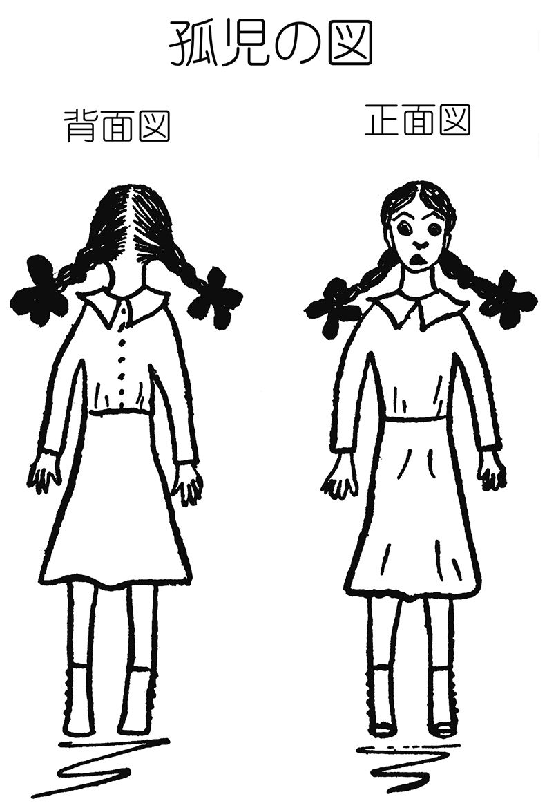
子供時代を過ごした孤児院の批判をしたからって、気を悪くなさらないでくださいね。でも、いざとなれば、おじさまには最強の手段があります。だって、わたしの生意気が過ぎると思われたら、小切手の支払いをストップなさればいいのですから。こんな言い方は、失礼ですね。だけど、わたしに礼儀作法を期待なさるのが無理というものです。だって、孤児院は良家の子女の花嫁学校とはちがうんですから。
お察しと思いますが、大学で難しいのは、勉強じゃなくて遊びのほうです。わたし、二回に一回は、みんなが何のことを話しているのか理解できません。どうやら、わたし以外の全員が共有している過去の話をネタにジョークを言っているらしいのですが......。わたしは世間ではよそ者で、みんなの話す言葉がわかりません。これはみじめなものです。こういうみじめな気分、わたしは小さいころからずっと味わってきました。高校では、クラス全員が束になって、わたしのことをじろじろ見たものです。わたしは変わり者で、異質で、みんなそのことをわかっていたのです。わたし、顔に「ジョン・グリア孤児院」と書かれているような気分でした。そのうちに、慈善ぶりっ子が何人か、わざわざわたしに近寄ってきて、何か当たりさわりのない言葉をかけてくるんです。わたし、みんな大っきらいでした――とくに、慈善ぶりっ子は。
ここでは、誰もわたしが孤児院出身だとは知りません。サリー・マクブライドには、父と母は亡くなって親切な老紳士がわたしを大学にやってくれているの、と話してあります。この範囲までなら真実ですからね。わたし、意気地なしとは思われたくないけれど、でも、とにかく、ほかの子たちと同じになりたいのです。わたしの子供時代に重くのしかかっているあの思い出したくもない孤児院は、ほかのみんなとの決定的なちがいです。あの記憶に背を向けて締め出してしまうことができれば、わたしだって、ほかの子たちと同じようにすてきな女の子になれるんじゃないかと思うんです。中身はそんなにちがわないと思うのですが、どうでしょうか？
とにかく、サリー・マクブライドはわたしのことが好きみたいです！
いつもあなたの
ジュディ・アボットより
（旧称ジェルーシャ）
土曜日 朝
いま、この手紙を読みなおしたところです。あまり楽しい手紙ではありませんね。でも、しかたないんです。だって、月曜の朝までにレポートを一本書かなくちゃならないし、幾何学の復習をしなくちゃならないし、おまけに、ひどい鼻風邪をひいているので。
日曜日
きのう、この手紙を投函しわすれたので、ついでに怒り心頭の追伸を。けさの礼拝に来てお説教をした主教が何て言ったと思います？
「聖書の中で最もありがたい主のお言葉は、『貧しき者はつねに汝らとともにある（７）』であります。貧者というものは、わたしたちが慈善の心を持ちつづけられるよう、主がこの世につかわされたのです」だって。
まるで貧乏人が家畜みたいな言い方。わたしがこれほど完璧な淑女に育っていなかったら、礼拝のあと、主教にひとこと物申してやったところです。
２ ミケランジェロ（Michelangelo 英語読みではマイケランジェロ）をMichael Angeloと聞きまちがえて、大天使（archangel 英語読みはアーケインジェル）ミカエル（Michael 英語読みはマイケル）のような名前だ、と言っている。
３ ベルギーの詩人・劇作家（一八六二―一九四九）。一九一一年ノーベル文学賞受賞。戯曲『ペレアスとメリザンド』『青い鳥』など。
４ 前三世紀から前二世紀にかけ、三回にわたってローマとカルタゴが戦い、カルタゴが敗れた。第二次ポエニ戦争（ハンニバル戦争）では、カルタゴの名将ハンニバルがイタリアに攻めこんだものの、ローマを破ることはできなかった。
５ フランスの文豪アレクサンドル・デュマ（一八〇二―一八七〇）の作品。一八四四年。
６ 孤児たちのために寄附されたプレゼントが孤児院のクリスマス・ツリーにつるされていて、それをもらった、という意味。「子ヤギの革（kid）の手袋」と「子供用（kid）の手袋」をかけている。
７ 『新約聖書』「マタイによる福音書」二六章一一節。
一〇月二五日
あしながおじさんへ
バスケットボールのチームに選ばれました！ 左肩にできたみごとな青あざ、ご覧にいれたいくらいです。青色とマホガニーみたいなどす黒い赤色で、ところどころオレンジ色のすじがはいった青あざです。ジュリア・ペンドルトンも選抜テストに挑みましたが、受かりませんでした。ばんざ～い！

ね、わたしって、いやな性格なんです。
大学は日ごとに楽しくなってきています。同級生も、先生も、講義も、キャンパスも、食べ物も、ぜんぶ大好きです。アイスクリームが週に二回も出るし、コーンミールのぐちゃぐちゃのおかゆは出ません。
お手紙は月一回でよかったんですよね？ それなのに、わたしときたら、数日おきにお手紙を書いてしまって！ でも、この新しい冒険の毎日は興奮することだらけで、誰かに話さずにはいられないのです。そして、わたしの話し相手は、あしながおじさん以外にはいないのです。おしゃべりがうるさくても、許してくださいね。もう少しすれば落ち着きますから。もし、わたしからの手紙がうっとうしかったら、遠慮なくゴミ箱に投げこんでください。お約束します――次の手紙は一一月なかばまで書きません。
とってもおしゃべりな
ジュディ・アボットより
一一月一五日
あしながおじさんへ
聞いてください、きょう習ったことです。
正角錐台の側面積は、台形の上辺と下辺の総和にいずれかの台形の高さを乗じた値の二分の一に等しい。
信じられないけど、そうなんです。わたし、証明できるんですから！
わたしの服のこと、まだお話してませんでしたね？ ドレスは六着、どれもぜんぶ美しくて、わたしのために新調してもらったものばかりです。大きい子からのお下がりではなくて。孤児にとって、これがどれほど大きなよろこびか、たぶん、おじさまにはおわかりにならないでしょう。六着のドレスは、どれもおじさまから頂いたものです。すごく、すごく、ものすごく感謝しています。教育もありがたいけれど、六着の新しいドレスを持つという頭がくらくらするほどの経験に比べたら、何ほどのものでもありません。ドレスは視察委員のミス・プリチャードが選んでくれました。リペット院長でなくて、よかった！ 六着というのは、シルクにピンクの薄いモスリンを重ねたイブニングドレス（わたしがとびっきりの美人に見えます）、ブルーの教会用ドレス、赤い紗の生地に東洋風の縁飾りがついたディナードレス（これを着ると、ジプシーっぽく見えます）、もう一着バラ色のシャリスのディナードレス、グレーの街着用スーツ、それから授業に出るとき用のふだん着です。これっぽっちじゃジュリア・ラトリッジ・ペンドルトンにとってはたいした数のドレスじゃないかもしれないけれど、ジェルーシャ・アボットにとっては、もう、天にも昇る心地です！
おじさま、きっといまごろ、わたしのことを、なんて軽薄でくだらないやつだ、女子を教育するなど金の無駄遣いだったわい、とお思いでしょう？
でもね、おじさま、生まれてからず～っとギンガムチェックの服を着せられて育ったら、わたしの気もちがおわかりになると思います。しかも、高校に通うようになったら、ギンガムチェックよりもっとひどいことになったのです。
慈善箱。
慈善箱に入れられていたぼろの古着を着て学校へ行かなければならないのがどんなに最悪な気分だったか、おじさまにはわからないと思います。教室ではきまって慈善箱の服のもとの持ち主だった子のとなりに座らされて、その子がひそひそ、くすくす、わたしを指さしながらほかの子たちにしゃべるんです。敵が捨てた服を着なければならないくやしさは、魂にギリギリと食いこみます。このあと生涯ずっと絹のストッキングをはいて過ごせたとしても、あの心の傷はぜったいに消し去ることができないと思います。
最新の戦況報告！
前線リポート
一一月一三日木曜の第四時限、ハンニバルはローマ軍の前衛部隊を潰走させ、カルタゴ軍を率いて山岳地帯を越え、カシリヌム平原へ進軍。軽装備のヌミディア歩兵隊がクイントゥス・ファビウス・マクシムスの歩兵隊と交戦。二回の戦闘と小競り合いののち、ローマ軍は多数の死傷者を出して退却。
前線より
特派員の栄に浴する
Ｊ・アボット記者
追伸 手紙へのお返事を期待してはならないことは承知しておりますし、質問をしてはならないと警告もされておりますが、おじさま、今回だけ、今回いちどだけ、お答えいただきたいのです。おじさまは、すごく年寄りですか？ それとも、少しだけ年寄りですか？ それから、頭はつるっぱげでいらっしゃるのでしょうか？ それとも、ややはげでいらっしゃるのでしょうか？ おじさまのことを幾何学の定理のような抽象概念として考えるのは、とても無理があります。
背が高くて女の子が大きらいなお金持ち、そのくせ、かなり生意気な某女子大生にはすごく惜しみなく与えてくださる方、というのは、どんな外見をしていらっしゃるのでしょう？
お返事願います。
一二月一九日
あしながおじさんへ
お返事、くださいませんでしたね。重要な質問だったのに。
おじさまはハゲですか？
おじさまの容貌を細部まできっちり考えてみました。かなりうまく想像できたのですが、頭のてっぺんを描く段になって、行きづまってしまいました。おじさまが白髪なのか、黒髪なのか、ごましお頭なのか、それとも毛がぜんぜんないのか、決められないのです。
これが、おじさまの絵です。
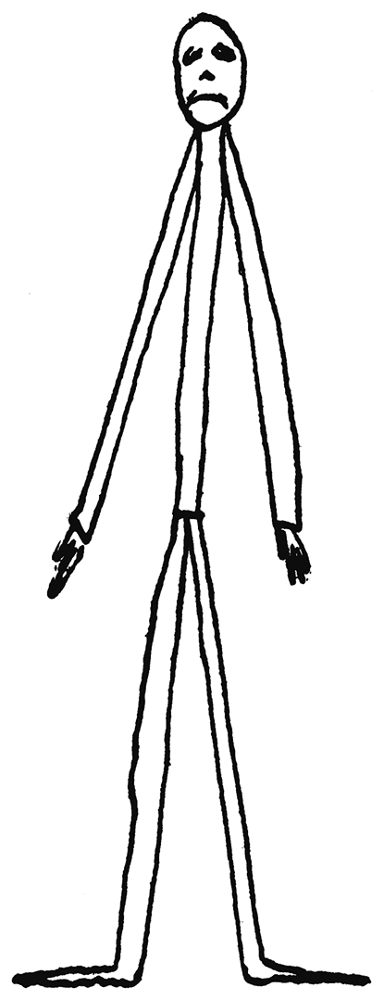
問題は、髪の毛を描くべきかどうか、というところです。
目はどんな色か、お知りになりたいですか？ おじさまの目はグレーで、眉毛がポーチのひさしのように覆いかぶさっていて（小説では「げじげじ眉」と書きますね）、口は真一文字で、両端が下がりぎみです。ほらね、わたし、ちゃんとわかっているんですから！ おじさまは、かんしゃく持ちのガミガミじじいです。
（礼拝の鐘が鳴りました）
午後九時四五分
ひとつ、どんな事情があろうとも死守するルールを作りました。翌朝どれだけたくさんの試験が控えていようとも絶対に絶対に夜は勉強しない、というルールです。そのかわりに、ふつうの本を読むのです――というのも、わたしの場合、一八年間のブランクがあるからです。わたしがどれほどものを知らないか、おじさまはきっと信じられないと思います。わたしだって、いまようやく事の重大さを自覚しはじめているところなのですから。ふつうの家庭で親きょうだいや友人や本に囲まれて育った子ならあたりまえに知っていることを、わたしは聞いたことさえないのです。
たとえば、わたしは『マザー・グース』も、『デイヴィッド・カッパーフィールド』も、『アイヴァンホー』も、『シンデレラ』も、『青ひげ』も、『ロビンソン・クルーソー』も、『ジェイン・エア』も、『不思議の国のアリス』も知らなかったし、ラドヤード・キプリングの詩も読んだことがありませんでした。ヘンリー八世が何度も結婚したことも知らなかったし、シェリーが詩人だってことも知りませんでした。人間がかつてサルだったことも、エデンの園は美しい神話にすぎないことも、知りませんでした。Ｒ・Ｌ・Ｓがロバート・ルイス・スティーヴンスンの頭文字だということも知らなかったし、ジョージ・エリオットが女性だということも知りませんでした。『モナ・リザ』の絵を見たこともなかったし、信じられないでしょうけどシャーロック・ホームズの名前だって聞いたことがありませんでした（８）。
いまでは、ぜんぶ知っていますし、それ以外のこともいっぱい知っています。でも、追いつくためにはまだまだがんばらなければならないことがおわかりになると思います。とはいっても、これはとっても楽しい努力です！ 毎日、夜になるのが待ち遠しいです。夜になったら、ドアに「とりこみ中」の札をかけて、お気に入りの赤いバスローブにくるまって、毛がモコモコの室内履きをはいて、長椅子の背にありったけのクッションを積んで、読書用スタンドをすぐ脇に持ってきて、本を読んで読んで読みまくるんです。一冊だけじゃ足りなくて、同時に四冊読んでいます。いまは、テニスンの詩集と、『虚栄の市』と、キプリングの『高原平話集』と、（笑わないで！）『若草物語（９）』を読んでいます。この大学で、子供のころに『若草物語』を読んでいない学生は、わたしだけでした。でも、そのことは誰にも言っていません（そんなことを言ったら変人の烙印を押されてしまいます）。わたしは黙って本屋へ行って、先月のお小遣いから一ドル一二セントを出して『若草物語』を買いました。こんど誰かが塩漬けライムの話をしたら、わたしも話についていけるというわけです！
（一〇時のベルです。ずいぶんと中断の多い手紙になってしまいました）
土曜日
拝啓
幾何学の方面における戦況をご報告申し上げます。先週の金曜日をもって、対峙を続けてきた平行六面体より撤退し、切頭角柱へ転戦することとあいなりました。行軍は困難をきわめ、苦戦続きであります。
日曜日
来週からクリスマス休暇が始まるので、廊下はトランクが山積みで足の踏み場もないくらいです。みんな興奮で浮き足立って、勉強どころではありません。わたしは休みのあいだすごく楽しい計画を立てています。寮には、もう一人、一年生でテキサスから来ている子が家に帰らずに残るので、いっしょに遠足に出かける予定です。氷の張っているところがあれば、スケートにも挑戦してみるつもりです。それに、読みたい本もいっぱいあるし。たっぷり三週間も暇な時間があるのです！
さようなら、おじさま。おじさまもわたしと同じくらい幸せなご気分でいらっしゃることをお祈りしています。
いつもあなたの
ジュディより
追伸 質問へのお返事をお忘れなく。手紙を書くのが面倒なら、秘書氏に電報を打たせてください。簡単な電文でいいのです。
スミス氏 つるっぱげ
あるいは
スミス氏 はげにあらず
あるいは
スミス氏 ごましお頭
とか。
電報代の二五セントは、わたしのお小遣いから差し引いてください。
それでは、一月までさようなら。メリークリスマス！
８ 『マザー・グース』はイギリスに古くから伝わるさまざまな童謡。『デイヴィッド・カッパーフィールド』はチャールズ・ディケンズの小説（一八四九年）。『アイヴァンホー』はウォルター・スコットの小説（一八一九年）。『シンデレラ』と『青ひげ』はシャルル・ペローの童話（一六九七年）。『ロビンソン・クルーソー』はダニエル・デフォーの小説（一七一九年）。『ジェイン・エア』はシャーロット・ブロンテの小説（一八四七年）。『不思議の国のアリス』はルイス・キャロルのファンタジー小説（一八六五年）。シャーロック・ホームズはアーサー・コナン・ドイルの探偵小説の主人公。
９ 『虚栄の市』はウィリアム・サッカレーの小説（一八四七年～一八四八年）。『若草物語』はルイザ・メイ・オルコットの小説（一八六八年）。
クリスマス休暇の終わりごろ
正確な日付は不明
あしながおじさんへ
おじさまのところでも雪が降っていますか？ わたしの塔の部屋から見える世界は一面が白い雪に覆われて、空からはポップコーンと同じくらい大きな雪が舞い降りてきます。いまは夕方で、寒そうな黄色の太陽がもっと寒そうな紫色の丘のかなたへ沈んでいくところです。わたしは窓ぎわのベンチ（ドレッサー）に腰を下ろして、日没前の明かりでこの手紙を書いています。
五枚の金貨（10）、びっくりしました！ わたし、クリスマス・プレゼントをもらいなれていないので。それでなくても、すでにたくさんのものをいただいているのに――わたしの持っているもの、すべてです――これ以上いただくのは申し訳ない気がします。でも、とってもうれしいです。いただいたお金で何を買ったか、お話しましょうか？
革ケースつきの銀時計。腕にはめて、授業時間に遅れないようにします。
マシュー・アーノルド（11）の詩集。
湯たんぽ。
ひざかけ（この塔は寒いのです）。
黄色い原稿用紙五〇〇枚（もうすぐ文筆活動を開始する予定）。
類語辞典（作家の語彙を増補するため）。
（本当は白状したくないのですが）シルクのストッキング。
さあ、これでぜんぶ正直に書きました！
白状しますが、シルクのストッキングは、きわめて卑しい動機からです。ジュリア・ペンドルトンが幾何の勉強のためにわたしの部屋へ来るとき、長椅子に足を組んで座るのですが、毎晩いつもシルクのストッキングをはいているのです。でも、これでもう負けていません――ジュリアが休暇からもどってきたら、わたし、ジュリアの部屋へ訪ねていって、長椅子に腰を下ろしてシルクのストッキングを見せてやります！ ね、おじさま、わたしって、くだらない人間でしょう？ でも、少なくとも、わたしは正直です。それに、わたしが完璧な人間でないことは、孤児院の記録からすでにご存じですよね？
概括するに（国語の先生は、口を開くとき二回に一回はこう言います）、七つのプレゼントを心からありがたく存じます。この七つのプレゼントはカリフォルニアから小包で届いたんだ、って思うことにしています。時計はお父さまから、ひざかけはお母さまから、湯たんぽはおばあちゃまから（おばあちゃまったら、いつも、わたしがこんな寒い土地へ来て風邪をひくんじゃないかと心配しているんです）、黄色い原稿用紙は弟のハリーから。姉のイザベルからはシルクのストッキング、スーザン叔母さまからはマシュー・アーノルドの詩集、そしてハリー叔父さま（弟のハリーはこの叔父さまの名前をいただいたのです）からは辞典。叔父さまはチョコレートをくださりたかったんだけど、わたしがぜひにと類語辞典をお願いしたのです。
おじさま、わたしの親族全員の役をおじさまにお願いしてもかまいませんよね？
さて、と、それでは休暇中のお話をしましょうか？ それとも、おじさまは、いわゆる大学教育のほうに関心をお持ちなのでしょうか？ この「いわゆる」という言葉の微妙な意味あい、おわかりいただけるといいのですが。つい最近、わたしの語彙に加わった表現です。
テキサスから来ている女学生はリオノーラ・フェントンという名前で（ジェルーシャに負けないくらいヘンテコリンな名前ですよね）、わたしは彼女が好きです。ただし、サリー・マクブライドほど好きではありません。サリーみたいに好きになれる相手はいないと思います――おじさまは別として。おじさまのことは、どんなときだって、いちばん好きに決まっています。だって、おじさまはわたしの家族全員をひっくるめた存在なのですから。天気のいい日は毎日のように、リオノーラとわたしと二人の二年生とで田舎道を歩いて大学の周辺を探検しました。短めのスカートをはいて、ニットの上着を着て、帽子をかぶって、ホッケーのスティックを持って、あちこちひっぱたきながら歩くのです。一度は町まで六・五キロ歩いていって、女子大生たちがよく食事をするレストランに寄りました。ロブスターのオーブン焼き（三五セント）と、メープルシロップつきのそば粉のケーキ（一五セント）。安くて栄養たっぷりです。
あちこち歩きまわる散歩は、とっても楽しかったです！ とくに、わたしにとっては。だって、孤児院とはまるっきり別世界なんだもの。わたし、いまだに大学のキャンパスから外に出るたびに自分が逃亡犯になったような気分がします。それで、うっかり、散歩がどんなにドキドキな経験かなんて口にしてしまいました。あやうくバレそうになりましたが、あぶないところでごまかしました。頭の中にあることを口に出さずにおくのは、わたしにはすごく難しいことなんです。もともと隠しごとのできない性格なので。おじさまに話せなかったら、きっと破裂しちゃうと思います。
この前の金曜日の夜は、糖蜜キャンディ作りの会がありました。ファーガスン寮の寮母先生がほかの寮も含めて休暇中に残っている学生たちのために会を催してくれたのです。一年生も二年生も三年生も四年生も、みんな仲良く力を合わせて働きました。寮のキッチンは巨大で、石造りの壁に並んでかかっている銅のフライパンや鍋ときたら、いちばん小さいキャセロール鍋でも洗濯桶ぐらいの大きさなんです。ファーガスン寮には四〇〇人の寮生がいますからね。白い帽子をかぶって白いエプロンをつけたコックさんが、わたしたち用に二二人分の白い帽子とエプロン（そんなにたくさん、どこにあったのでしょう？）を出してきてくれて、わたしたちも全員コックさんに早変わり。
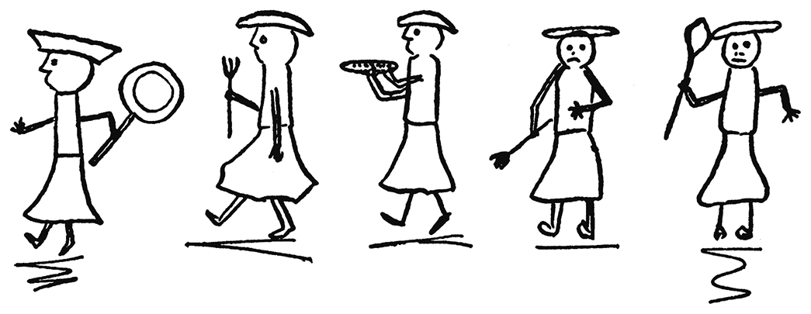
すごく楽しかったです。キャンディの出来はまあまあというところでしたが。キャンディが固まって、自分たちもキッチンもドアノブもみんなすっかりベタベタになったところで、わたしたちはコックの帽子とエプロンをつけたまま、大きなフォークやスプーンやフライパンを持って行進をしました。一列になって、誰もいない廊下を練り歩いて、教授や講師たち六人が静かな夕べを過ごしている職員応接室まで行きました。そして、大学の校歌や応援歌を披露してから、キャンディをお勧めしました。教授たちは礼儀正しく、ただしちょっとうさんくさそうな顔でキャンディを受け取りました。で、教授たちが糖蜜キャンディを口に入れてベタベタでものが言えなくなっているうちに、わたしたちは応接室をあとにしたのでした。
というわけで、おじさま、ご安心ください。わたしの教育は着々と進んでおります！
ところで、まじめな話、わたしって物書きじゃなくて絵描きになるべきだと思いませんか？
あと二日で休暇が終わります。みんなが大学にもどってくるのが待ち遠しいです。いまの塔内は、ちょっと寂しいから。定員四〇〇人の寮に九人しかいないと、やっぱりガラガラです。
一一ページも書いちゃった――気の毒に、おじさま、読み疲れたでしょう？ ほんの短いお礼状を書くつもりだったのに、書きはじめたらペンがひとりでに走ってしまいました。
さようなら。そして、わたしのことを思ってくださって、ありがとうございます。この完璧な幸福感をおびやかす小さな暗雲が地平に......二月に試験が迫っているのです。
愛をこめて
ジュディより
追伸 愛をこめるのは、あまり適切ではないですか？ だったら、お許しください。でも、わたし、誰かを愛さずにはいられないし、対象といったらおじさまかリペット院長しかいないんです。だから、おじさまにがまんしていただくしかありません。リペット院長を愛するのは無理ですから。
夕刻
あしながおじさんへ
学校じゅうが勉強に没頭しているようす、ご覧に入れたいくらいです！ 少し前まで休暇だったなんて、ウソみたい。ここ四日で五七個の不規則動詞を頭にたたきこみました――試験が終わるまで頭の中から消えないでくれと祈るばかりです。
使い終わった教科書を売り払っちゃう子もいるけど、わたしは取っておくつもりです。そうすれば、卒業したあとも勉強したことすべてが本棚に並んでいるわけだし、詳しい内容が必要になったときはいつでもさっと教科書を見ればすむわけだし。自分の頭の中におぼえておくより、ずっと簡単で正確です。
今夜、ジュリア・ペンドルトンがわたしの部屋に遊びにきて、丸々一時間も居座っていきました。それで、家系の話になったんだけど、彼女、いったん家系の話を始めると止まらないんです。で、わたしの母親の旧姓は何というのか、って聞くんです。孤児院出身の人間にそんな質問をするなんて、無作法きわまりないと思いませんか？ わたし、知らないと答える勇気がなかったので、なさけないことに、思いついた最初の名前を口にしてしまいました。その名前は「モンゴメリー」です。そしたら、ジュリアは、それはマサチューセッツのモンゴメリーなのか、ヴァージニアのモンゴメリーなのか、と聞いてきました。
ジュリアの母親はラザフォード家の出身なんだそうです。ラザフォード家はノアの方舟に乗ってやってきた家系で、ヘンリー八世と姻戚関係があるんだそうです。父方の一族はアダムより古い家系らしいです。ジュリアの家の家系図のてっぺんには、絹みたいにつややかな毛のはえた特別にしっぽの長い上等な種類のサルが座ってるんでしょうね、きっと。
今夜は、本当はもっと感じのいい楽しくておもしろい手紙を書くつもりだったけど、眠すぎて。それに不安だし。一年生というのは、楽じゃありません。
それでは。
試験を間近に控えた
ジュディ・アボットより
日曜日
最愛なるあしながおじさま
ものすごく、ものすごく、ものすごく悪いニュースをお伝えしなくてはならないのですが、その前に、まず楽しい気分になれる話から。
ジェルーシャ・アボットは、作家への第一歩を踏み出しました。「わが塔から」という詩が校友誌「マンスリー」の二月号に掲載されることになったのです。それも、巻頭ページに。一年生としては、ものすごく名誉なことです。きのうの夜、チャペルから戻る途中で国語の先生が声をかけてくれて、とても魅力的な作品でした、欲を言えば六行目の韻がくどいけれども、とほめてくれました。ご覧になりたいかもと思い、おじさまにも一部お送りする予定です。
ええと、ほかに楽しいことは......そうだ、ありました！ わたし、スケートの練習をしているんです。どうにかひとりで滑れるようになりました。あと、体育館の天井から垂らしたロープを伝って降下することもできるようになりました。走り高跳びは一メートル五センチを跳べます。そのうち一メートル二〇センチまで跳べるようになりたいです。
けさの教会のお説教はアラバマ州からいらした主教様で、とてもためになるお話でした。きょうの御言葉は「人を裁くな。裁かれざらんためなり（12）」で、要するに、他人のまちがいは大目に見てやることが大切で厳しく断罪して心をくじくのはよくない、という内容でした。おじさまにもお聞かせしたいようなお説教でした。
きょうはお日さまの光がさんさんと降りそそいで、まぶしいほどの冬の午後です。雪の重みで頭を垂れていたモミの木やその他もろもろのつららが解けて、水がぽたぽた落ちています。わたしだけは例外で、悲しみにうちひしがれて頭を垂れています。
さあ、お話しなければ――勇気を出して、ジュディ！
おじさま、本当に、いま、ご機嫌うるわしいですか？ じつは、わたし、数学とラテン語で落第点を取ってしまいました。いま補講を受けていて、来月追試があります。がっかりさせてしまったら、ごめんなさい。でも、そうでないなら、わたし自身はちっとも何とも思っていません。だって、履修便覧にのっていないことを、ものすごくたくさん学んだからです。小説を一七冊読んだし、詩も山のように読みました。『虚栄の市』や『リチャード・フィーヴァレルの試練（13）』や『不思議の国のアリス』のように、すごく重要な作品ばかりです。あと、エマソンの『エッセイ』と、ロックハートの『ウォルター・スコット伝』と、ギボンの『ローマ帝国衰亡史』の第一巻と、ベンヴェヌート・チェッリーニの『自伝』を半分まで。チェッリーニって、おもしろい人だったんですね。朝食前にぶらっと出かけて、さらっと人殺しをしちゃうような人だったんです。
ね、おじさま、ジュディはラテン語に没頭するよりもずっとかしこくなりました。もう二度と落第点を取らないと約束しますから、今回だけは許してくださいませんか？
深く後悔している
ジュディより
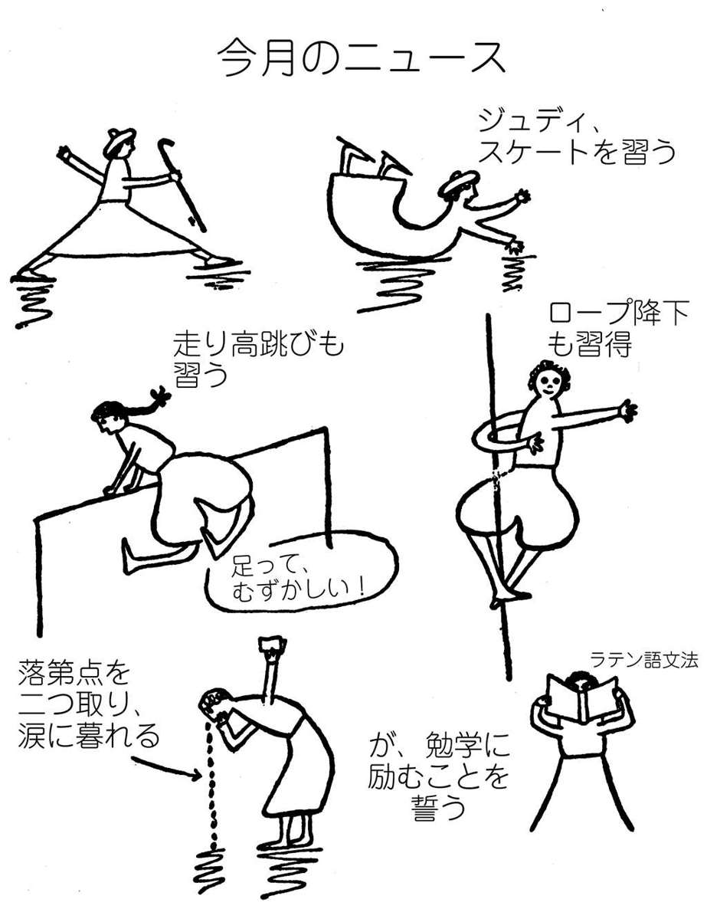
あしながおじさんへ
月のなかばですが、またお手紙を書いています。今夜は、なんだか人恋しいのです。外はひどい嵐です。雪がわたしのいる塔に吹きつけています。キャンパスの明かりはすべて消えて真っ暗ですが、ブラックコーヒーを飲んだせいで眠れないのです。
今晩、サリーとジュリアとリオノーラ・フェントンを招いて夕食会をしました。メニューは、イワシの油漬け、トーストしたマフィン、サラダ、ファッジにコーヒーです。ジュリアは「楽しかったわ」と言っただけでしたが、サリーは残って皿洗いを手伝ってくれました。
こういう夜こそラテン語の勉強をするのにうってつけなのでしょうが、わたしはどう転んでもラテン語の優等生にはなれそうにありません。講義ではリウィウスを終わり、キケロの『老境について』と『友情について』をやっています。
あの、お願いがあるのですが......少しのあいだでけっこうですので、わたしのおばあちゃまになってもらえませんか？ サリーにはおばあちゃまが一人いて、ジュリアとリオノーラには二人ずついて、今夜はおばあちゃまの比べっこになったのです。わたし、いま、何よりもおばあちゃまが欲しくてたまりません。おばあちゃまほど自慢できる親族はないと思います。なので、おじさまがお嫌でなければ......。きのう、町に出たとき、ラヴェンダー色のリボン飾りがついたクリュニー・レースのとってもすてきな帽子を見かけたのですが、それをスミスおばあちゃまの八三歳のバースデー・プレゼントにお贈りしたいのです。
！！！！！！！！！！！！
礼拝堂の塔の時計が一二時を打ちました。やっと眠くなってきたかな。
おやすみなさい、おばあちゃま
心から愛しています
ジュディより
10 この作品が発表された当時、アメリカで流通していた金貨の額面は、二〇ドル、一〇ドル、五ドル。
11 イギリスの耽美派詩人（一八二二―一八八八）。
12 『新約聖書』「マタイによる福音書」七章一節。
13 ジョージ・メレディスの長編小説（一八五九年）。
三月のイードゥース（14）
あしなが様
いま、ラテン語の作文を勉強中です。わたしは、いままでラテン語を勉強していました。わたしは、この先もラテン語を勉強しているでしょう。わたしは、もうすぐ、ラテン語を勉強しつづけていたことになるでしょう。追試はこんどの火曜日の七時間目です。何が何でも合格するか、さもなくば討ち死にの覚悟です！ つぎのお手紙では、晴れて履修単位を勝ち取って万々歳のジュディでお目にかかるか、それとも、刀折れ矢尽きたジュディに終わるか、はっきりするでしょう。
追試が終わったら、ちゃんとしたお手紙を書きます。今夜は絶対奪格（15）との交戦が差し迫っておりますゆえ。
風雲急を告げている
Ｊ・Ａより
14 イードゥースはラテン語で一五日のこと。英語では「アイズ」。三月一五日は、シェイクスピアの戯曲『ジュリアス・シーザー』でカエサル暗殺の日を予告する有名な言葉。
15 ラテン語の文法用語。
三月二六日
拝啓
貴殿は質問に何ひとつご回答くださいません。わたくしの活動に何ひとつ関心のかけらもお示しになりません。貴殿はおそらく忌まわしい評議員諸氏の中でも特段に忌まわしい方であり、わたくしを教育してくださる理由はわたくしに関心を抱かれたからでは毛頭なく、義務感からに相違ないと拝察いたします。
わたくしは貴殿に関して何ひとつ存じません。お名前さえ存じません。モノ相手に手紙を書くというのは、退屈きわまりない行為です。わたくしの手紙は読まれないままゴミ箱に捨てられているにちがいありません。今後は学業についてのみ書くことといたします。
ラテン語と幾何学の追試は先週でした。両科目とも合格し、晴れて進級いたしました。
敬具
ジェルーシャ・アボット
四月二日
あしながおじさんへ
わたしは最低な人間です。
先週のひどい手紙のことは、どうか忘れてください。あの手紙を書いた夜、わたしはめちゃくちゃに淋しくて、みじめで、のどが痛かったのです。そのときはまだわからなかったのですが、扁桃腺炎とインフルエンザとその他いろいろなものがいっしょになって倒れる直前だったのでした。いまは医療棟にいます。ここに運びこまれて六日になります。きょう、はじめて、ベッドの上で起きて紙とペンを持つ許可が出ました。ここの婦長さんは、すごく厳しいんです。でも、ずっとあの手紙のことが頭から離れなくて、おじさまに許してもらうまで病気は治らないような気がするのです。
いまのわたしは、この絵のようなありさまです。顔のまわりに包帯を巻かれて、ウサギの耳みたいになっています。
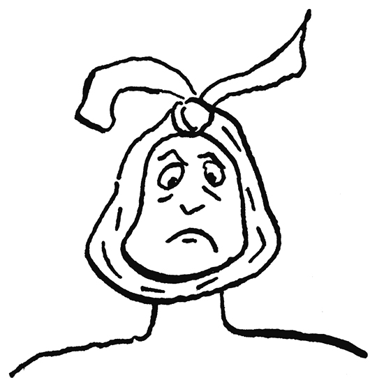
わたしを哀れと思ってお許しいただけませんでしょうか？ 舌下腺が腫れているんです。ここ一年のあいだ生理学を勉強してきましたが、舌下腺なんて聞いたこともありませんでした。教育なんて、たいして役に立たないものです。
きょうは、ここまでにします。あまり長く起きていると、手が震えてしまうので。生意気で恩知らずのわたしを、どうか許してください。孤児院で育ったせいなのです。
愛をこめて
ジュディ・アボット
医療棟にて
四月四日
大好きなあしながおじさんへ
きのうの夕方、暗くなりかけてきたころ、ベッドの上に起きて雨降りの外を眺めながら病院暮らしをひどく退屈に感じていたとき、看護婦さんが長い白い箱を持ってはいってきました。その箱はわたし宛てで、中には最高に最高にすてきなピンクのつぼみのバラがいっぱいはいっていました。それに、もっとうれしいことに、とってもていねいな手書きのメッセージ・カードが添えてありました。右肩上がりに並んでいる左傾斜のへんてこな字。でも、お人柄がとってもしのばれる字です。おじさま、ありがとうを一〇〇〇回申し上げます。おじさまがくださった花束は、わたしが人生でもらった初めての本物のプレゼントです。わたしったら、子供みたいにベッドに突っ伏して泣いてしまいました。うれしすぎて。
わたしの手紙を読んでくださっていることがわかったので、これからは、いっそう腕によりをかけて楽しい手紙を書きます。赤いテープでたばねて金庫にしまっておいていただけるくらいの手紙を。ただ、このあいだのひどい手紙だけは別です。燃やしてしまってください。また読まれるかもしれないと思うと、いたたまれません。
ひどい病気で気分がめいっているみじめな一年生を元気づけてくださって、ありがとうございました。たぶん、おじさまは愛する家族や友人がたくさんいらして、ひとりぼっちの気分がどんなものか、ご存じないでしょう。でも、わたしは知っています。
さようなら。もう二度とあんなひどい手紙は書きません。だって、おじさまが本物の人間だとわかったのですから。それに、もうこれ以上うるさく質問攻めにしたりもいたしません。
おじさまって、女の子がきらいなのですか？
ずっとあなたの
ジュディより
月曜日、八時
あしながおじさんへ
ヒキガエルの上に座った評議員さんがおじさまでなかったことを祈っています。かなり派手な音をたてて破裂したという話だったので、きっと、もっと太った評議員さんだったのでしょうね。
ジョン・グリア孤児院の洗濯室の窓ぎわにちょっと地面が掘り下げられた溝があって、そこに上から鉄格子がかぶせてあったのをおぼえていらっしゃいますか？ 毎年、春になってヒキガエルが出る季節になると、わたしたちはヒキガエルを集めて、その窓ぎわの溝に入れて飼っていたものです。で、ときどき、ヒキガエルが越境して洗濯室にまぎれこむと、洗濯の日に大騒ぎになって、それが楽しくて。こういうことをするとひどい罰を受けるのですが、それでもヒキガエル集めは止みませんでした。
そして、ある日――細かい退屈な経緯は省きますが――どうしたわけか、とくに太って大きくて汁気たっぷりのヒキガエルが評議員室のあの大きな革のひじかけ椅子にまぎれこんで、その日の午後、評議員の会議で......たぶん、おじさまはその場にいらして残りの部分はおぼえていらっしゃいますよね？
こうしてしばらく時間がたったあとで冷静にふりかえってみると、あのときの罰は当然だったと思うし、わたしの記憶が正しいとしたら、妥当であったとも思います。
どうしてこんな思い出話をする気になったかというと、春になってヒキガエルの季節がめぐってくるたびに、昔の収集癖が目ざめるからです。いま、その収集癖が発揮されずにすんでいるのは、ひとえに、それを禁止する規則が存在しないからです。
木曜日、礼拝のあと
わたしの好きな本って、何だと思いますか？ いまの時点で、という意味です。三日ごとに変わりますから。答えは『嵐が丘』です。エミリー・ブロンテという人は、あの若さで、しかもハワース教会の敷地から一度も外に出たことがなくて男の人を知らなかったのに、どうやってヒースクリフみたいな男性を想像できたのでしょう？
わたしには、とても無理です。わたしだってすごく若いし、ジョン・グリア孤児院から外に出たことがなかったのだから、条件的にはいい勝負だったはずなのですが。ときどき、自分には才能なんかないんじゃないかという恐ろしい思いに襲われます。わたしがりっぱな作家になれなかったら、おじさまはすごくがっかりなさるでしょうか？ 春が来て、何もかもが緑に美しく芽吹く季節になると、わたし、勉強なんかほっぽり出して外へ遊びに走っていきたくなってしまうんです。野山には冒険がいっぱいあるんだもの！ 本を書くよりも本の世界を生きるほうがずっとずっとおもしろいです。
ギャッ！！！！！！
いまのわたしの悲鳴を聞いて、サリーとジュリアと（やっかいなことに）四年生が廊下のむこうから走ってきました。悲鳴の原因は、こんな感じのムカデです。
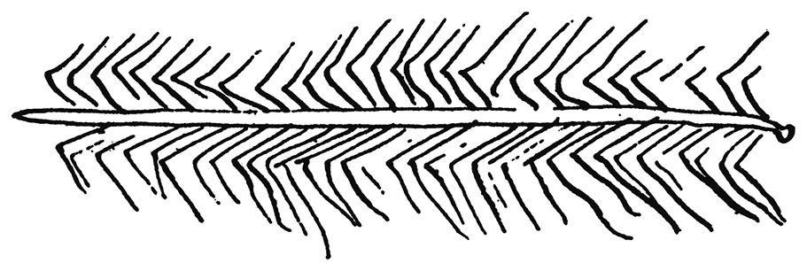
現物は、この絵よりもっとキモチワルイです。さっきの文章を書きおわって、つぎに何を書こうかと考えていたときに、ドサッ！ と天井から落ちてきて、わたしのすぐそばに着地したのです。逃げようとして、ティーテーブルにのっていたカップを二個落っことしてしまいました。サリーがわたしのヘアブラシの背でムカデをひっぱたいて――もう二度とそのヘアブラシは使えません――ムカデの前半分を殺したけど、後ろの足五〇足（16）が走ってドレッサーの下に逃げこんでしまいました。
この寮は古いし、壁がツタに覆われているので、ムカデがいっぱいいるのです。ムカデって、キモチワルイ生き物です。ベッドの下にトラでもいたほうが、まだまし。
金曜日、午後九時三〇分
きょうは災難つづきの一日でした！ 朝、起床のベルが聞こえなくて寝過ごして、急いで着がえてる最中に靴のひもが切れるし、衿留めの飾りボタンは首もとから中へ落ちちゃうし。朝食に遅刻、一限の授業にも遅刻してしまいました。吸い取り紙を忘れていったら、そういう日にかぎって万年筆がインク漏れを起こすし。三角法の授業では対数のちょっとした問題に関して教授とわたしの意見が合わず、調べてみたら教授のほうが正しくて。ランチはマトンのシチューとルバーブ――わたし、両方とも大きらい。孤児院の味がするんだもの。届いた郵便は請求書ばかりで（といっても、請求書以外のものが届いたためしもないんですけど。わたしの家族は筆まめじゃないので）。午後の国語の授業では、抜き打ちの作文テスト。こんな課題でした。
わたしが望んだものはただひとつ。
そのただひとつは与えられず。
ために存在を捧げると申し出たら
強大なる商人がにやりと笑った。
ブラジル？ 彼はボタンをもてあそび
こちらには目もくれず
だが、マダム、ほかに
きょうご入用のものは（17）？
これは詩です。誰が書いたのか、どういう意味なのか、さっぱりわかりません。教室にはいったら黒板にこれが書いてあって、それについて論評せよ、という課題だったのです。第一連を読んだときには、強大なる商人というのは神で、善行への報いとして祝福を与える存在ではないかと考えたのですが、第二連でボタンをもてあそぶくだりが出てきたので、これでは神を冒瀆することになるのではないかと思い、すぐに考えを変えました。ほかの学生たちも同じところで行きづまっていました。そんな状態で、白紙の解答用紙を前にして、頭の中も真っ白なまま、四五分間教室で七転八倒していたというわけです。教育を受けるのは、ひどく疲れるものです！
でも、これで一日が終わったわけではありません。もっとひどいことがあったのです。
外は雨だったので、きょうはゴルフができず、かわりに体育館へ行くことになりました。そしたら、となりの女の子に体操用の棍棒でひじを殴られてしまいました。寮に帰ってみたら、新調したブルーの春用ドレスの箱が届いていたんだけど、スカートがぴったりすぎて座れませんでした。金曜日はお掃除の日なのですが、部屋掃除の人がわたしの机の上の書類をぜんぶごちゃまぜにしてしまいました。デザートには墓石（バニラ風味の牛乳ゼリー）が出るし。礼拝ではいつもより二〇分も長く女らしさについての話を聞かされて、しかも、そのあと、やれやれとため息をつきながら『ある婦人の肖像（18）』を読みはじめようとしたところへ、アッカリーという名前の薄ぼんやりした青白い顔の救いがたくバカな子が部屋を訪ねてきて（この子、名前がＡで始まるので、ラテン語のクラスでわたしのとなりに座ってるんです。リペット先生、わたしの名前をＺから始まる「ザブリスキー」とかにしてくれたらよかったのに）、月曜日の授業は六九番目のパラグラフからか、それとも七〇番目のパラグラフからか、って話だけで一時間も居座ったんです。いま、やっと帰ったところ。
こんなに災難ばかり続く日なんて、聞いたことありますか？ 高潔な人格が必要なのは、人生の大きな困難に直面したときではないと思います。誰だって、危機や悲劇に直面したときには勇気をもって立ち向かうことができるものです。でも、日々のちょっとした災難を笑いとばすことにこそ、強い心が必要なのだと、わたしは思うのです。
わたしがめざすのは、そういう心を持った人間です。人生なんてたかがゲームよ、精一杯戦って、負けたら肩をすくめて笑っちゃえばいいし、勝ってもやっぱり肩をすくめて笑っちゃおう、というふうに考えたいと思います。
とにかく、わたしは潔い人間でありたいと思います。ですから、おじさま、今後はジュリアがシルクのストッキングをはいていようと、ムカデが落ちてこようと、二度と不平不満は申しません。
いつもあなたの
ジュディより
お返事、はやくください。
16 英語ではcentipede（centiは百、pedeは足）、日本語でも「百足」。
17 アメリカの女性詩人エミリー・ディキンソンの難解な詩。
18 ヘンリー・ジェイムズの小説（一八八一年）。
五月二七日
あしながおじさん殿
拝啓。リペット院長より書簡を受領いたしました。品行および学業において大過なくやっていることを願っている、とのお言葉でした。おそらくこの夏はほかに行くあてもないだろうから、孤児院にもどって大学が再開するまで寄宿料がわりに働くことを許す、とのお達しでした。
わたし、ジョン・グリア孤児院なんて、大っきらいです。
孤児院にもどるくらいなら、死んだほうがましです。
敬具
ジェルーシャ・アボット
Cher Daddy-Jambes-Longes
Vous etes unいい人です！
農場のこと、Je suis tres heureuse、parsque je n'ai jamais農場にdans ma vie行ったことがないし、ジョン・グリアにもどってtout l'été皿洗いをするのはぜったいいやだからです。Quelque chose affreuseが起こるかもしれません、parsque j'ai perdue ma humilité d'autre fois、quelque jour頭にきてdans la maisonカップやお皿をぜんぶ割ってしまうのではないかとj'ai peur。
こんなノート用紙にPardon brièveté。Mes nouvellesをもうこれ以上は送ることがJe ne peux pas、parseque je suis dansフランス語の授業中で、tout de suiteMonsieur le Professeurに当てられそうだからです。
ほら、当てられた！
Au revoir,
Je vous aime beaucoup.
ジュディより（19）
19 原文は英語とまちがいだらけのフランス語がごちゃまぜになった文章。
五月三〇日
あしながおじさんへ
この大学のキャンパス、ご覧になったことがありますか？ （これは修辞的な質問です。気にしないでください。） 五月のキャンパスは、天国みたいな美しさです。低木がいっせいに花をつけて、背の高い木々は新緑に変わります――松の老木でさえ、みずみずしい若木に見えます。芝生にはあちこちに黄色いタンポポの花が咲いて、青や白やピンクのドレスを着た何百人という女子学生がいろどりを添えています。誰もが楽しく晴れ晴れとした表情です。というのは、もうすぐ夏休みだから。夏休みの楽しさを思えば、試験なんか、どうってことありません。
こういう気分を幸せって言うんですよね？ なかでも、わたしはいちばんの幸せ者です！ だって、孤児院から解放されたんですから。もう子守りをさせられたり、タイピストをさせられたり、簿記係をさせられたりすることもありません（おじさまのおかげです）。
いまとなっては、過去の悪行すべてを反省しています。
リペット院長にたてついて、ごめんなさい。
フレディ・パーキンスをなぐって、ごめんなさい。
砂糖入れに塩を入れて、ごめんなさい。
評議員さんたちの背後であかんべーをして、ごめんなさい。
わたし、すべての人たちに対して善良で優しく親切にしてあげようと思います、だって自分が幸せだから。そして、この夏は、書いて書いて書きまくって、偉大な作家への第一歩を踏み出すつもりです。りっぱな決意だと思いませんか？ わたし、性格のよい人間になろうと努力しているところなんです！ 寒さや霜の季節には気高い決意も少しはしおれるけれど、太陽が輝く季節になればぐんぐん伸びていきます。
人間って、みんなそんなものだと思います。わたし、逆境や悲しみや失望が心を強くするという説には同感できません。親切心にあふれているのは、自分自身が幸福な人たちです。厭世家（いい言葉でしょう？ 最近仕入れたばかりです）なんて信じません。おじさまは厭世家ではないですよね？
そうそう、キャンパスの話をしようと思っていたのでした。おじさま、少しの時間でいいからキャンパスにおいでくださればいいのに。わたし、おじさまをこんなふうに案内してさしあげたいんです。
「あれが図書館です。そして、こっちはボイラー施設なんですよ、おじさま。左手に見えるゴシック調の建物は体育館で、そのとなりのチューダー・ロマネスクっぽい建物は新しい医療棟です」
わたし、施設を案内するのは上手なんです。孤児院でしょっちゅうやっていたから。それに、この大学でも、きょう一日じゅう案内係をしていたんです。本当ですよ。
しかも、相手は男の人です。
特筆すべき経験でした。わたし、これまで男の人とは一度も話したことがありませんでした（ときどきおいでになる評議員さんは別として。でも、評議員さんは数にはいりません）。ごめんなさい、おじさま。評議員さんのことを悪く言っておじさまの感情を傷つけるつもりはないんです。おじさまのことは、本当には評議員じゃないと思っています。たまたま何かの拍子に評議員会のメンバーにされてしまっただけで。いわゆる評議員というのは、太っていて、もったいぶっていて、慈善家っぽい顔をしている人だと思います。そして、孤児の頭をポンポンと軽くたたいたりして、金鎖の時計をつけている人です。
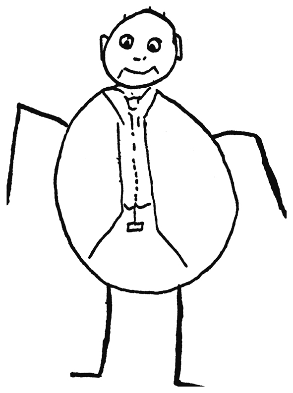
この絵、コガネムシみたいに見えますが、おじさま以外の評議員さんの絵です。
話をもどします。
わたし、男の人とお散歩して、おしゃべりして、お茶を飲んだんです。それも、すごく上流の方。ジュリアの一族のジャーヴィス・ペンドルトン氏です。手短に言えば（手短にじゃなくて、足長に、かな？ ペンドルトン氏はおじさまと同じくらい背高のっぽだったから）、ジュリアの叔父さまです。仕事で近くまで来たので、ちょっと大学まで足を延ばして姪っ子を訪ねてみようと思われたのだそうです。ペンドルトン氏はジュリアのお父さんのいちばん下の弟さんなんだけど、ジュリアはあまり親しくないみたい。どうやら、ペンドルトン氏は赤ちゃんのジュリアをちらっと見て、かわいくない子だと思って、それっきりずっと無関心だったみたいです。
とにかく、ペンドルトン氏は応接室にすごくお行儀よく座ってお待ちでした。帽子とステッキと手袋をかたわらに置いて。ジュリアとサリーは七時間目の授業をどうしても抜けられなかったので、ジュリアがわたしの部屋へ駆けこんできて、叔父さまにキャンパスを案内してあげてほしい、そのあと七時間目が終わったら自分のところへ連れてもどってほしい、と頼みにきたのです。わたしはペンドルトン一族があまり好きになれないから気が進まなかったけど、引き受けました。
でも、会ってみたら、ジュリアの叔父さまはとってもいい人でした。ちゃんとした人間で、ぜんぜんペンドルトンっぽくないんです。ペンドルトン氏とわたしはすばらしい時間を過ごしました。わたし、それ以来ずっと、叔父さまが欲しくてしかたないんです。おじさま、わたしの叔父さまをやってもらえませんか？ わたしの見解では、叔父さまはおばあちゃまよりずっと上等な親族だと思います。
ペンドルトン氏は、ちょっとおじさまに似た感じの人でした。おじさまを二〇歳若くしたような。ほらね、わたし、一度もお会いしたことがなくても、おじさまのことをよく知っているんです！
ペンドルトン氏は背が高くて、やせっぽちで、しわだらけの浅黒い顔で、なんとも変わった表情でくすっと笑う人です。パッと笑顔がはじけるんじゃなくて、口の両端をくいっと上げてちょっと笑う、みたいな。それと、会ったとたんに相手を昔からの知りあいみたいな気分にさせる特技の持ち主です。すごく親しみやすい人です。
わたしたちは中庭から運動場まで、キャンパスをくまなく歩きまわりました。そのあと、ペンドルトン氏が少し疲れたからお茶を飲みたいとおっしゃって、カレッジ・インに寄ろうと提案されました。カレッジ・インはキャンパスを出て松並木を少し歩いたところにあります。わたしはジュリアとサリーのところにもどらなければ、と言ったんだけど、ペンドルトン氏は姪っ子たちにはあまりお茶を飲ませたくないのだ、神経がたかぶるから、とかおっしゃって。それで、わたしたちはキャンパスを離れて、カレッジ・インのすてきなバルコニー席でお茶とマフィンとマーマレードとアイスクリームとケーキをいただきました。カレッジ・インはいいぐあいに空いていました。月末で、みんなお小遣いが残り少なくなっている時期だからです。
もう、とびっきり楽しい時間でした！ でも、ペンドルトン氏がキャンパスにもどったときには列車の時間がぎりぎりで、ジュリアとはろくに話もしませんでした。ジュリアは、わたしが叔父さまを横取りしたと言ってカンカンでした。どうやら、ペンドルトン氏はめちゃくちゃお金持ちで好ましい叔父さまのようです。わたしは、ペンドルトン氏がお金持ちだとわかって、ほっとしました。だって、お茶や何かで一人六〇セントもかかったんだもの。
けさ（きょうは月曜日です）、速達便でジュリアとサリーとわたしに三箱のチョコレートが届きました。どう思います？ 男の人からチョコレートが届くなんて！
わたし、孤児じゃなくて一人前の女の子になったような気がしてきました。
おじさまもいつか大学にいらして、お茶をごいっしょできたらいいのに。そしたら、おじさまのことを好きになれるかどうか、わかるでしょう？ でも、好きになれなかったら......いいえ、好きになるに決まっています、わたしにはわかるんです。
Bien! それではお別れのご挨拶を。
"Jamais je ne t'oublierai."
ジュディより
追伸 けさ、鏡を見たら、いままで気づかなかった完璧に新しいえくぼを発見しました。ヘンなの。どうしてできたんでしょう？
六月九日
あしながおじさんへ
やった～！ いま、最後の試験が終わったところです――生理学。そして、これから農場での三カ月が始まります！
農場というところがどういうものなのか、わたしは知りません。生まれて一度も農場へ行ったことがないのです。見たこともありません（列車の窓から見たのを別にすれば）。でも、わたし、きっと農場が好きになると思います。それに、自由でいられることがうれしいんです。
いまだに、わたしは自分がジョン・グリア孤児院の外にいるのだという事実を本当の本当には実感できていません。孤児院を思い出すたびに、ギュッと緊張して、背中に冷たい震えが走ります。後ろをふりかえりながらどんどん走らなくちゃ、もっと走って逃げなくちゃ、リペット院長が両手をのばして連れ戻しに来るかもしれないから、と思えてしまうのです。
ことしの夏は、わたし、誰に指図されることもないんですよね？
おじさまが名目上の権限を握っていらっしゃることは、ちっとも気になりません。だって、おじさまはすごく遠くにいらして、わたしに実害が及ぶ心配はないからです。リペット院長は、わたしに関するかぎり、いなくなったも同然だし、センプルさんご夫妻にもわたしの内面を監督する役目はないでしょう？ それは心配ないと思います。つまり、わたしは完全に一人前ということです。ばんざーい！
それでは、手紙をおしまいにして、荷造りにとりかかることにします。トランク一個と、あと、湯沸かしやお皿やクッションや本を詰めた箱が三個です。
いつもあなたの
ジュディより
追伸 生理学の試験問題を同封します。おじさま、合格できそうですか？
ロック・ウィロー農場にて
土曜の夜
大好きなあしながおじさんへ
まだ着いたばかりで荷解きもしていないのですが、農場をどんなに気に入ったかを早くお知らせしたくて。ここは本当に本当にすばらしい、天国みたいにすてきな場所です！ 家は四角くて、こんな感じです。すご～く古い建物。築一〇〇年くらいでしょうか？ この絵に描けない側にベランダがあって、正面にはかわいらしい玄関ポーチがあります。この絵ではちゃんと伝わらないと思いますが――羽毛のはたきみたいに見えるのはカエデの木で、小道ぞいに並んでいるチクチクとんがった木はマツやツガです。この農場は丘のてっぺんにあって、ここから先に何キロも緑の牧草地が続いていて、さらにその先に別の丘がうねうねとつらなっているのが見えます。
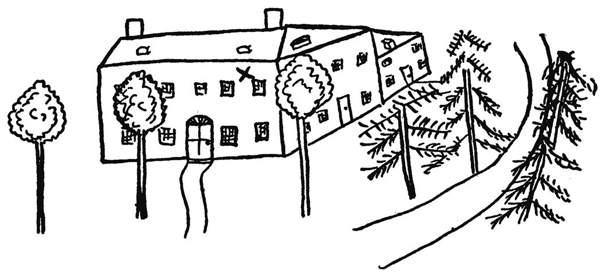
コネチカットという土地がそういう地形で、マルセル・ウエーブ（20）のように土地がうねっているのです。そして、ロック・ウィロー農場はそうしたウエーブのひとつに乗っかっている、という形です。以前は道路をはさんで向かいに納屋が何棟か建っていたので景色が見わたせなかったのですが、ありがたくも天が雷を落として納屋を焼いてしまったのだそうです。
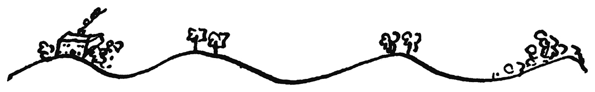
農場の主はセンプルさんご夫妻で、ほかに使用人の女の人が一人と男の人が二人います。使用人は台所で食事をして、センプルさんご夫妻とジュディはダイニングルームで食事をいただきます。きょうの夕食には、ハムと卵とホットビスケットとハチミツとゼリーケーキとパイとピクルスとチーズとお茶が出ました。あと、食事の席では会話もおおいに盛りあがりました。わたし、こんなに人を笑わせたことって、生まれて初めてです。わたしが口にするひとことひとことが、ぜんぶおもしろいらしいです。それもそうだろうと思います、だって、わたし、田舎に来たのは初めてで、底なしの無知から発する質問ばかりなのですから。
最初の絵で×印のついている部屋は殺人事件が起こった部屋......ではなくて、わたしが使わせてもらっている部屋です。大きくて四角いがらんとした部屋で、古風でとってもすてきな家具がはいっていて、窓は支柱をつっかえ棒にして開けるタイプの窓で、グリーンに金色の縁取りの日よけはさわると落っこちます。それと、大きくて真四角なマホガニーのテーブルもあります。わたし、夏じゅうこのテーブルに向かって小説を書くつもりです。
おじさま、わたし、興奮で胸がいっぱいです！ 朝になって探検に出るのが待ち遠しいです。いまは夜八時半で、そろそろロウソクの火を吹き消して寝ようと思っています。明日の朝は五時起きなので。こんな楽しい生活、経験したことがおありですか？ これが本当にジュディの身に起こっていることだなんて、信じられないくらいです。おじさまと神様は、わたしに分不相応なほどのものを与えてくださいました。わたし、このご恩に報いるために、すごく、すごく、すごくりっぱな人間にならなくては。きっと、そうなります。見ていてください。
おやすみなさい
ジュディより
追伸 カエルの鳴き声と、子ブタのキィキィ鳴く声をお聞かせしたいです。あと、この新月もお見せしたいです！ わたしは右の肩ごしに新月を見ました（21）。
20 一九世紀にパリの美容師マルセル・グラトーが考案したヘア・アイロンを使った髪のウエーブ。
21 右肩ごしに新月を見るのは縁起が良く、左肩ごしに見るのは縁起が悪い、という迷信があった。
ロック・ウィローにて
七月一二日
あしながおじさんへ
おじさまの秘書は、どうしてロック・ウィローを知っていたのでしょう？ （これは修辞的な質問ではありません。ぜひとも知りたいと思っています。） だって、聞いてください、この農場はかつてジャーヴィス・ペンドルトン氏の所有だったものを、ご自分の乳母だったセンプルさんに譲ってあげたものなんだそうです。こんな不思議な偶然の一致って、聞いたことあります？ センプルさんはいまだにペンドルトン氏のことを「ジャーヴィー坊っちゃま」って呼んでいて、小さいころどんなにかわいかったか話して聞かせてくれるんです。それに、いまでも「ジャーヴィー坊っちゃま」が赤ちゃんだったときの髪がひとふさ箱に取ってあって、見たら赤毛――というか、とにかく赤っぽい毛でした！
わたしがジャーヴィス・ペンドルトン氏を知っているとわかったら、センプルさんのわたしに対する評価がおおいに上がりました。ロック・ウィローでは、ペンドルトン一族の誰かを知っているということは、どんな紹介状より効き目があるみたいです。しかも、そのペンドルトン一族の中でも「ジャーヴィー坊っちゃま」はいちばん上等らしくて、ジュリアの家は下っ端の分家らしいです。いい気味。
農場での暮らしは、毎日毎日楽しいことだらけです。きのうは乾草を運ぶ荷馬車に乗せてもらいました。この農場には大きなブタが三匹いて、子ブタが九匹います。その食べっぷりときたら！ まさにブタの名に恥じぬ食べっぷりです。ヒヨコやアヒルや七面鳥やホロホロチョウは数えきれないくらいバサバサいます。農場で暮らせる身分なのに、都会で暮らしている人なんて、頭がどうかしていますよ。
わたしの日課は卵の回収です。きのうは納屋の屋根裏の乾草置場の梁から落っこちました。黒いめんどりが横取りして卵を産んだ巣まで這っていって卵を取ろうとして、落っこちたのです。それで、膝をすりむいて戻ってきたら、センプルさんの奥さんがウィッチヘーゼル（22）をつけて包帯を巻いてくれて、そのあいだじゅう「まあ！ まあ！ ジャーヴィー坊っちゃまがその同じ梁から落っこちて膝の同じところをすりむいたのが、きのうのことみたいですよ」ってつぶやいていました。
このあたりの景色は、本当に美しいです。渓谷があって、川が流れていて、樹木の茂った丘がつらなっていて、はるか遠くにそびえる青い山は言葉につくせぬ美しさです。
この農場では週に二回バター作りをします。クリームは保冷小屋に保管しておきます。保冷小屋は石造りで、小屋の下を小川が流れているんです。このあたりの農家ではクリーム分離器なるものを使うところもあるけれど、うちの農場はそういうハイカラなものは使いません。平鍋にミルクを入れてクリームを分離するのはちょっと手間がかかるけど、手間をかけただけのおいしさがあります。ここには子牛が六頭います。わたしがみんなに名前をつけました。
１ シルヴィア 森で生まれた女の子だから。
２ レスビア カトゥルス（23）にちなんで。
３ サリー
４ ジュリア ブチの平凡な子牛。
５ ジュディ わたしの名を取って。
６ あしながおじさん おじさまのお名前、いただいてもかまわないでしょう？ この子は純粋のジャージー種で、とても性格のいい子です。見た目は、下の絵みたいな感じ――「あしながおじさん」の名前がピッタリでしょ？
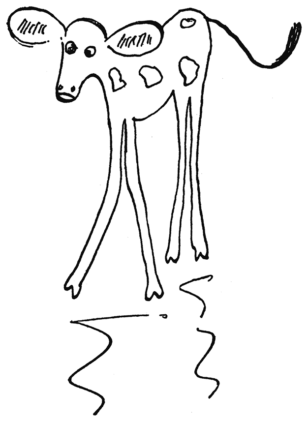
いまのところ、まだ不朽の名作に着手する時間がありません。農場の生活は、なかなかに忙しいのです。
つつしんで
ジュディより
追伸 ドーナツの作り方を教わりました。
追伸その二 ニワトリを飼うなら、バフ・オーピントン種がおすすめです。バフ・オーピントンには筆毛（24）がありません。
追伸その三 わたしがきのう作った新鮮なおいしいバターをお届けできなくて残念です。わたし、酪農に向いているみたい！
追伸その四 これは「未来の大作家ジェルーシャ・アボット嬢が牛追いに励むの図」です。
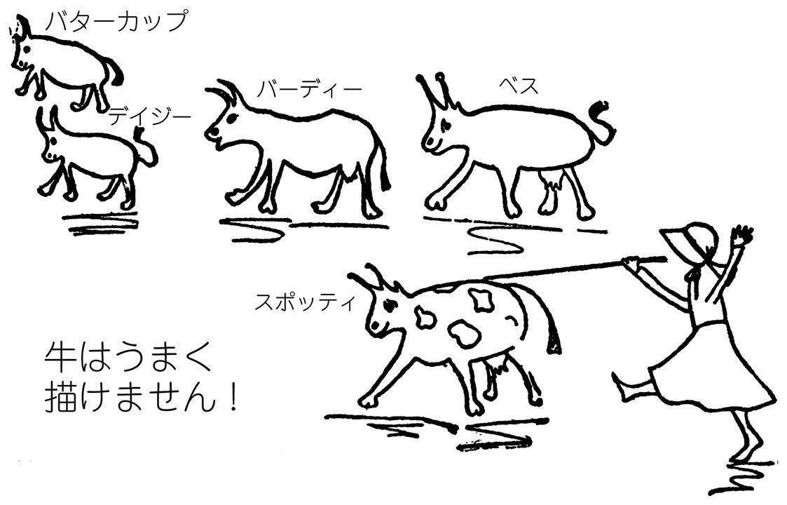
日曜日
あしながおじさんへ
おもしろいことがありました。きのうの午後、この手紙を書きかけたのですが、最初の「あしながおじさんへ」と書いたところで夕食用にブラックベリーを摘んでくる約束だったのを思い出して、手紙をテーブルに置いたまま出かけたのです。そして、きょう、もどってみたら、紙の真ん中に何がいたと思いますか？ 本物の足長ぐもです！
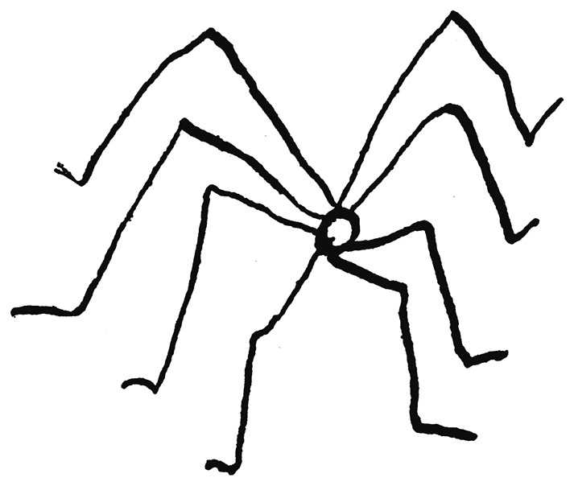
そ～っと足をつまんで、窓から外に出してやりました。足長ぐもに乱暴なことなんか、ぜったいできません。いつも見るたびに、おじさまのことを思い出すんだもの。
けさは荷馬車に馬をつけて、町の教会まで行きました。教会は、尖塔がひとつあって、正面にドーリア式の柱（イオニア式かな？ いつもこんがらがってしまいます）が三本並ぶ、白くて小さい木造のかわいらしい建物です。
眠気を誘うありがたいお説教があって、みんなシュロの葉のうちわで風を入れながらうとうと聞いていました。牧師さんの声のほかに聞こえるのは、外の木にとまって鳴くセミの声だけ。はっと目がさめたときには、わたし、立ち上がって讃美歌を歌っていました。そのときになって、お説教を聞いていなかったことを残念に思いました。というのは、こういう讃美歌を選ぶ人の心理について、もう少し知りたいものだと思ったからです。
来たれ、現世の慰み打ち捨て
愉しき天堂に相集わん
さなくば永遠の訣別にて
堕ちて業火に滅ぶべし
センプル夫妻とは宗教に関する話をしないほうが安全だとわかりました。センプル夫妻の神様（遠いピューリタンの祖先からそっくりそのまま受けついだ神様です）は狭量で、不合理で、不公平で、意地悪で、執念深くて、偏屈なお方です。わたし、ご先祖様から神様を受けつがなくて、ほんとによかった！ 自分で好きな神様を作れるんだもの。わたしの神様は親切で、慈悲深くて、想像力があって、寛大で、ものわかりが良くて――あと、ユーモアのセンスもあるお方です。
わたし、センプル夫妻が大好きです。あの人たちの日々の実践のほうが、教理よりはるかにりっぱだと思います。生身のご本人たちのほうが信仰してる神様より上等だと思うのです。わたし、お二人にそう言ってあげました――そしたら、二人とも、ひどく困った顔になってしまいました。わたしを冒瀆的だと思ったみたい――わたしはセンプルさんたちの考え方こそ冒瀆的だと思いますけど！ わたしたちはそれっきり神様についての会話はしないことにしました。
いまは日曜日の午後です。
アマサイ（25）（この農場の使用人）は紫色のネクタイをつけて、派手な黄色のバックスキンの手袋をはめて、ヒゲをきれいに剃った真っ赤な顔でキャリー（こちらも使用人）を馬車に乗せて出かけていったところです。キャリーは赤いバラの飾りをつけた大きな帽子をかぶって、ブルーのモスリンのドレスを着て、髪をこれでもかというくらいカールさせていました。アマサイはたっぷり午前中かけて馬車を洗っていました。キャリーのほうは昼ごはんの料理があるからといって教会に行きませんでしたが、本当はモスリンのドレスにアイロンをかけていたんだと思います。
あと二分でこの手紙を書きあげて、屋根裏部屋で見つけた本を読みはじめる予定です。『追跡』というタイトルの本で、最初のページに少年のへんてこな文字で、こんなふうに書いてあります。
ジャーヴィス・ペンドルトン蔵書
この本がほっつき歩いていたら
横っ面を張って家へ送り返してください（26）
ペンドルトン氏は一一歳のころ、病みあがりのひと夏をこの農場で過ごしたのだそうです。そのときに『追跡』を置いていったのですね。ずいぶんくりかえし読んだみたいで、あちこちに小さなよごれた手のあとがついています！ 屋根裏部屋の片隅には、おもちゃの水車と風車と弓矢も残っていました。センプルさんの奥さんがあんまりペンドルトン氏の話ばかりするので、なんだかペンドルトン氏がすぐそばにいるような気がしてしまいます――シルクハットにステッキを持った紳士のペンドルトン氏ではなくて、髪の毛がくしゃくしゃに乱れた泥だらけのかわいいジャーヴィー坊っちゃまが。きっと、階段をダダダダ～ッとけたたましく駆けあがって、網戸は開けっ放し、しょっちゅうクッキーをおねだりしていたんでしょうね（センプルさんの奥さんを見れば、毎回クッキー獲得に成功していたことは疑いありません！）。ペンドルトン氏は冒険心の強い子だったようです――それに、勇敢で正直な子だったみたいです。そんな人がペンドルトン一族の生まれだなんて、お気の毒です。もっとましな家柄に生まれればよかったのに。
あす、オート麦の脱穀を始める予定です。蒸気で動く脱穀機と助っ人三人が来ることになっています。
そうそう、嘆かわしい話があります。バターカップ（角が一本しかないブチの雌牛でレスビアのお母さん牛）の恥ずべき非行です。バターカップときたら、金曜日の夕方、果樹園にはいりこんで、木の下に落っこちてるリンゴを食べて食べて食べまくって、とうとう酔っぱらっちゃったみたいで（27）、そのあと丸々二日間も酔いつぶれていたのです！ 本当の話ですよ。こんなスキャンダラスな話、聞いたことあります？
敬具
あなたの親愛なる孤児
ジュディ・アボットより
追伸 第一章はインディアン、第二章は追いはぎ。かたずを飲んで続きを読むところ。第三章は何が登場するのでしょう？「レッドホークは空中に六メートルも飛び上がり、ドオッと地面に倒れた」――これが口絵のキャプションです。ジュディとジャーヴィー、楽しそうでしょ？
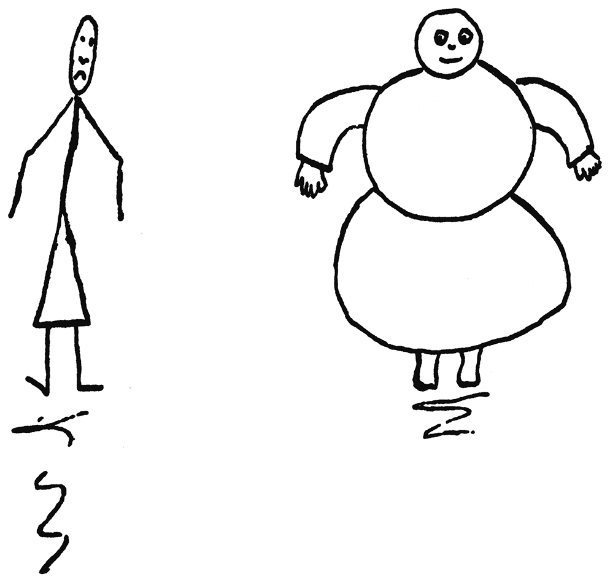
22 アメリカマンサクの樹皮を煎じて作る民間薬。打撲傷の塗り薬などに使われる。
23 ローマの詩人。レスビアという名の女性に宛てた恋愛詩を多数書いた。
24 新しく生えかわった羽根が鞘に包まれて筆のように見える状態をいう。筆毛は羽根の中に血がかよっているため、折れたり傷ついたりすると多量に出血する。
25 『旧約聖書』（「歴代誌上」六章）にレビ一族として「アマサイ」の名があるので、ユダヤ系と推察される。
26 紛失した本が持ち主のもとへもどるよう、蔵書票などに記されていた決まり文句。
27 落果したリンゴがアルコール発酵していたものと思われる。
九月一五日
おじさま
きのう、四つ辻の雑貨屋にある粉用の秤に乗ってみたら、四キロも体重が増えていました！ ロック・ウィローは保養地に最適です。
それでは
ジュディより
九月二五日
あしながおじさんへ
二年生になりました！ 先週の金曜日に帰ってきました。ロック・ウィローを離れるのは残念だったけれど、また大学のキャンパスにもどるのもいいものです。慣れ親しんだ場所にもどってくるというのは、やっぱり楽しい気分です。わたし、だんだんと大学生活に慣れてきて、右も左もわかるようになってきました。というか、実際、ふつうの世間で暮らすという経験に慣れてきた感じです――お情けでこの世界にまぎれこんだ者ではなくて、胸をはってこの世界の一員であるという感じ、でしょうか。
わたしが言おうとしていること、おじさまにはぜんぜんわからないだろうと思います。評議員になるほど重要な人物には、孤児になるほど不要な人間の気もちはわからないと思います。
ところで、おじさま、聞いてください。ことしは誰と同室だと思いますか？ サリー・マクブライドと、ジュリア・ラトリッジ・ペンドルトンです。本当ですよ。勉強部屋と小さな寝室が三つあって――こんな間取りです！
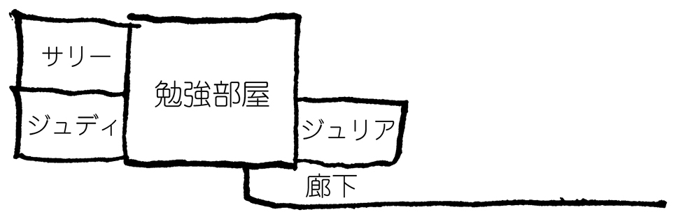
サリーとわたしはこの前の春からずっと同じ部屋になろうと約束していたのですが、そのあとジュリアがサリーと同室を続けようという気になったのです――どういう風の吹き回しか、わたしには想像できません。だって、あの二人、これっぽっちも共通点がないのですから。でも、ペンドルトン一族はもともと保守的で変化と相容れないものがある（いい表現でしょう⁉）のでしょう。とにかく、こういうことになりました。どうです、ジョン・グリア孤児院出身のジェルーシャ・アボットが、ペンドルトン一族の人間と同室になるなんて。この国は民主的ですね。
サリーは二年生の級長に立候補しています。よほどの番狂わせがないかぎり、当選するでしょう。陰謀に満ち満ちた空気をご覧あそばせ――わたしたち、なかなかの政治家ですことよ！ いいですか、おじさま、わたしたち女性が選挙権を得たあかつきには（28）、あなたがた男性は心して自分たちの権利を守ったほうがよろしゅうございますよ。選挙はこんどの土曜日で、そのあと、誰が当選したにしても、夕方にはたいまつ行列がおこなわれることになっています。
今学期から化学を履修することになりました。ものすごく変わった学問です。分子だの原子だのが出てきて、まるで、ちんぷんかんぷん。でも、来月になったら、きっと、もっと確かなお話をできるようになっていると思います。
ほかに履修する科目は、論理学と論証。
それから、世界史。
それから、シェイクスピア戯曲。
それから、フランス語。
この調子で何年も勉強すれば、わたし、すごくインテリになると思います。
本当はフランス語より経済学をとりたかったのですが、やめておきました。というのは、フランス語をもう一年やらないと教授が合格させてくれそうになかったからです――六月の試験はぎりぎり合格だったので。でも、それは高校時代の基礎がちゃんとできていなかったせいです。
クラスにフランス語が英語と同じくらいペラペラの子がいます。子供のころ両親といっしょにフランスに住んでいて、修道会の学校に三年間通ったんだそうです。わたしたちとは比べものにならないくらいフランス語が上手なの、想像できるでしょう？ 彼女にとっては、不規則動詞なんてお茶の子です。わたしの親も、わたしを孤児院なんかじゃなくてフランスの修道会にでも捨ててくれればよかったのに。あ、でも、それじゃダメです！ だって、それでは、おじさまと知りあうことはできなかったでしょうから。フランス語ができるより、おじさまと知りあえたほうがよかったです。
さようなら、おじさま。これからハリエット・マーティンの部屋を訪ねなくては。化学の話をしてから、さりげない調子でこんどの級長選挙について水を向けてみようという作戦です。
政治活動にいそしむ
Ｊ・アボットより
28 アメリカ合衆国で女性に参政権が認められたのは、この作品が発表されてから八年後の一九二〇年。
一〇月一七日
あしながおじさんへ
もしも体育館のプールの水がレモン・ゼリーだったら、その中で泳ぐ人は浮いていられるか？ それとも沈むか？
きょう、デザートにレモン・ゼリーが出たとき、この話題になりました。それから三〇分、激論が続いて、いまだ決着していません。サリーは泳げると思うと言うけど、わたしは世界でいちばん水泳が上手な人だってぜったい沈むに決まってると思います。レモン・ゼリーに溺れるなんて、笑えると思いませんか？
食堂で話題になったことは、あと二つありました。
一、八角形の家の部屋はどのような形か？ ぜったいに四角だと主張する子たちもいましたが、わたしはパイを切ったときみたいな三角形にならないとおかしいと思います。そう思いませんか？
二、内面が鏡張りのすごく大きな球体があって、その中に座っているとしたら、どこまで顔が映って、どこから背中が映るようになるか？ 考えれば考えるほど、わからなくなります。わたしたちが暇な時間にいかに深遠な哲学的思索に励んでいるか、おわかりでしょう！
級長選挙の結果について、お知らせしましたっけ？ 選挙は三週間前だったのですが、毎日が飛ぶように過ぎていくので、もう大昔だったような気がします。サリーが当選して、わたしたちは「マクブライド万歳」と書いた横断幕を掲げ、一四人（ハーモニカ三人、コーム（29）一一人）からなる楽隊を従えて、たいまつ行列をしました。
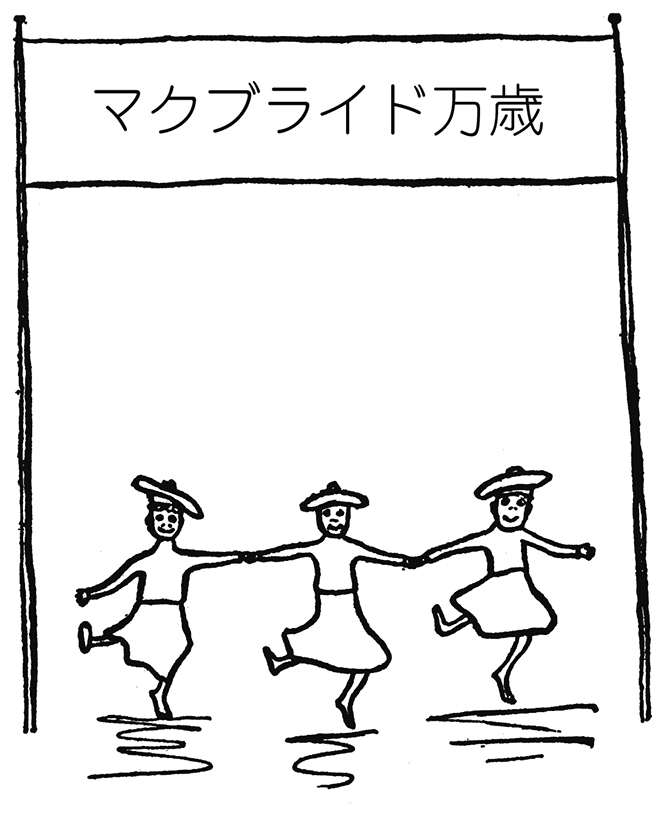
いまや、二五八号室のわたしたちはＶＩＰです。ジュリアとわたしも恩恵に浴しています。級長と同室というのは、なかなか大変なものです。
Bonne nuit,cherおじさま
Acceptez mes compliments,
Très respectueux.
Je suis, Votreジュディより
29 くしに薄紙をかぶせて楽器のように吹く。
一一月一二日
あしながおじさんへ
きのう、バスケットボールで一年生に勝ちました。それはもちろんうれしいのですが、三年生に勝てなかったのが残念！ 三年生に勝つためなら、わたし、全身が黒と青のあざだらけになってウィッチヘーゼルでぐるぐる巻きにされてベッドに一週間寝たきりでもかまわなかったのに。
サリーがクリスマス休暇に実家へ招待してくれました。サリーの家はマサチューセッツ州ウースターにあります。招待してくれるなんて、いい友だちでしょう？ わたし、ぜひ行ってみたいです。ふつうの家庭で暮らしてみた経験がないんだもの。ロック・ウィローはあるけれど、センプルさんご夫妻は大人だし年寄りだから、数にはいりません。でも、マクブライド家には子供たちがうじゃうじゃ（少なくとも二、三人は）いるし、お母さんがいて、お父さんがいて、おばあちゃんがいて、アンゴラネコまでいるんです。完璧な家族がそろっているんです！ トランクに荷物を詰めて出かけるのは、寮に残るよりずっと楽しいです。考えるだけで胸がわくわくします。
七時間目――急いでリハーサルに行かないと。わたし、感謝祭の演劇に出ることになっているんです。ベルベットの上着に金髪の巻き毛の王子様で、塔に幽閉されている役。おもしろそうだと思いませんか？
それでは
Ｊ・Ａ
土曜日
わたしがどんな顔してるか、お知りになりたいですか？ リオノーラ・フェントンが撮ったわたしたち三人の写真を同封します。笑っている色白の子がサリー、背が高くて鼻をツンと上向けているのがジュリア、チビで髪の毛が顔にかぶさっているのがジュディです。ジュディは本当はもっと美人なのですが、太陽の光が目にはいってまぶしかったのです。
「ストーンゲート屋敷」にて
マサチューセッツ州ウースター
一二月三一日
あしながおじさんへ
もっと早くにお手紙を書いてクリスマスの小切手にお礼を申し上げるつもりだったのですが、マクブライド家での毎日は夢のように楽しいことがいっぱいで、二分と続けて机の前に座っていられる時間がありませんでした。
新しいドレスを買いました。必要に迫られた買い物ではなく、ただ欲しかったからです。今年のクリスマスプレゼントは、あしながおじさんからいただきました。家族は愛だけ送ってきました。
サリーの家に来て、最高にすばらしい休暇を過ごしています。サリーの家は旧式なレンガ造りに白い縁取りの大きな屋敷で、通りから奥まったところに建っています。まさに、わたしがジョン・グリア孤児院にいたころ好奇心満々で眺めては中がどんなになっているんだろうと想像していたようなお屋敷です。自分の目で中を見られる日が来るとは思ってもいませんでした。でも、いま、こうして見ています！ 何もかも、とても居心地がよくて、リラックスできて、家庭的な雰囲気です。わたしは部屋から部屋へと歩いては調度品に見とれています。
この家は、子供たちが育つのに最適な家です。かくれんぼにちょうど好都合な薄暗い物陰があるし、ポップコーンを炒るのにちょうどいい暖炉があるし、雨の日に騒いでもだいじょうぶな屋根裏部屋があるし、階段にはつるつるのよく滑る手すりがついていて、いちばん下のところがいいぐあいに平らな欄干になっています。すごく広くて日当たりのいいキッチンには、この屋敷に一三年も住みこみで働いている太っちょで陽気な料理人さんがいて、いつも子供たちがパン焼きして遊べるようにパン種を取り分けておいてくれるんです。見てるだけで、ここで子供時代をやりなおしたくなるようなすてきなお屋敷です。
それに、家族もとってもすてき！ 家族がこんなにすてきなものだとは夢にも思いませんでした。サリーにはお父さんとお母さんとおばあちゃんがいて、髪がくるくるカールしたとっても愛らしい三歳の妹がいて、いつも靴の底をぬぐうのを忘れる中くらいの弟がいて、あとジミーという大きくてハンサムなお兄さんもいて、この人はプリンストン大学の三年生です。
食事のテーブルは、それはそれは陽気で、みんながあちこちで冗談を言いあっては笑っています。それと、食前のお祈りもしなくていいのです。一口食べるごとに誰かさんに感謝しなくていいというのは、ほっとします（わたしって罰当たりですよね。でも、おじさまだって、わたしと同じくらいさんざん感謝のお祈りばかり言わされたら、そういう気もちになると思います）。
わたしたち、すごくいろんなことをしました。書ききれないくらいです。サリーのお父さまのマクブライド氏は工場を経営していて、クリスマス・イブには社員の子供たち向けにプレゼントを吊るしたクリスマスツリーを飾りました。ツリーを置いた細長い荷造り発送用の部屋は、ときわ木やヒイラギで飾りつけてあって、ジミー・マクブライドがサンタクロースに扮して、サリーとわたしは社員の子供たちにプレゼントを渡すのを手伝いました。
それにしても、おじさま、なんとも奇妙な感覚でした！ まるでジョン・グリア孤児院の評議員さんと同じくらい慈悲深い気分になりましたよ。キャンディでベタベタになった小さな男の子にキスしちゃったくらい。でも、頭をぽんぽんとたたくようなことはしませんでしたけど！
クリスマスの二日後、マクブライド家は自宅でわたしのためにダンスパーティーを開いてくれました。
わたしにとっては、初めての本物のダンスパーティーでした――大学のダンスパーティーは数にはいりません。だって、女の子どうしで踊るんだもの。わたしは新しい白のイブニングドレス（おじさまからのクリスマスプレゼントです、ありがとうございます）を着て、白い長い手袋をして、白のサテンの舞踏靴をはきました。ただひとつ、わたしがジミー・マクブライドとコティヨン（30）の先導をつとめるところをリペット院長に見せてやることができたら、もう完璧に、最高に、無条件に幸せだったところです。こんどジョン・グリア孤児院にいらっしゃったときに、どうかリペット院長にこの話を聞かせてやってくださいね。
それでは
ジュディ・アボットより
追伸 おじさま、もしわたしが大作家にならなくて、ただの女の子になってしまったら、ひどくがっかりなさるでしょうか？
土曜日 六時三〇分
あしながおじさんへ
きょうは歩いて町へ向かったのですが、なんと！ ものすごい雨降りになりました。冬は冬らしく雪が降ってくれればいいのに、と思います。雨ではなくて。
きょうの午後、ジュリアのご自慢の叔父さまがまた訪ねてきました。そして、二・五キロ入りのチョコレートの大箱をおみやげにくださいました。ね、ジュリアと同室だと、いいこともあるんです。
ペンドルトン氏は女子大生の無邪気なおしゃべりがおもしろかったみたいで、わたしたちの部屋でお茶をするために列車を一本遅らせました。それにしても、お茶の許可をもらうのがものすごくたいへんでした。父親や祖父を寮に入れるだけでもひと騒動なのに、叔父さんとなったら、さらにたいへんです。これが兄弟やいとこだったら、ほぼ不可能です。ジュリアは公証人の前でペンドルトン氏が叔父であると宣誓したうえで、郡書記官が発行した証明書まで提出しなくてはなりませんでした（わたし法律に詳しいでしょ？）。それでも、学生部長がもし運悪くジャーヴィス叔父さまをちらっと見て、どんなに若々しくてハンサムか知ってしまったら、お茶はあきらめなければならないところでした。
とにかく、わたしたちは、黒パンのスイスチーズ・サンドイッチでお茶をしました。ペンドルトン氏はサンドイッチを作るのを手伝ってくださって、四切れも召し上がりました。わたしが去年の夏をロック・ウィローで過ごした話をしたら、センプルさんご夫妻のことやら、馬たちや牛たちやニワトリたちの話で、おおいに盛りあがりました。ペンドルトン氏が知っていた馬たちはもうみんな死んでしまって、残っているのはグローヴァーだけでした。グローヴァーは、ペンドルトン氏が最後に農場にいらしたときには子馬だったのに、いまではすっかり年老いてしまって、牧草地をよぼよぼ歩いているしまつです。
ロック・ウィロー農場ではいまでもドーナツを黄色い鉢に入れて蓋がわりに青い皿をかぶせてパントリーのいちばん下の棚に置いてあるのかと、ペンドルトン氏が質問しました――大正解、そのとおりです！ 夜間用の放牧エリアの岩場の下にあるウッドチャック（31）の穴はまだあるのかな？ と、ペンドルトン氏が聞きました――そのとおり、まだあるのです！ アマサイがこの夏、その穴で大きなよく太った灰色のウッドチャックをつかまえました。きっと、ジャーヴィー坊っちゃまが子供のころにつかまえたウッドチャックから二五代あとの子孫にちがいありません。
わたしが面と向かって「ジャーヴィー坊っちゃま」と呼んでも、ペンドルトン氏は嫌そうな顔をしませんでした。ジュリアは、あんなにご機嫌のいい叔父さまを見たのは初めてだと言いました。いつもは、かなりつんけんした人なんだそうです。でも、ジュリアはあしらいが下手すぎるんです。男の人というものは、うまくあしらってあげることが肝腎なんだと、わたしは思います。ちゃんとおだててあげれば、ネコが喉を鳴らすみたいに男の人はご機嫌になります。そうでないと、フーッとうなります（あまり上品な表現ではありませんでしたね。単なる比喩です）。
授業では、いま、マリ・バシュキルツェフ（32）の日記を読んでいます。すごいでしょう？ こんな感じです。「昨夜、わたしは突然の絶望に襲われ、思わずうめき声を発し、ついにはダイニングルームの時計を海に投げこんでしまった」
これじゃ天才なんかごめんだと思いたくなりますよね。天才がそばにいたら周囲は疲れるし、家具は破壊されるし。
すごい雨。ずっと降りつづいています。この調子だと、今夜の礼拝には泳いでいくことになりそうです。
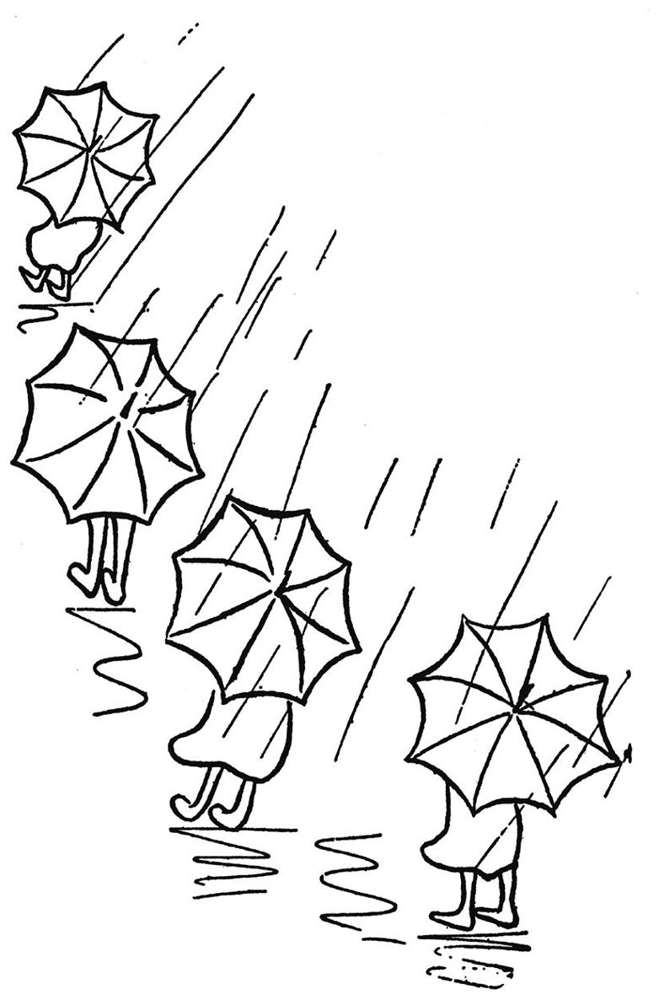
それでは
ジュディより
30 二人一組のダンスで、まず舞踏会の主役となる一組が自由に踊り、続いて入場してくる各組が主役の組のダンスをまねて踊る。
31 北米に生棲する大型リスの一種。
32 ロシア貴族出身の女性芸術家。
一月二〇日
あしながおじさんへ
おじさま、もしかして、生まれて間もない愛児をゆりかごから盗まれた、なんて過去はありませんか？
もしそうだったら、その赤ん坊がわたしかもしれません！ 小説なら、これで一件落着めでたしめでたし、というところですね。
自分が何者かわからないって、すごく変な気分です――なんだか、わくわくするような、ロマンチックなような。だって、ものすごくたくさんの可能性があるわけでしょう？ もしかしたら、わたし、アメリカ人ではないかもしれません。そういう人も少なくありませんから。あるいは、古代ローマ人の直系の子孫かも。でなければ、バイキングの娘、とか。あるいは亡命ロシア人の子で本来ならシベリアの刑務所に入れられてたはず、とか。でなければ、ジプシーかもしれません――たぶん、そんな気がします。わたし、すごく放浪したがりな精神の持ち主なんです。まだそれが十分に開花していないだけで。
わたしの恥ずべき前科をご存じですか？ クッキーを盗み食いしたためにお仕置きを受けて、孤児院から脱走した事件のことです。原簿に記録されていますから、評議員さんなら誰でも自由に閲覧できるはずです。でもね、おじさま、無理もないことだったんです。おなかをすかせた九歳の女の子にパントリーでナイフ磨きをさせておいて、すぐそばにクッキーのびんが置いてあって、女の子を一人きり残して監督の大人がいなくなったあと、いきなりもどってみたら、女の子が口や手にクッキーのかすをポロポロつけていたとしたって、無理はないでしょう？ 盗み食いをしたといって腕をぐいぐいねじあげられて、横っ面を張りとばされて、夕食でプディングが出たときに退席させられて、ほかの子供たち全員にあの子は泥棒なのだからと公表されたら、誰だって脱走したくなると思いませんか？
六キロほど逃げたところでつかまって連れもどされました。そのあと一週間、毎日、ほかの子供たちが休み時間に外で遊んでいるあいだ、わたしは悪さをした子犬みたいに裏庭の杭に縛りつけられていました。
あら、やだ！ 礼拝堂の鐘が鳴っています。礼拝のあと、委員会に出なくてはなりません。きょうはとっても楽しい手紙を書こうと思っていたのに、ごめんなさい。
Auf wiedersehen
Cher おじさま
Pax tibi!
ジュディより
追伸 ひとつだけ、ぜったい確かなことがあります。わたしは中国人ではありません。
二月四日
あしながおじさんへ
ジミー・マクブライドがプリンストン大学の横断幕を送ってくれました。部屋の端から端まで届くくらいの大きな旗です。わたしのことをおぼえていてくれたのはとってもうれしいのですが、この横断幕をどうしたものか、悩んでいます。サリーとジュリアが旗を吊るしちゃダメって言うのです。ことしのわたしたちの部屋のテーマカラーは赤で、ここにオレンジと黒の旗を掲げたらどういうことになるか、想像がつくでしょう？ でも、旗はとっても暖かそうな分厚いフェルトなので、何かに使えないかと考えているところ。バスローブに仕立てなおしてもらうというのは、とっても失礼だと思いますか？ 古いバスローブが洗ったら縮んでしまったので。
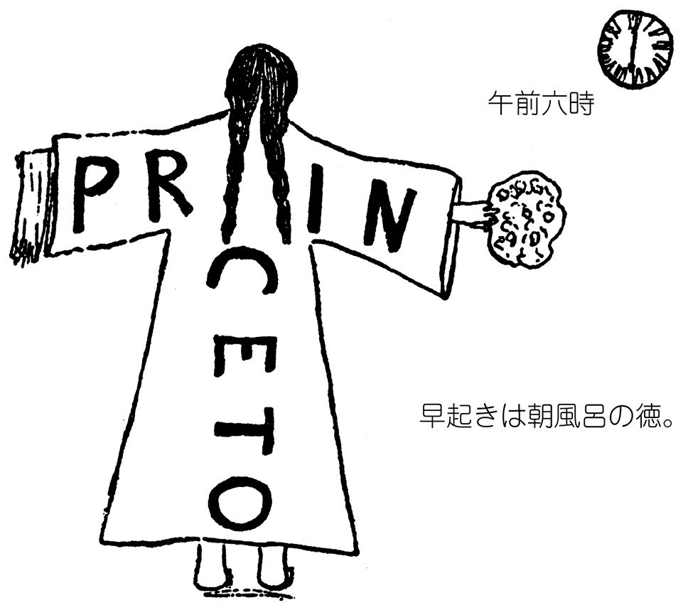
最近、学業の話題がぜんぜん登場しないし、わたしの手紙からは想像できないかもしれませんが、わたしの時間はもっぱら学業に注がれております。五つの異なる分野を同時に学ぶという業は、当惑のきわみであります。
「真の学徒たる証は、細部に対するあくなき熱情に尽きる」と、化学の教授は言います。
「細部に目を奪われないよう注意しなさい」と、歴史学の教授は言います。「対象から適切な距離を保ち、全体像を把握するように」と。
わたしたち学生が化学と歴史のあいだでいかに微妙な舵取りを求められるか、おわかりになると思います。わたしは歴史的アプローチのほうが好きです。これなら、ウィリアム征服王のイギリス侵攻が一四九二年だと言ったって、コロンブスのアメリカ発見が一一〇〇年だとか一〇六六年ごろだとか言ったって（33）、単なる細部のひとつとして教授は見逃してくれるでしょうからね。おかげで、歴史の講義は安心してのんびり聞いていられます。化学は、そのような安心感とはまるっきり無縁です。
六時限目のベルです――化学実験室で酸と塩とアルカリについて少しばかり考察してまいります。わたし、塩酸で実験用エプロンの前にお皿ぐらいの大穴を開けてしまいました。理論どおりにいくとすれば、強アンモニアで穴が中和できるはず......と思いませんか？
来週から試験ですが、心配していません。
それでは
ジュディより
33 コロンブスのアメリカ発見は一四九二年、ウィリアム王のイギリス侵攻は一〇六六年。
三月五日
あしながおじさんへ
三月の風が吹いています。空には一面に黒くて厚い雲が流れていきます。松の木にとまったカラスのけたたましいこと！ うきうきするような、わくわくするような、人を誘う鳴き声です。本を閉じて、風と競走で丘まで駆けていきたい気分になってしまいます。
この前の土曜日、ぬかるんだ原野を横断する八キロのキツネ狩りゲームがありました。キツネ役（足跡がわりに撒くバケツ一杯の紙片を持った女子学生三人）が先にスタートして、その三〇分後に二七人の狩人がスタートするのです。わたしは二七人の一人でした。狩人は八人が途中で脱落して、結局一九人になりました。追跡は丘を越え、トウモロコシ畑を抜け、沼地では木の生えている島づたいにピョンピョン跳んで進まなければなりませんでした。ご想像どおり、狩人の半数は足首まで泥にはまってしまいました。狩人たちはしょっちゅうキツネの足跡を見失って、沼地では二五分もロスしてしまいました。そこから足跡は木立を縫って丘をのぼり、なんと納屋の窓の中へ消えていたのです！ 納屋のドアはぜんぶ鍵がかかっているし、しかも、窓は高いところにあって小さいし。これって、ちょっとやりすぎですよね？
でも、わたしたちは納屋の中にははいりませんでした。周囲をぐるっと回ってみたら、低い掘っ建て小屋の屋根を伝っていく紙片が見つかって、それがフェンスの上まで続いていたのです。キツネはわたしたちをそこで巻いたつもりだったのかもしれないけど、どっこい、こっちのほうが一枚上手でした。そこから足跡はゆるくうねる牧草地をまっすぐ三キロほど続いたのですが、追跡は困難をきわめました。だって、紙片の間隔がだんだん広くなっていくんだもの。ルールでは紙片の間隔は一・八メートル以内ってことになっていたのですが、あんなに長い「一・八メートル」は初めて見ました。二時間ずっと小走りで追跡を続けたあと、ようやく、キツネさんをクリスタル・スプリング（女子学生が雪ぞりや荷馬車に乗ってチキンとワッフルの夕食をよく食べにいく農家です）のキッチンで発見しました。三人のキツネたちは落ち着き払ってミルクを飲んだりハチミツを塗ったホットビスケットをほおばったりしていました。そんな遠くまでわたしたちが追いかけてくるとは思っていなかったみたい。納屋の窓のところで巻いたつもりだったようです。
双方が自分たちの勝ちだと主張しましたが、わたしはこっちの勝ちだと思います。そう思いませんか？ だって、キツネたちがキャンパスにもどる前につかまえたのですから。どっちにしても、一九人の狩人はセミの大群みたいにテーブルに群がって、ハチミツ、ハチミツ、ハチミツ、とうるさく騒ぎたてました。全員にいきわたるほどハチミツがなかったので、ミセス・クリスタル・スプリング（これはわたしたちがつけたニックネームで、本名はジョンソンさんです）はいちごジャムとメープルシロップ――先週煮つめたばかりのできたて――と黒パン三斤を出してくれました。
大学にもどったのは六時半すぎ――夕食に三〇分遅刻――で、着がえもせずそのまま食堂へ直行し、いささかも衰えぬ食欲で夕食をいただきました！ そのあと、わたしたちは全員チャペルでの礼拝を省略しました。靴がどろどろ、というのがりっぱな言い訳になりました。
そういえば、試験のお話をしてませんでしたね。どの科目も楽勝で合格しました――もうコツがわかったから、二度と落第点は取りません。一年生のラテン語と幾何学の落第点があったから、卒業のときに優等賞はもらえないかもしれないけど、でも、そんなの、いいんです。「楽しけりゃ、何の憂いもなかろうて」（これは、いま読んでいる英文学の古典からの引用です）。
古典といえば、おじさまは『ハムレット』を読んだことがありますか？ もし読んだことがなかったら、いますぐ読んでみてください。こんなにすばらしい作品はありません！ シェイクスピアの名前は小さいころから聞いていたけど、こんなにうまい作家だとは知りませんでした。評判倒れだろう、ぐらいにしか思っていなかったのです。
わたし、ずっと昔に思いついたすばらしい遊びがあります。字が読めるようになったばかりのころに考えた遊びで、毎晩、自分がそのとき読んでいる本の主人公になったつもりで眠りにつくのです。
いま現在、わたしはオフィーリアです――しかも、すごく分別のあるオフィーリア！ いつもハムレットを楽しませて、ハムレットをアメとムチで上手にあやつって、風邪をひいたときには首に温湿布をするよう言いきかせるオフィーリアです。そして、ハムレットのふさぎこみをすっかり治してあげるんです。王様と女王様は二人とも亡くなって――海難事故だったのでお葬式も不要――ハムレットとわたしが晴れてデンマークを治めているというわけ。王国は万事順調です。彼が政治の方面を引き受けて、わたしが慈善事業を担当して。わたしは、ちょうど、超一流の孤児院を設立したところです。おじさまやほかの評議員さんたちが視察をご希望の節には、よろこんでご案内いたします。参考になる点がいっぱいあると思いますよ。
敬具
デンマーク女王
オフィーリア拝
三月二四日
もしかしたら二五日
あしながおじさんへ
わたし、天国へは行けそうにありません――だって、この世でこんなにいっぱい恵まれているんだもの。この先もずっと恵まれつづけるなんて、公平じゃないと思うから。何が起こったか、聞いてください。
ジェルーシャ・アボットは、「マンスリー」誌が毎年開催するショートストーリー・コンテスト（賞金二五ドル）で最優秀賞を獲得しました。しかも、二年生で！ コンテストの応募者は、ほとんどが四年生なのです。自分の名前が張り出されたのを見たときには、現実だとは信じられませんでした。もしかしたら、わたし、本当に作家になれるかもしれません。リペット院長がもう少しましな名前をつけてくれていたら、よかったのに――ジェルーシャ・アボットじゃ、いかにも女流作家という感じじゃありませんか。
もうひとつ、わたし、春の演劇祭の役者にも選ばれたんです。『お気に召すまま（34）』の野外劇です。わたしはロザリンドの実のいとこシーリアの役です。
そして、最後にもうひとつ。こんどの金曜日、ジュリアとサリーとわたしはニューヨークへ行って、春のショッピングをして、一晩泊まって、つぎの日に「ジャーヴィー坊っちゃま」といっしょに演劇を観にいくことになりました。ペンドルトン氏が招待してくださったんです。ジュリアは実家に泊まるけど、サリーとわたしはマーサ・ワシントン・ホテルに泊まることになっています。こんなにわくわくする話なんて、聞いたことありますか？ わたし、ホテルに泊まるのは生まれて初めてです。舞台を観るのも、初めて。一度だけ、カトリック教会がお祭りで演劇をやったときに孤児たちを招待してくれたことはあるけれど、あんなの本物の演劇じゃないから、数にはいりません。
で、舞台って、何を観ると思いますか？ 『ハムレット』です。もう、感激‼ シェイクスピアの講義で四週間も『ハムレット』を勉強してきたから、セリフなんか暗記しちゃっています。
何もかもがドキドキで楽しみで、ろくろく眠れません。
さようなら、おじさま。
この世は楽しいところです。
それでは
ジュディより
追伸 いま、カレンダーを確かめたら、二八日でした。
もうひとつ追伸 きょう、路面電車の車掌で片目が茶色で片目が青色の人を見ました。探偵小説の悪役にぴったりだと思いませんか？
34 シェイクスピアの恋愛喜劇（一六〇〇年ごろ）。
四月七日
あしながおじさんへ
驚きました！ ニューヨークというのは大きな街なんですね。ウースターの比じゃありません。おじさまは、本当に、あのごちゃごちゃ混雑した都会に住んでいらっしゃるんですか？ あそこで過ごした二日間を思い出すと頭がくらくらして、もとにもどるのに何カ月もかかりそうな気がします。いろいろびっくりするようなものを見たのですが、どこから話していいやらわからないくらい......でも、そんなこと、おじさまはご存じなんですよね、あの街に住んでいらっしゃるのだから。
それにしても、街の通りは楽しいし、道行く人を見るのも楽しいし、お店も楽しいですね。ショーウインドーには見たこともないようなすてきなものがいっぱい並んでいました。ほんと、一生を着道楽に捧げてもいいと思っちゃうくらいです。
サリーとジュリアとわたしは、土曜日の朝、いっしょにショッピングに出かけました。ジュリアは、わたしがいままで見た中で最高にゴージャスなお店にはいっていきました。壁は白と金色で、カーペットはブルーで、窓にはブルーの絹のカーテンがかかっていて、椅子は金張りで。非の打ちどころのない金髪美人が黒いシルクのロングドレスのすそを引きながら笑顔で迎えてくれました。わたし、誰か知りあいのところに訪ねていったのかと思って、握手しそうになっちゃった。でも、ただ帽子を買いにお店にはいっただけでした――少なくとも、ジュリアは。彼女、鏡の前に置いてある椅子に腰を下ろして、一ダースもの帽子を試着しました。出てくる帽子、出てくる帽子、みんな前のよりもっとすてきで、ジュリアはその中からいちばんすてきなのを二つ買いました。
鏡の前に腰を下ろして、気に入った帽子を値段なんか考えずに買えるなんて、人生でこれ以上の歓びは想像できません！ まちがいありません、おじさま。ニューヨークは、ジョン・グリア孤児院が営々と築きあげてきた申し分のない禁欲的人格を急速に弱体化させる街です。
ショッピングのあと、わたしたちは「シェリーズ」でジャーヴィー坊っちゃまと落ちあいました。おじさま、「シェリーズ」にはいらしたことがおありでしょうね？ あのお店を思い浮かべてください。そして、そのあとにジョン・グリア孤児院の食事室を思い浮かべてみてください。安っぽいオイルクロス（35）をかけたテーブル、ぜったい割れない白いブリキの食器、持つところが木でできたナイフとフォーク。わたしがどう感じたか、ご想像ください！
わたし、お魚料理を食べるときに使うフォークをまちがえてしまったのですが、親切なウエイターが誰にも気づかれないように取り替えてくれました。
お昼をいただいたあと、わたしたちは劇場へ行きました。目もくらみそうな、極上の、信じられない空間でした。あれ以来、毎晩のように夢に見てしまうくらいです。
シェイクスピアって、すばらしいと思いませんか？
『ハムレット』は、授業でチマチマ勉強していたときより舞台のほうがはるかにすばらしかったです。これまでもすばらしい作品だと思っていたけど、いまは......「感激」のひとことです！
もし、おじさまが許してくださるのなら、わたし、作家より女優になりたいと思います。大学をやめて演劇学校にはいる、というのはどうでしょう？ 女優になったら、わたしの全公演を通じておじさまをボックス席にご招待いたします。そして、フットライト越しに笑顔をお送りいたします。そのかわり、ボタンホールに赤いバラをさしておいでになってくださいね、ちゃんとまちがえずにおじさまに笑顔を送れるように。だって、ちがう人に向けて満面の笑みを送っちゃったりしたら、すごくばつが悪いでしょう？
わたしたちは土曜日の夜にニューヨークを離れて、帰りの列車の中で夕食をいただきました。小さなテーブルひとつひとつにピンクのランプがついていて、黒人のウエイターが給仕してくれて。列車の中で食事なんて聞いたことがなかったので、思わずそのことを口にしてしまったら、ジュリアに「あなた、いったいどこでお育ちになったの？」と言われてしまいました。
「村で」と、わたしは小さくなって答えました。
「でも、一度も旅行なさらなかったの？」と、ジュリアが追及してきました。
「大学へ出てくるまで、一度も。それに、大学までは二五〇キロちょっとだったから、食事はしなかったの」と、わたしは言いました。
ジュリアは最近、わたしに関心を持ちはじめたようです。わたしが変なことばかり言うから。すごく気をつけてはいるんだけど、びっくりすると思わず口から言葉が出てしまうんです――しかも、びっくりすることなんて、しょっちゅうあるし。ジョン・グリア孤児院で一八年間過ごしたあと、いきなり世間に投げこまれるなんて、とにかく目が回るような経験なんです。
でも、わたしは順応しつつあります。前ほどひどい失敗はしなくなりました。それに、ほかの子たちといっしょにいても、もう緊張しなくなりました。以前は、誰かに視線を向けられるたびに身が縮む思いがしました。新しいドレスの下でわが身にまとわりついているギンガムチェックを見すかされているような気がして。でも、いまではもうギンガムなんか気にならなくなりました。その日の苦労はその日で足れり（36）、ですね。
お花のこと、書くのを忘れていました。ジャーヴィー坊っちゃまがわたしたち三人にスミレとスズランの大きな花束をくださったのです。すてきだと思いませんか？ わたし、男の人にはあまり興味がなかったけれど――評議員さんたちを見ていたから――ちょっと考えが変わりそうです。
一一ページ――すごい手紙になっちゃいました！ ご安心ください、もうこれで終わりにしますから。
つつしんで
ジュディより
35 厚手の綿やネルの表面に防水加工をほどこした布地。
36 『新約聖書』「マタイによる福音書」六章三四節
四月一〇日
拝啓 お金持ち様
五〇ドルの小切手、お返しします。大変感謝しておりますが、いただくわけにはいきません。毎月のお小遣いだけで、欲しい帽子はちゃんと買えます。帽子店のことでつまらない話をくどくど書いて、すみませんでした。そういう店を見たのが初めてだったから――それだけのことです。
でも、わたし、おねだりをしたつもりはありません！ 必要以上の施しを頂戴したくはありませんので。
敬具
ジェルーシャ・アボット
四月一一日
大好きなおじさまへ
お願いです、きのうの手紙をお許しください。投函したあと後悔して取り戻そうとしたのですが、意地悪な郵便集配人がどうしても返してくれなかったのです。
いま、真夜中です。自分がいかに見下げはてた虫けらか――ムカデの一〇倍もいやらしい虫けらか（わたしが考えうる最悪の悪口です）――と考えて、何時間も眠れずにいました。ジュリアとサリーを起こさないようにドアをそうっと閉めて勉強部屋へ行ってきて、いま、ベッドの上で歴史のノートを破り取った紙にこのお手紙を書いています。
とにかく、いただいた小切手に対してあんな失礼な言い方をしたことをどれほど悔やんでいるか、おじさまに申し上げたかったのです。ご親切なお気もちから送ってくださったのに。それに、帽子のようなつまらないことにこれほどの優しいお心遣いをくださったのに。もっと感謝をこめてお返しすべきでした。
でも、どちらにせよ、あれはお返ししなくてはなりませんでした。わたしの場合、ほかの女の子たちとはちがうのです。ほかの子たちは、何かをもらうという行為がごく自然にできます。ほかの子たちにはお父さんがいて、お兄さんがいて、伯父さんや叔母さんがいます。でも、わたしにはそういう関係の人が一人もいません。おじさまのことを身内だと思うことにしたい気もちはやまやまですが、もちろん、そうでないことはわかっています。つまるところ、わたしはひとりぼっちなのです――ひとりぼっちで壁を背にして世間と戦っているのです――そのことを考えると、胸がしめつけられるような気もちになります。だから、そういう考えは頭の中から追い払って、家族ごっこを続けるのです。でも、おじさま、わかってください。必要以上のお金をいただくわけにはいかないのです。だって、いつか、お金をお返ししたいと思ったときに、たとえ目標どおりの大作家になれていたとしても、とんでもなく大きな借金だったら返しきれないでしょう？
すてきな帽子やきれいなものは好きだけど、自分の将来を借金のかたに入れるわけにはいきません。
わたしの失礼を、どうかお許しください。わたし、頭に浮かんだことを衝動的に書いてしまう悪い癖があって、手紙を投函してしまったあとで後悔しても取り返しがつかない、ということになるのです。わたしの言動がときどき浅はかで恩知らずであったとしても、本心からではないんです。心の中では、いつも、人生と自由と独立を与えてくださったおじさまに感謝しています。わたしの子供時代は、ひたすら長く不機嫌な反抗の連続でした。いまは、一日じゅういつだってこのうえなく幸せな瞬間ばかりで、本当とは信じられないくらいです。自分が物語のヒロインになったような気分でいます。
いま、夜中の二時半です。これから抜き足差し足で部屋を出て郵便投函口まで行って、この手紙を投函してしまおうと思います。そうしたら、きのうの手紙のすぐ次の便でこの手紙が届くでしょうから、そんなに長いあいだおじさまを怒らせずにすむと思います。
おやすみなさい
いつもおじさまのことを愛している
ジュディより
五月四日
あしながおじさんへ
この前の土曜日は体育祭で、見どころいっぱいの一日でした。最初は全学年の入場行進。全員が白いリネンの運動服姿で、四年生は青と金色の日本風の傘を持って、三年生は白と黄の横断幕を掲げて、わたしたち二年生は深紅の風船を持って――これはすごく人目を引きました、とくにしょっちゅう手から離れて飛んでいってしまうので――一年生は緑の薄紙で作った長い吹き流しつきの帽子をかぶって行進しました。それから、青いユニフォームを着た楽隊も。これは町から雇った楽隊です。あと、観客を笑わせる役の人たちも一二人ほど。これはサーカスの道化みたいな感じで、競技の合間に観客を楽しませる役です。
ジュリアは太っちょの田舎紳士の扮装で登場しました。リネンのダスターコートを着て、つけひげをつけて、ぶかぶかにゆるく巻いた傘を持って。背が高くてやせっぽちのパッツィ・モリアーティ（本名はパトリシアです。こんな名前、聞いたことありますか？ リペット院長も真っ青ってくらい変ちくりんな名前ですよね）がジュリアのおかみさん役で、みっともない緑のボンネットを耳にかかるくらい傾けてかぶって登場しました。行進のあいだじゅう、この二人が通ると笑いの波が広がりました。ジュリアは最高の道化ぶりでした。ペンドルトン家の人間にあれほどの喜劇の才があるとは、思ってもみませんでした――ジャーヴィー坊っちゃまには申し訳ないけれど。でも、ジャーヴィー坊っちゃまは典型的なペンドルトンではないですからね。おじさまが典型的な評議員でないのと同じです。
サリーとわたしは行進には参加しませんでした。というのは、二人とも競技に出場することになっていたからです。それで、なんと、わたしたち二人とも優勝しました！ 出た種目ぜんぶにではありませんが。サリーもわたしも走り幅跳びに出場しましたが、これはだめでした。でも、サリーは棒高跳びで優勝し（二メートル一八センチ）、わたしは五〇メートル競走で優勝しました（八秒）。
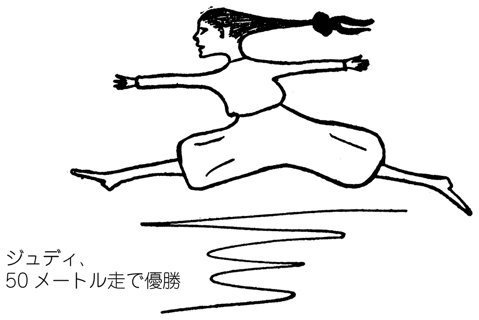
走りおえた直後は息がハアハア切れたけど、すっごく楽しかったです。クラス全員が風船を揺らして大声で応援してくれたから。
がんばれ、がんばれ、ジュディ・アボット！
行け、行け、ジュディ・アボット！
いいぞ、いいぞ、ジュディ・アボット！
ジュディ・アボ～～～ット！
栄光とは、まさにあのことです。そのあと控え室用のテントまで小走りでもどってきて、アルコールでクールダウンのマッサージをしてもらって、レモンを口に入れてもらって。ね、プロみたいでしょう？ 競技に勝つと、自分の学年の点になるんです。そして、いちばんたくさん勝った学年がその年の優勝カップを取れるんです。ことしは四年生が七種目を制してカップを取りました。大会後には、全競技の勝者たちを集めて体育館で運動委員会の主催するディナーがありました。ワタリガニの唐揚げやバスケットボールの形をしたチョコレート・アイスクリームなどが出ました。
きのうは夜ふけまで『ジェイン・エア』を読んでしまいました。おじさまは六〇年前のことをおぼえていらっしゃるくらいのお年でしょうか？ もしそうなら、そのころはみんなあんなふうにしゃべったのですか？
傲慢なブランシュ嬢が従僕にむかって「四の五の言うでないわ、下男ごときが。 言うとおりにおし」というセリフも、ロチェスター様が空のことを「鋼のごとき蒼穹」と形容するところも。それに、ハイエナのような笑い声を発して、ベッドの帷に火をつけて、結婚式のヴェールを引き裂いて、人に嚙みつく獣のような女――こうなると、もうメロドラマそのものですが、それでも読むのがやめられません。若い女性が、どうやってこんな本を書いたのでしょうか。それも、牧師館での生活しか知らない女性が。ブロンテ姉妹には不思議な魅力があります。ブロンテ姉妹の作品も、生涯も、精神も。どこからこうしたものを得たのでしょう？ 子供時代のジェインが慈善学校でかわいそうな目にあっている場面を読んでいるときは、わたし、あまりに怒れてきて、外に散歩に出なければおさまりませんでした。ジェインの気もちが痛いほどわかったから。リペット先生を知っているから、ブロックルハースト氏が目に浮かぶようにわかるのです。
怒らないでくださいね、おじさま。わたしはジョン・グリア孤児院がローウッド養育院と同じだと言いたいわけではないんです。ジョン・グリア孤児院では食べ物も着る物も十分に与えられていたし、顔を洗う水も凍ってはいなかったし、地下には暖房施設もありました。でも、ぞっとするほど似ている点がひとつあるんです。毎日がまったく単調で退屈だったことです。孤児院では、日曜日のアイスクリームを別とすれば、いいことは何ひとつ起こりませんでした。アイスクリームでさえ、毎週お決まりの行事になっちゃっていたし。孤児院で過ごした一八年のあいだ、わくわくするようなことは一回だけしか起こりませんでした――薪小屋が火事になったときです。あのときは夜中に起こされて、服に着がえて、寮に火が移った場合にそなえて待機させられました。でも、けっきょく火は燃え移らず、わたしたちはベッドにもどったのでした。
誰だって、人生に意外なことがあれば楽しいでしょう？ これは人間のごくあたりまえの欲求だと思います。でも、わたしの人生では、リペット院長に院長室へ呼ばれてジョン・スミスという人がわたしを大学にやってくれることになったと聞かされたときまで、人生でびっくりするようなことなんて一度だってありませんでした。しかも、そのときでさえ、リペット院長は話をものすごく小出しにしたので、びっくりというほどびっくりはしませんでした。
おじさま、わたしね、人間にとっていちばん大切な資質は想像力だと思うんです。想像力があれば、他人の立場に立ってものを考えられます。想像力があれば、他人に優しくなれるし、同情もできるし、理解してあげられます。子供には想像力を育ててやるべきです。でも、ジョン・グリア孤児院では、想像力のかけらが光ったとたんに踏み消されてしまうのです。ジョン・グリア孤児院が育てようとしたのは、義務感だけです。義務なんて言葉、子供には教える必要ないと思います。義務なんて、憎むべき、唾棄すべき言葉です。子供が何かするときの動機は、愛情でなくてはなりません。
わたし、いつか、孤児院の院長になりますから、見ていてください！ 毎晩眠る前に理想の孤児院を思い描くのが、わたしの楽しみなのです。ものすごく細かいところまで思い描くんです――食事とか、衣服とか、勉強とか、遊びとか、お仕置きまで。だって、わたしの孤児院では、いちばんおりこうな孤児だって、ときには悪さをしますからね。
どちらにしても、とにかく、わたしの孤児院の子供たちは幸せにしてあげるつもりです。のちの人生にいかなる困難があろうとも、子供時代だけは幸せに送る権利があると思います。もし、わたしが自分の子供を持つことになったとしたら、わたし自身がどんなに不幸だったとしても、大人になるまでいっさい何の心労も味わわせないつもりです。
（礼拝の鐘が鳴っています――この手紙はあとで仕上げることにします）
木曜日
きょうの午後、化学実験室からもどってきたら、ティーテーブルにリスがちょこんと座ってアーモンドを食べていました。このごろ気候が暖かくなってきて、窓を開けておくようになったので、こういうお客様がときどき訪ねてくるんです。
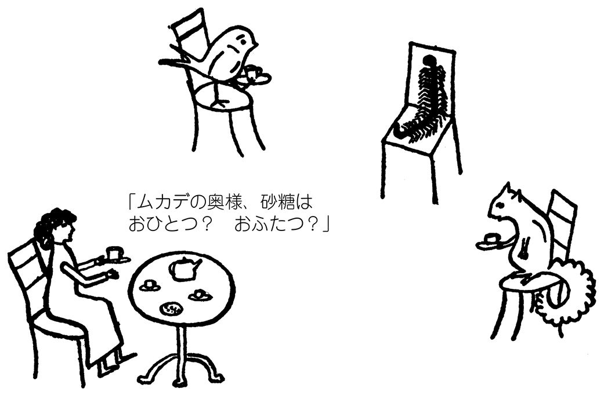
土曜日、朝
きのうは金曜日で翌日の講義がないから、ジュディはコンテストの賞金で買ったスティーヴンスンの全集を読みふけって静かな夜を過ごした......とお思いでしょうか？ だとしたら、おじさまは女子大生の実態をまるっきりご存じない、ということになりますね。きのうの夜は友だち六人が部屋にやってきて、ファッジを作りました。で、友だちの一人がファッジを――まだドロドロの状態のを――わたしたちの部屋でいちばん上等な敷物の上に落っことしたんです。あとを完全にきれいにするのは、無理そうです。
最近、勉強のお話をしていませんでしたね。でも、講義には毎日出席しています。ただ、大学の勉強から離れて人生の大局について論じあう、というのも気分転換になります――とはいっても、おじさまとわたしのあいだの議論はいささか一方通行ですけどね。でも、これは、おじさまのせいです。反論はいつでも大歓迎いたします。
この手紙、ちょこちょこ書き足しているうちに、三日もたってしまいました。いまごろ、vous êtes bien飽き飽きなさっていることでしょう！
さようなら、すてきなおじさま
ジュディより
あしながおじさんスミス様へ
拝啓 論証および論点の項目化を習得いたしましたので、書簡にも同様の形式を適用することといたします。これにより必要な事実は網羅され、かつ文章の冗漫を回避できます。
（１）今週おこなわれた筆記試験
（Ａ）化学
（Ｂ）歴史
（２）学生寮新築中
（Ａ）建材
（ａ）赤レンガ
（ｂ）灰色の石材
（Ｂ）収容人員
（ａ）学生部長一名、教官五名
（ｂ）女子学生二〇〇名
（ｃ）管理人一名、料理人三名、ウエイトレス二〇名、部屋係二〇名
（３）今夜のデザート ジャンケット（37）
（４）Ｊ・アボットはシェイクスピア戯曲の出典についてレポート執筆中
（５）ルー・マクマホンが本日午後、バスケットボール中に足を滑らせ転倒
（Ａ）肩を脱臼
（Ｂ）膝を打撲
（６）Ｊ・アボットの新しい帽子の飾り
（Ａ）青のベルベット・リボン
（Ｂ）青い羽根二本
（Ｃ）赤の飾りポンポン三個
（７）現在時刻九時半
（８）おやすみなさい
ジュディ
37 牛乳を凝固させた甘いデザート。
六月二日
あしながおじさんへ
とってもすてきなことが起こりました。何だと思いますか？
サリーのマクブライド家から、ことしの夏休みをアディロンダック山地にある同家の別荘でいっしょに過ごしませんかとお誘いをいただいたのです！ マクブライド家は、森の奥の美しい小さな湖のほとりに広がる別荘地の一区画を所有していて、森の中には同じような別荘地にログハウスが点々と建っていて、湖でカヌーをこいだり、森の小道を歩いてよその別荘を訪ねたり、週に一回別荘地のクラブハウスでダンスパーティーを開いたりして愉快に夏を過ごすのだそうです。ジミー・マクブライドが何日間か大学の友人を招待する予定なので、ダンスの相手をしてくれる男性には事欠かないという話です。
わたしをお誘いくださるなんて、ミセス・マクブライドはご親切だと思いませんか？ クリスマスでお邪魔したときに、わたしのことを気に入ってくださったみたいです。
短いお手紙でごめんなさい。ちゃんとしたお手紙じゃなくて、ただ、夏のあいだの行き先ができたことをお知らせしたくて書きました。
それでは
とっても満ちたりた気分の
ジュディより
六月五日
あしながおじさんへ
いま、おじさまの秘書から手紙を受け取りました。スミス氏はわたしがミセス・マクブライドの招待をお受けせず昨年夏と同様ロック・ウィローで過ごすようお望みである、とのこと。
なぜですか？ おじさま、なぜなのですか？
おじさまは、わかっていないんです。ミセス・マクブライドは、本当に、本心から、わたしに来てほしいと言ってくださっているのです。わたしは、いっさい何のお荷物にもなりません。むしろ、助けになるくらいです。マクブライド家はたくさんの召使いは連れていかない予定なので、サリーとわたしはおおいに役立つはずです。わたしにとっては、家庭の切り盛りを学ぶすばらしいチャンスです。女性なら誰にでも必要な知識です。わたしは孤児院の切り盛りしか知らないから。
別荘にはわたしたちぐらいの年齢の女の子がいないので、ミセス・マクブライドはサリーの話し相手としてわたしに来てほしいとおっしゃるのです。サリーとわたしは、読書をいっぱいする予定です。来年の国語と社会学の教材もぜんぶ読んでしまう予定です。夏休みのあいだに教材を読んでおけば非常に役に立つと教授も言ってたし、それに、二人でいっしょに読んで話しあえば記憶にもしっかり残るでしょう？
ミセス・マクブライドとひとつ屋根の下で暮らすだけでも、わたしには勉強になります。サリーのお母さまほど話がおもしろくて楽しくて気さくで魅力的な人はいません。何でも知っているんです。わたしがリペット院長のもとでどれだけの夏を過ごしたか、考えてみてください。それと正反対のミセス・マクブライドのもとで過ごすのがどれほど楽しみか、考えてみてください。わたしが行ったせいで別荘が手狭になる心配もありません。マクブライド家の別荘は伸び縮み可能なのです。人が多くなりすぎたら、森の中にあちこちテントを張って、男性たちを外に追い出すだけです。一日じゅう戸外で健康的な時間を過ごすことができるのです。ジミー・マクブライドは乗馬やカヌーや銃の撃ち方や、とにかくいろんなことを教えてくれるそうです。これまで経験したことのない、楽しく陽気でのんびりした時間を過ごせるのです。どんな子だって、一生に一度ぐらい、こういう経験をしても罰は当たらないでしょう？ もちろん、おじさまがおっしゃるとおりにいたします。でも、お願いです、お願いですから行かせてください、おじさま。こんなにお願いしたことなんて、ほかになかったでしょう？
これは将来の大作家ジェルーシャ・アボットからの手紙ではありません、ただの女の子ジュディからのお願いです。
六月九日
ジョン・スミス様
拝啓 七日付の御書面、落手。秘書を通じて頂戴いたしました御指示に従い、次の金曜に出立し、ロック・ウィロー農場で夏季休暇を過ごすことといたします。
敬具
ジェルーシャ・アボット拝
ロック・ウィロー農場にて
八月三日
あしながおじさんへ
二カ月近くもごぶさたしてしまいました。すみません。でも、この夏はおじさまをあまり好きになれなかったので――わたしって、正直でしょう？
マクブライド家の別荘を諦めなくてはならなかったことで、わたしがどんなにがっかりしたか、おじさまにはわからないでしょう。もちろん、おじさまがわたしの保護者であることは承知していますし、何につけてもおじさまのご意向に従わなければならないこともわかっていますけれど、どうにも納得できないのです。どう考えたって、あんなにすばらしいお話はなかったのに。もしわたしがおじさまで、おじさまがジュディだったとしたら、こう言ってあげたと思います。「よかったじゃないか。楽しんでおいで。いろいろな人に会って、いろいろなことを学んでおいで。屋外で過ごして英気を養って、また一年しっかり勉強するようにね」って。
でも、それとは大ちがい！ ロック・ウィローへ行くようにというそっけない連絡が秘書から届いただけ。
おじさまの命令に情のかけらも感じられないことが、わたしの心を傷つけるのです。わたしがおじさまに対して抱いている気もちのほんの何分の一かでも、おじさまがわたしに対して感じてくださっているのなら、タイプで打った秘書からの血も涙もないメモのかわりに、たまには手書きのお便りをくださってもいいのに、と思います。ほんの小さなことでもいいから、おじさまがわたしのことを気にかけてくださっているということがわかれば、わたし、何だっておじさまのお気に召すようにします。
わたしのつとめは、失礼のない長くて詳細なお手紙を書くこと、そしてお返事はいっさい期待しないこと。それは、わかっています。おじさまのほうは、約束をはたしてくださっていますよね――わたしは教育を受けているわけですから。約束を守っていないのはジュディのほうだ、と、おじさまはお考えなのでしょう！
でもね、おじさま、この約束はきついです。本当に。わたし、とっても淋しいです。おじさまはわたしが大切に思うただ一人の方なのに、まるで正体がわからないんだもの。おじさまは、わたしが頭の中で作り上げた想像の人物にすぎません――そして、たぶん、本物のおじさまはわたしの想像しているおじさまとはぜんぜんちがう人なのでしょう。でも、一度だけ、わたしが病気になって医療棟で寝ていたとき、おじさまはメッセージをくださいましたね。わたし、どうしようもなく身寄りのないわびしい気分になったときは、そのカードを取り出して眺めることにしています。
書こうと思ったことが、ぜんぜん書けていません。要するに、わたしはこう言いたいのです。
わたしの気もちはいまだに傷ついたままだけれど（だって、気まぐれで一方的で理不尽で全能で姿の見えない絶対者に首根っこをつかまれて駒のように動かされるのはとても屈辱的なことですから）、それでも、おじさまがいままでどれほど親切で寛大で優しくしてくださったかを考えれば、おじさまには気まぐれで一方的で理不尽で姿の見えない絶対者のようにふるまう権利がある、ということです。だから、わたし、おじさまを許してあげて、機嫌を直そうと思います。それでも、やっぱり、アディロンダックで楽しくやっているというサリーからの手紙が届くと、うれしくないけど。
でも――ここらで矛をおさめて、やり直すことにいたしましょう。
この夏、わたしは書いて、書いて、書きまくっています。ショート・ストーリーを四本仕上げて、四つ別々の雑誌に送りました。ね、ちゃんと作家になる努力はしているんです。仕事場は屋根裏部屋のすみっこです。ジャーヴィ坊っちゃまが雨の日にプレイルームに使っていたあたりです。ここはドーマー窓（38）が二つあるので、風が吹きぬけて涼しいし、カエデの木が日よけになってくれています。カエデの木の穴にはアカリスの一家が住んでいます。
二、三日したら、もっと楽しいお手紙を書いて、農場のいろんなニュースをお知らせします。
そろそろ、ひと雨ほしいところです。
いつもあなたの
ジュディより
38 屋根の中腹から小さな切妻屋根を張り出して地面と垂直に設けた窓。
八月一〇日
あしながおじ様
拝啓 牧草地の池のほとりに生えるヤナギの二つ目の叉より、お便り申し上げます。下のほうではカエルが鳴いていて、上のほうではセミが歌っていて、二羽の小さなゴジュウカラが幹を上がったり下りたりしています。もう一時間もこの木の叉に座っています。ソファ・クッションを二個運んできて敷いたので、とっても居心地がいいです。ペンとレポート用紙を持ってきて不滅のショート・ストーリーを書くつもりだったのですが、ヒロインに手を焼いておりまして――わたしの思うように動いてくれないのです。それで、しばらくのあいだ、このヒロインを放っておくことにして、おじさまに手紙を書いているというわけです（あまり解決になりませんね、だって、おじさまもわたしの思うようには動いてくれないから）。
おじさま、もしあの最悪のニューヨークにいらっしゃるのなら、こちらの美しい景色を送ってさしあげたいくらいです。そよ風が吹いて、太陽がきらきら輝いています。雨が一週間続いたあとの田園は、まさに天国です。
天国といえば、去年の夏にお話したケロッグさんのことをおぼえていらっしゃいますか？ 四つ辻にある白い小さな教会の牧師様です。お気の毒に、ケロッグさんは亡くなりました――去年の冬、肺炎で。わたし、六回ほど教会に通ってお説教を聞いて、ケロッグ牧師の神学にはかなり詳しくなりました。ケロッグさんは、最後まで、入信当初とひとつも変わらない教えを信じ通しました。四七年もの長いあいだ、いささかもぶれることなく信念を貫いた人物なんて、珍品としてガラスケースにおさめて保存すべきだと思います。いまごろ、ケロッグさんはハープの音色を楽しみ、金色に輝く栄冠を享受されていることでしょう。天国に行けばかならずそうなると信じておられましたから！ ケロッグさんの後任には、新進気鋭の若い牧師さんがやってきました。信徒たちはかなりうさんくさげな目で見ています。とくに教会執事のカミングズさん率いる一派は。教会内に大きな亀裂が生じそうな雲行きです。このあたりの田舎では、宗教上の新機軸は歓迎されないのですね。
雨が降りつづいた一週間、わたしは屋根裏部屋にこもって読書三昧で過ごしました。おもにスティーヴンスンです。作品の登場人物よりスティーヴンスン本人のほうがずっとおもしろいです。作家自身が活字の魅力的なヒーローを地で行こうとしたのでしょうね。父親の遺産一万ドルをぜんぶヨットに投じて南洋航海に出てしまうなんて、いかにもスティーヴンスンらしいと思いませんか？ 冒険家の面目躍如ですよね。もし、わたしの父親が一万ドルを遺してくれたら、わたしも同じようにすると思います。ヴァイリマ（39）なんて、思いうかべるだけで胸がわくわく躍ります。わたし、熱帯を見てみたいです。世界じゅうを見てみたいです。いつか、きっと、見に行きます――本気ですよ、おじさま。いつか大作家になったら、あるいは大画家になったら、あるいは女優でも、劇作家でも、とにかく何でもいいから大人物になったら。わたし、ものすごく放浪志向が強いんです。地図を眺めるだけで、帽子をかぶって傘を手に出かけたくなってしまうんです。「われ命あるうち南洋の棕櫚と寺院をこの目に刻むべし（40）」
木曜の日暮れどき、戸口に腰を下ろして
お手紙でいろんなニュースをお伝えしようと思っているのに、ちっとも書けません！ ジュディはちかごろ哲学的になっておりまして、日常の卑小なる出来事よりも、ついつい世の中全般について論じてしまうのです。が、しかし、ぜひともニュースをお望みとあらば、書くことにいたしましょう。
この前の火曜日、うちの子ブタ九匹が小川を渡って逃走し、八匹しか戻ってきませんでした。よそ様に濡れ衣を着せるつもりはありませんが、どうやらダウド未亡人のところの子ブタが一匹多いように思われます。
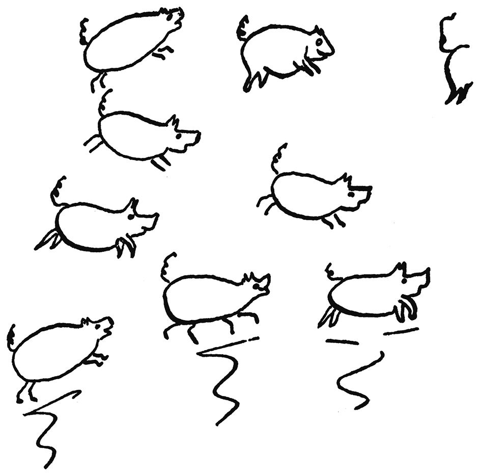
ウィーヴァーさんが納屋とサイロ二棟を派手なカボチャ色に塗りました――すごくみっともない色ですが、色持ちがいいのだそうです。
ブリュワー家には今週お客様が滞在中です。オハイオから訪ねてきたミセス・ブリュワーの妹さんと二人の姪御さんたちです。
当農場のロードアイランド・レッドどもは、卵を一五個も抱いていたのに、ヒヨコにかえったのはたったの三羽でした。どうなっているんでしょう？ ロードアイランド・レッドは非常に劣った品種であるというのが、わたしの見解です。バフ・オーピントンのほうが優良種だと思います。
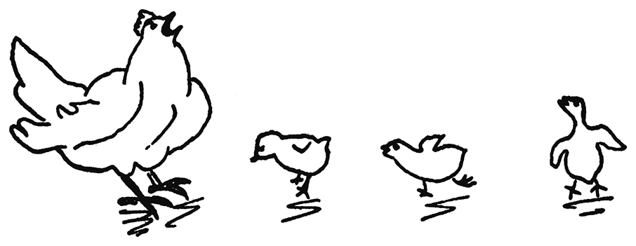
ボニーリグの四つ辻にある郵便局（41）の新しい局員が、在庫のジャマイカ・ジンジャー（42）を一滴残らず飲んでしまっていたことが発覚しました。七ドルぶんです。
アイラ・ハッチ老人はリューマチで働けなくなりましたが、稼ぎが良かったころに貯金ひとつしなかったせいで、いまは町の世話にならないと生きていけません。
こんどの土曜の夜、学校でアイスクリームを売る慈善資金集めパーティーがあります。ご家族お誘いあわせてお出かけください。
郵便局へ行って二五セントで新しい帽子を買いました。「最新のジュディの図」です。干し草をかき集めに出かけるときのかっこうです。
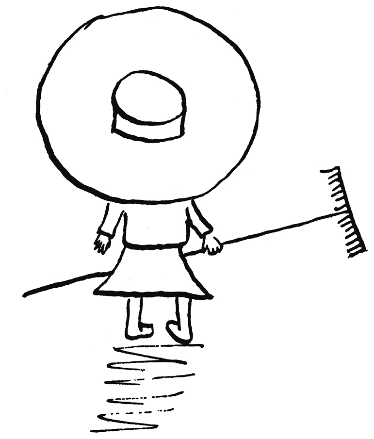
暗くなりすぎて手もとが見えなくなりました。どのみち、ニュースはこれでおしまいです。
おやすみなさい
ジュディより
金曜日
おはようございます！ ニュースです！ さて、何でしょう？ ロック・ウィローに誰かが訪ねてきます。さて、誰でしょう？ きっと、おじさまには想像もつかないと思います。センプルさんの奥さん宛てにペンドルトン氏から手紙が届いたんです。バークシャー丘陵（43）を自動車で旅行中だが、疲れたので、静かな農園で少し休みたい、って。近いうちにふらっと寄っても泊めてもらえるだろうか、って。一週間か、二週間か、もしかしたら三週間ぐらい泊めてもらうかもしれない、行ってみて居心地を見てから考える、って。
みんな一気に浮き足立っちゃって！ 家じゅう大掃除、カーテンもぜんぶ洗濯中です。わたしは、けさ四つ辻まで馬車で行って、玄関に敷く新しいオイルクロスと、廊下や裏階段を塗る茶色の床用ペンキを二缶買ってくることになっています。ダウド未亡人にも、あした、窓洗いの応援に来てもらうことになりました（事態の緊急性に鑑み、子ブタに関する疑惑は棚上げとなりました）。こんなにあわてるとは、ふだんよほど家の中を汚くしているのだろうと思われるかもしれませんが、とんでもない、家の中はいつだってピカピカです！ センプルさんの奥さんは完全無欠ではないけれど、家の手入れにかけては完璧です。
それにしても、おじさま、これっていかにも男の人っぽいと思いませんか？ ペンドルトン氏の手紙では、きょう来るのか、二週間後に来るのか、さっぱり見当もつきません。ペンドルトン氏が到着するまで、この家の人たちは満足に息もできないようなありさまです。早々に来てくれないと、もういちど家の中を大掃除するはめになりかねません。
階下でアマサイが軽四輪馬車にグローヴァーをつないで待っています。わたし一人で乗っていくのですが、老グローヴァーを見れば、わたしの安全を心配する必要などないことがわかるでしょう。
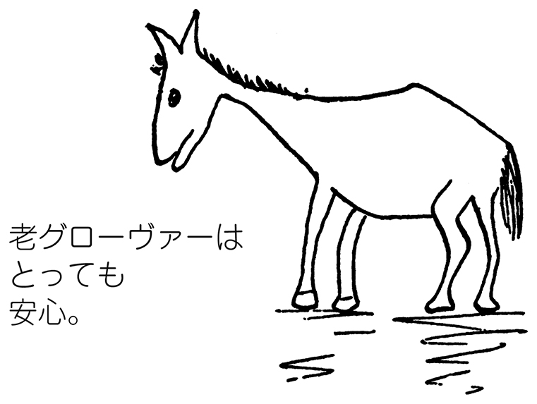
胸に手を置き、いざさらば
ジュディより
追伸 この結びの文句、すてきだと思いませんか？ スティーヴンスンの書簡集にありました。
土曜日
もういちど、おはようございます！ きのう、郵便配達が来る前に封をしそこなったので、もう少し書き足すことにします。郵便配達は一日一回、一二時に来ます。郵便配達制度は農家にとっては本当にありがたいです！ このあたりの郵便配達員は手紙を届けるだけじゃなくて、町でお使いもしてきてくれます。一件につき五セントです。きのうは、わたしが注文した靴ひもと、コールドクリーム（新しい帽子を買う前に日焼けして、鼻の頭の皮がすっかりむけちゃったので）と、青いウィンザー・タイ（44）と、靴墨を届けてくれました。手間賃はぜんぶで一〇セント。いろいろ頼んだので、大サービスしてくれました。
それに、郵便配達員は広い世界のできごとも知らせてくれます。配達ルートの中で何軒か新聞を取っている家があるので、配達しながら新聞を読んで、それを新聞を取っていない家の人たちに話して聞かせてくれるのです。だから、アメリカと日本のあいだで戦争が始まったとか、大統領が暗殺されたとか、ロックフェラー氏がジョン・グリア孤児院に一〇〇万ドルの遺産を贈ってくださることになったとか、そういう事件が起こっても、お知らせくださる必要はありません。ちゃんと郵便配達員が聞かせてくれるでしょうから。
ジャーヴィー坊っちゃまは、いまのところ、まだ影も形もありません。でも、家の中はピッカピカです。おじさまに見せてあげたいくらい。家にはいるときなんて、みんな、すごく気をつけて靴底をぬぐっています。
ジャーヴィー坊っちゃま、はやく来ないかな。待ち遠しいです。話し相手がほしいのです。正直、センプルさんの奥さんは、ちょっと退屈です。何も考えずに、ただぺらぺらしゃべってるだけなんだもの。ここの人たちは、みんなそんな感じです。彼らの世界は、この丘の上で完結しているのです。広い世界のことにはまるで関心が及ばない、と言ったらわかっていただけるでしょうか。ジョン・グリア孤児院とまるっきり同じです。ジョン・グリア孤児院では、思考範囲は鉄柵で囲まれた敷地の内側に限られていました。ただ、わたしはあのころ幼かったし、それにものすごく忙しかったから、そのことがあまり気にならなかったのです。受け持ちの子たちのベッドをぜんぶきちんと整えて、みんなの顔を洗ってやって、自分が学校へ行って、帰ってきて、また受け持ちの子たちの顔を洗ってやって、靴下の穴を繕ってやって、フレディ・パーキンスのズボンにつぎを当てて（なにしろフレディ・パーキンスは毎日ズボンを破る子でした）、その合間に自分の宿題をやって――そしたらもうくたくたに眠くて、他人との交流がないことなんて気にもなりませんでした。でも、大学でみんなといろんな会話をして二年間を過ごしたあとでは、他人との交流がほしいと思うようになりました。自分と同じ言葉を話す相手がいてくれたらいいのに、って。
これで本当におしまいにします。いまのところ、ほかに何も起こりそうにありません。次はもっと長いお手紙を書くようにします。
つつしんで
ジュディより
追伸 ことしはレタスの出来が良くありません。シーズン初めに雨が少なすぎたせいです。
39 スティーヴンスンが晩年を過ごしたサモアの村。
40 テニスンの詩。
41 郵便局が雑貨店も兼ねていた。
42 一九世紀に売りだされた薬で、エタノールが含まれていたため、禁酒法時代に酒のかわりに飲む者がいた。
43 米国マサチューセッツ州西部の丘陵地帯。
44 蝶結びにして使う幅広の絹製ネクタイ。
八月二五日
おじさま、ジャーヴィー坊っちゃまが来ています。わたしたち、すごく楽しく過ごしています！ 少なくとも、わたしは。坊っちゃまも楽しんでいると思います――ここへ来てもう一〇日にもなるのに、ぜんぜん帰りそうな気配がないから。センプルさんの奥さんが大の大人のペンドルトン氏を甘やかす様子といったら、目もあてられません。小さかったころもこんなに甘やかしていたとしたら、よくぞまともな人間に育ったものです。
ジャーヴィー坊っちゃまとわたしは、サイド・ポーチに小さなテーブルをセットしてもらって、そこで食事をします。木かげにテーブルを出してもらうこともあります。雨の日や肌寒いときは、いちばん上等な客間でいただきます。ジャーヴィー坊っちゃまが食事をしたい場所を決めると、そのあとからテーブルを持ったキャリーがとことこ走ってついていって、そこにテーブルをセットする、というわけ。面倒な注文をしてキャリーが遠くまでお料理を運ばなくちゃならなかったときは、坊っちゃまがシュガー・ボウルの下に一ドル置いておきます。
ジャーヴィー坊っちゃまは、とっても気さくな人です。一見しただけでは、そういうふうには見えないけど。パッと見には、いかにもペンドルトンの人間という感じなのですが、中身はぜんぜんちがいます。純真で、気取りがなくて、とってもかわいげのある人です――男の人を形容するのにはちょっと変な表現かもしれませんが、本当にそうなのです。近所の農夫たちにも、とっても感じよく接します。ざっくばらんに接するので、相手がすぐに心を開くんです。みんな、初めはすごくうさんくさそうな目で見るけど。それは着ている服が問題なのです！ たしかに、かなり風変わりなスタイルなので。ニッカボッカーズとか、プリーツのはいったジャケットとか、スポーツ選手みたいな白いフランネルの上下とか、ズボンがふくらんだ乗馬服とか。ジャーヴィー坊っちゃまが新しい服を着て下りてくるたびに、センプルさんの奥さんは誇らしくてたまらないといった表情で坊っちゃまのまわりをぐるぐる歩きまわって、ありとあらゆる角度から眺めまわして、腰を下ろす場所によく気をつけてくださいよ、なんて注意するんです。服が汚れるといけないから、って。坊っちゃまはいいかげんあきれて、しょっちゅうセンプルさんに「いいから自分の仕事をしておいでよ、リジー。もうぼくにあれこれ指図はできないんだよ、大人なんだからね」って言います。
あのものすごく背高のっぽで足の長いりっぱな男性（おじさまと同じくらい足が長いんですよ）が、かつてはセンプルさんのひざにのっけられて顔を洗ってもらっていたなんて、考えるだけで笑っちゃいます。とくに、いまのセンプルさんを見ると！ だって、ひざはお肉が二重になってるし、あごなんて三重なんだもの。でも、ジャーヴィー坊っちゃまの話によると、昔はセンプルさんは細くて強くてすばしこくて、ジャーヴィー坊っちゃまより速く走れたんだそうです。
わたしたち、いろんな冒険に明け暮れています。田園地帯を何キロも歩きまわったし、羽根でできたへんてこな毛鉤で魚を釣る方法も教えてもらいました。あと、ライフルやリボルバーで射撃の練習とか、乗馬とか。老グローヴァーが驚くほどの元気を見せました。三日間オート麦を食べさせたら、子牛を見たグローヴァーが驚いてあとずさりして、あやうくわたしを乗せたまま暴走するところでした。
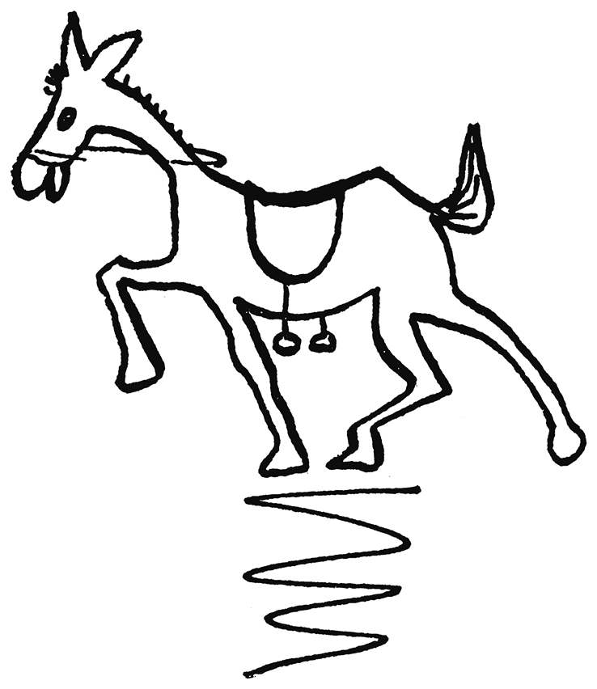
水曜日
月曜日の午後、スカイ・ヒルに登りました。近くの山で、それほど高くはないのですが（と思います、頂上に雪がないので）、頂上まで登ると、かなり息が切れます。山すそのほうは木がいっぱい生えているのですが、頂上は見わたすかぎり岩だらけの荒れ地です。わたしたちは頂上で太陽が沈んでいくのを眺めて、そのあと火をおこして夕食にしました。ジャーヴィー坊っちゃまが料理をしてくれました。わたしよりやり方をよく知っているから、って――その言葉どおりでした。ジャーヴィー坊っちゃまはキャンプに慣れているんです。そのあと、わたしたちは月の光をたよりに下山して、山すその森にはいってからはジャーヴィー坊っちゃまがポケットに入れていた懐中電灯の光をたよりに暗い小道をたどりました。とっても楽しかったです！ ジャーヴィー坊っちゃまはずっと笑ったり、ジョークを飛ばしたり、おもしろい話をしてくれました。わたしが読んだ本はぜんぶ知っているうえに、それ以外の本もいっぱい知っていました。本当に驚くほどいろんなことを知っている人です。
けさ、ジャーヴィー坊っちゃまとわたしは遠くまでハイキングに出かけて、途中で嵐にあって帰ってきました。家に着くころには服がずぶぬれでしたが、気分のほうはなんのなんの意気揚々と帰館しました。わたしたちが服からポタポタ水を垂らしながらキッチンにはいっていったときのセンプルさんの顔、お見せしたかったです！
「まあ、ジャーヴィー坊っちゃま――まあ、ジュディ嬢さま！ ずぶぬれじゃありませんか。まあ、まあ、たいへん。どうしましょう。すてきな新しいジャケットがすっかり台無しで......」
センプルさん、めちゃくちゃおかしかったです。まるで、一〇歳の悪ガキ（わたしたち）のしでかしたことを見ておろおろ取り乱しているお母さんみたい。悪い子だったからお茶のときにジャムをもらえないんじゃないかしら、なんて、ちょっと心配になったくらいでした。
土曜日
この手紙、はるか昔に書きはじめたのに、ちっとも書きおえる暇がありませんでした。
つぎの一節はスティーヴンスンの引用なんですが、すてきだと思いませんか？
この世界には、たくさんのものがあふれてる、
きっとぼくら、王様みたいに幸せだ（45）。
本当に、このとおりですよね。この世界には幸せがあふれています。誰も彼もが幸せになれるくらい、たっぷりと。自分のところにやってきた幸せを受けとめる気もちさえあればいいのです。幸せの秘訣は、柔軟な心を持っているかどうかにかかっていると思います。とくに、ここのような田園では、その気になれば楽しめることがいっぱいあります。あちこち自由に歩きまわって、いろんな景色を眺めて、名もない小川の水をパシャパシャ跳ね飛ばして......。自分の所有物であろうと、なかろうと。しかも、税金は払わなくてすむし！
いま、日曜日の夜一一時ごろです。美容のためには眠っていなくちゃならない時刻ですが、夕食でブラックコーヒーを飲んだので、美容のための睡眠は訪れそうにありません！
けさ、センプルさんの奥さんがペンドルトン氏にこう言いました。すごくきっぱりとした口調で。
「教会に一一時に着くには、一〇時一五分過ぎにはここを出なくてはなりませんからね」
「わかったよ、リジー」と、ジャーヴィー坊っちゃまが言いました。「馬車を用意しておいて。で、もしぼくの着がえが間に合わなかったら、待たずに行ってくれていいよ」
「いいえ、待ちます」と、センプルさんは言いました。
「お好きなように。ただ、馬をあまり長いあいだ立たせたままにしておかないほうがいいと思うけどね」
そのあと、センプルさんが着がえをしてるあいだに、ジャーヴィー坊っちゃまはキャリーにお弁当を用意させて、わたしに大急ぎで散歩用の服に着がえるように言って、わたしたち二人は裏口からそうっと抜け出して魚釣りに行ってしまいました。
おかげで、家の人たちはおおいに迷惑をこうむることになりました。というのは、ロック・ウィローでは日曜日の正餐は午後二時と決まっているのに、ジャーヴィー坊っちゃまが午後七時に正餐を命じたからです。ジャーヴィー坊っちゃまは、いつでも好きな時刻に食事を注文します。まるで、この家をレストラン扱いです。そのせいで、キャリーとアマサイは馬車の遠乗りに行けませんでした。でも、そのほうがいいんだ、あの二人がお目付役なしに遠乗りに出かけるのは感心しないからね、なんて坊っちゃまは言うんです。どっちみち、馬は自分が使いたかったらしくて。わたしを遠乗りに連れ出すのに。こんなおかしな話、聞いたことあります？
センプルさんは、気の毒に、日曜日に釣りに行くような人間は死んだあと地獄の業火に焼かれるんだと信じているんです！ それで、ジャーヴィー坊っちゃまが小さくて言うことを聞くうちにもっとちゃんと仕込んでおかなかったことをひどく後悔しているようでした。それと、センプルさんは教会でジャーヴィー坊っちゃまを見せびらかしたかったんだと思います。
とにかく、わたしたちは釣りをして（坊っちゃまが小さい魚を四匹釣りました）、キャンプファイアーで料理して、お昼ごはんにいただきました。魚がしょっちゅう串から抜けて火の中に落っこちたので、ちょっと灰っぽい味になってしまいましたが、でも、食べちゃいました。そのあと、わたしたちは四時に家に帰って、五時に遠乗りに出かけて、七時に正餐をいただいて、一〇時に寝室に上がって、いま、こうしておじさまにお手紙を書いているというわけです。
眠れないとは言いながら、そろそろ眠くなってきました。
おやすみなさい
下の絵、わたしの釣果です。
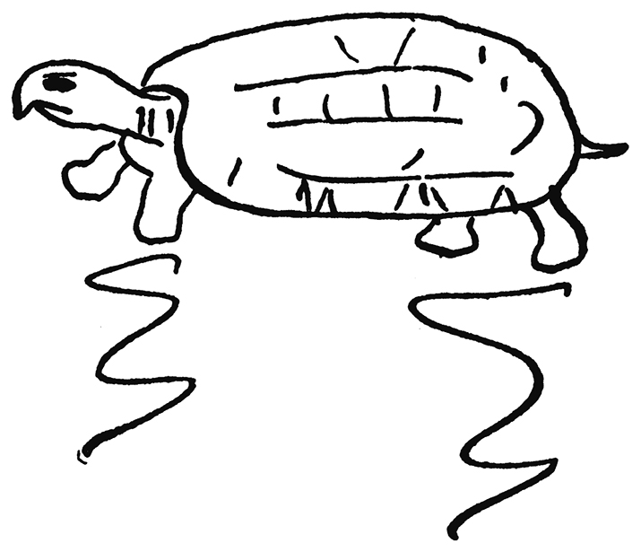
お～い、そこのあしなが船長！
待て！ 止まれ！ ヨー、ホー、ホー、ラム酒が一本！――いま何を読んでいるか、わかりますか？ ここ二日間、わたしたちの会話は水夫や海賊用語になっています。『宝島（46）』って、おもしろいと思いませんか？ 読んだこと、ありますか？ それとも、おじさまが子供のころには、まだ書かれていなかったのでしょうか？ スティーヴンスンは連載料としてたった三〇ポンドしかもらわなかったんだそうです。作家って、割りに合わないものなんですね。わたし、学校の先生になろうかしら。
スティーヴンスンの話ばかりで、ごめんなさい。いま、頭の中がスティーヴンスン一色なのです。ロック・ウィローの本棚はスティーヴンスンだらけです。
この手紙、もう二週間も前から書き続けています。いいかげん、十分な長さですよね。細かいことは書いてよこさんからわからんわい、なんて文句言わないでくださいよ。おじさまもここに来られたらいいのに、と思います。みんなで楽しく過ごせるのに。わたし、自分の友だちどうしが知りあいになってほしいんです。ペンドルトン氏にニューヨークでおじさまのことを知っているかどうか、聞いてみたかったのですが......。知っているんじゃないかしら。きっと、上流の社交界でごいっしょされているにちがいないと思うんです。お二人とも社会改革などに関心をお持ちだし。でも、聞けませんでした。だって、おじさまの本当の名前がわからないから。
おじさまの名前を知らないなんて、こんなばかげた話、聞いたことがありません。リペット院長がおじさまのことを変わった人だと言ってたけど、ほんとにそうだと思います！
愛情をこめて
ジュディより
追伸 この手紙、読みなおしてみたら、あながちスティーヴンスンばかりではありませんね。ジャーヴィー坊っちゃまのことも少しは書いてありました。
45 Ｒ・Ｌ・スティーヴンスン『ある子どもの詩の庭園』より「幸せな思い」（毛利孝夫訳、望林堂、アマゾン・キンドル版）。
46 スティーヴンスンの冒険小説（一八八三年）。
九月一〇日
おじさまへ
ジャーヴィー坊っちゃまは帰ってしまいました。みんな、坊っちゃまがいなくなってしまったので、淋しくてしかたありません！ 人にしても、場所にしても、暮らし方にしても、いったん慣れてしまったあとでそれがとつぜんなくなってしまうと、ひどく空虚な苦痛があとに残るものですね。センプルさんとの会話は、いまではスパイスのたりない料理みたいです。
あと二週間で大学の新学期が始まります。勉学の日々にもどるのが楽しみです。とはいっても、ことしの夏はかなりたくさん仕事をしました。ショートストーリーが六本と、詩が七篇です。雑誌社に送った原稿は、ぜんぶもどってきました。きわめて礼儀正しい迅速さで。でも、気にしていません。いい練習になりましたから。ジャーヴィー坊っちゃまが原稿を読んで――彼が郵便を取ってくるので、秘密にしておけなかったのです――ひどい出来だと言いました。自分で書いていることがまるっきりわかっていない、って。（ジャーヴィー坊っちゃまは思いやりを発揮して真実の痛みを和らげようとするような人ではないのです）。でも、最後に書いた一本――大学生活のひとこまを描いた作品――は悪くない、と言ってくれて、タイプの清書に出してくれました。それを雑誌社に送って二週間になるのですが、いまだに原稿がもどってこないところを見ると、じっくり読んでくれているのかもしれません。
いまの空の色、お見せしたいくらいです！ すごく変なオレンジ色の光に何もかもが照らされています。嵐の前ぶれです。
と書いた直後に、嵐がやってきました。二五セントコインほどもある雨粒が打ちつけて、雨戸をバシバシ鳴らしました。わたしは家じゅう走りまわって窓を閉めて、キャリーはミルク鍋をいっぱい抱えて屋根裏部屋へ飛んでいきました。雨漏りする場所に鍋を置いて受けるのです。で、この手紙を再開しようとペンを手にした瞬間、思い出したんです！ 果樹園の木の下にクッションとひざかけと帽子とマシュー・アーノルドの詩集を置きっぱなしにしていたことを。走って取りに行きましたが、何もかもずぶぬれになっていました。詩集の赤い表紙の色が中に染みて、この先「ドーバー海岸」はピンクの波に洗われることになるでしょう。
田舎では、嵐はひどくやっかいです。いつも外に置き忘れて濡れたらだめになってしまうもののことを頭のすみに置いておかなくてはならないから。
木曜日
おじさま！ ニュースです！ 郵便配達がいま二通の手紙を届けてくれました。
一通目――わたしの原稿が売れました。五〇ドル。
Alors! わたし、これで晴れて作家です。
二通目――大学の事務局から。寮費と授業料について二年間の奨学金をもらえることになりました。この奨学金はある卒業生が創設したもので、「国語において顕著なる成績をおさめ、かつ、ほかの学科においても全般的に優秀な成績をおさめた者」に給付するという奨学金です。わたし、それがいただけることになったのです！ 夏休み前に申請したのですが、もらえるとは思っていませんでした。一年生のとき数学とラテン語でひどい成績を取ったから。でも、どうやら挽回できたみたいです。おじさま、わたし、すごくうれしいです。だって、これで、おじさまにそれほど負担をかけずにすむことになるからです。これからは毎月のお小遣いだけでだいじょうぶだし、それも、もしかしたら、物書きや家庭教師や何かで稼げるかもしれません。
ああ、はやく大学にもどって新学期を始めたいです。
それでは
「勝利の女神、二年生にほほえむ」（新聞スタンドにて定価一〇セント）の著者
ジェルーシャ・アボットより
九月二六日
あしながおじさんへ
大学にもどってきました。いよいよ上級生です。ことしの寮の勉強部屋は、これまでで最高です――南向きで、すごく大きな窓が二つあるのです。しかも、すごくゴージャスな内装！ お小遣いをいくらでも使えるジュリアがわたしたちより二日早くもどってきて、尋常ならざる熱意を注いで家具調度を整えた成果です。
新しく貼りかえた壁紙、東洋のじゅうたん、マホガニーの椅子――去年までわたしたちが満足して使っていたマホガニー色に塗った椅子ではなくて、本物のマホガニーです。すごくゴージャスですが、わたしはなんだか居心地が悪くて、どこかにインクの染みでも作るんじゃないかといつもひやひやしています。
それから、おじさまから――じゃなくて、秘書の方から――お手紙が届いていました。
おそれいりますが、わたしが奨学金を受けてはいけない理由を、納得できるようにご説明いただけますでしょうか？ 反対なさる理由がこれっぽっちもわかりません。でも、どちらにせよ、反対なさっても無駄です。もう奨学金をいただくと返事をしてしまったので。考えを変える気はありません！ 生意気に聞こえるかもしれませんが、そういうつもりではないのです。
たぶん、おじさまは、わたしの教育を始めた以上は最後まで面倒を見て卒業証書という形できちんと終止符を打ちたい、とお考えなのでしょうね。
でも、ちょっと、わたしの立場から考えてみてください。教育を受けさせていただいたことに対する感謝の念は、全額を払っていただいた場合と少しも変わりませんが、ただ、お金のご恩がいくらか軽くなるというだけのことです。おじさまがお金を返してほしいと思っておられないことは、重々承知しております。それでも、わたしは、いずれお返しできるものならお返ししたい気もちでおります。そして、この奨学金を受ければ、それがずっと楽になるということです。この先、一生をかけてお借りした金額をお返ししなければならないと思っていましたが、それが一生の半分ですむということです。
わたしの立場をご理解くださり、あまりご機嫌ななめにならないでください。お小遣いは、今後も心からありがたく頂戴いたします。ジュリアや彼女があつらえた家具とつりあいの取れた生活をするには、お小遣いが必要です！ ジュリアがもっと質素な趣味を持つように育てられればよかったのに、でなければ、わたしのルームメイトでなければよかったのに、と思います。
ちゃんとした手紙でなくて、ごめんなさい。もっとたくさん書こうと思っていたのですが、いま、窓のカーテン四枚と間仕切りカーテン三枚の裾上げ中なんです（おじさまに針目の粗さを見られなくて、よかった）。あと、真鍮のデスク・セットを歯磨き粉で磨いて（すごく骨の折れる作業です）、額を吊るす針金をマニキュア用のハサミでごしごしこすって切らなくちゃならないし、本を四箱荷解きしなくちゃならないし、トランク二杯分の服（ジェルーシャ・アボットがトランク二杯もの服を所有しているなんて信じられないことですが、本当です！）を片付けなくちゃならないし、その合間に五〇人の友だちと再会の挨拶をしなくちゃならないし。
新学年の初日は楽しみがいっぱいです！
おやすみなさい、おじさま。あなたのヒヨコが少しばかり自力で生きてみようとしても、気を悪くなさらないでください。あなたのヒヨコは、ものすごく精力的なメンドリへと成長しつつあります。断乎とした鳴きっぷりと、たくさんの美しい羽根をたくわえたメンドリです（何もかも、おじさまのおかげです）。
愛情をこめて
ジュディより
九月三〇日
おじさま
まだ例の奨学金のことをしつこくおっしゃるのですか？ おじさまほど頑固で意固地で理不尽で執拗でブルドッグみたいにしつこくて他人の立場をわかろうとしない人間は、見たことがありません。
わたしが見も知らぬ方からの厚意を受けることは望まない、とおっしゃるのですか？
見も知らぬ方とは！ それじゃ、おじさまは見も知っている方なのですか？
わたしにとって、おじさまほど見も知らぬ方がほかにあるでしょうか？ 街ですれちがったとしたって、わからないのに。だって、そうじゃないですか。もしおじさまがちゃんと話のわかる分別ある人間で、あなたの小さなジュディに父親が娘を励ますような優しい手紙をくださって、ときどき訪ねてきて頭をぽんぽんとたたいてかわいがってくださって、がんばってるね、おじさんもうれしいよ、などと声をかけてくださるのだったら――それなら、たぶん、ジュディだって老境のおじさまに逆らったりしないで、ちゃんと孝行娘らしくおじさまの些細なお望みにも従うことでしょう。
見も知らぬ方、ですって！ おじさまのほうこそ、胸に手を当ててお考えになるべきだと思います。
それに、これは「ご厚意」などではありません。賞金のようなものです。わたしが一所懸命に勉強して勝ち取ったものです。国語の成績が優秀な該当者がいなければ、委員会が奨学金の給付を見送る年だってあるんですから。それに――いえ、男の人に理を説いても無駄でしょうね。スミス様、あなたは理屈のわからない男性という種類の生き物なのですから。男性に言うことをきかせる方法は、二つしかありません。ご機嫌を取るか、対決するか、です。望みを通すために男性のご機嫌を取るなんて、わたしはごめんです。したがって、ここは対決しかありません。
おじさま、奨学金辞退のお話は拒絶いたします。これ以上あれこれおっしゃるならば、毎月のお小遣いも返上いたします。馬鹿な一年生の家庭教師でもやって神経衰弱になるまでがんばるのみです。
これが最後通牒です！
それに、聞いてください――もう一つ、考えがあります。おじさまは、わたしがこの奨学金を得ることによって誰かほかの人の教育の機会を奪うことになるのではないかとたいそうご心配のようですが、解決策があります。わたしにお使いになるはずだったお金を、ジョン・グリア孤児院のほかの女の子に使ってあげればよろしいのです。いいアイデアだと思いませんか？ ただし、おじさま、ほかの女の子を教育するのはお好きなだけしていただいてけっこうですが、その子をわたし以上にかわいがらないでくださいね。
秘書氏からの提案をわたしがきっぱり無視したからといって、秘書氏が気を悪くされることのなきよう願っております。でも、気を悪くされたとしても、やむをえません。だいたい、おじさまの秘書氏はわがままなのです。これまでは秘書氏の気まぐれにおとなしく従ってきましたが、今回は譲れません。
敬具
断乎として、断々乎として
一歩も引かぬ決意の
ジェルーシャ・アボットより
一一月九日
あしながおじさんへ
きょう、靴墨と替え衿と新しいブラウスの生地とヴァイオレット・クリーム・チョコレートとカスティール石鹼――どれも、ぜったい必要なもの、なしでは一日も楽しく生きられないものです――を買おうと思って出かけたのですが、電車賃を払おうと思ったときに、おさいふを別のコートのポケットに入れたまま置いてきてしまったことに気がつきました。で、電車を降りて、次の電車に乗りなおさなくてはならず、体育の授業に遅れてしまいました。
コートが二着あって記憶力のほうがついていけないと、こういう事故が起こります！
ジュリア・ペンドルトンがクリスマス休暇にわたしを実家へ招待してくれました。スミス様、どう思われますか？ ジョン・グリア孤児院出身のジェルーシャ・アボットがお金持ちといっしょにテーブルに着いている図を想像してみてください。どうしてジュリアがわたしを招待する気になったのか、わかりません。最近、やけにわたしになついてくるんです。本心を言うなら、わたしとしてはサリーの家へ行くほうがはるかにうれしいのですが、ジュリアのほうが先に声をかけてきたので、行くとすれば、ウースターじゃなくてニューヨークです。ペンドルトン一族と顔合わせをするなんて、かなり気が重いです。それに、新しい服もたくさん準備しなくちゃならないし。だから、おじさまからクリスマス休暇は大学に残って静かに過ごしなさいというお達しがあれば、いつものようにとっても従順にお言葉に従いますが――？
いま、暇を見つけては『トマス・ハクスリーの生涯と書簡（47）』を読んでいます。ちょっとした空き時間に読むのにうってつけの楽しくて軽い読み物です。おじさまは、アーキオプテリクスって何だかご存じでしたか？ 始祖鳥です。ステレオナイサスは？ ちょっと不確かですが、これはミッシング・リンク（48）で、歯を持つ鳥、あるいは翼を持つトカゲ、のようなものだと思います。あ、ちがいました。いま本を調べてみたら、中生代の哺乳類でした。
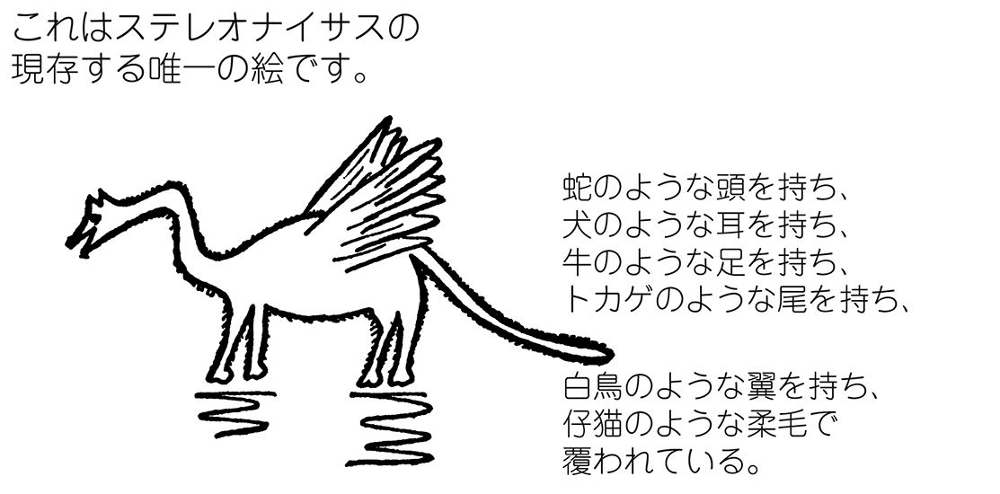
ことしは経済学を選択することにしました。すごく役に立つ学問です。経済学が終わったら、次は福祉と社会改革を履修します。そうしたら、評議員様、わたしにも孤児院をどのように経営すべきかわかってくるでしょう。わたしに選挙権があったら、りっぱな有権者になれると思いませんか？ わたし、先週で二一歳になりました。こんなに正直で教養があって良心的で知的な市民を活用しないなんて、この国はずいぶんともったいないことをするものです。
つつしんで
ジュディより
47 レナード・ハクスリ―編著（一九〇〇年）。トマス・ハクスリ―はレナードの父親で、イギリスの生物学者。ダーウィンの進化論を擁護したことで有名。
48 失われた環、の意。進化の系統上でまだ発見されていない中間型化石のこと。
一二月七日
あしながおじさんへ
ジュリアのお宅を訪ねる許可をいただきまして、ありがとうございます――お返事がないので、同意されたものと解釈いたします。
このところ、社交行事に明け暮れる日々でした！ 先週は大学創立記念ダンスパーティーがありました。わたしたち、参加するのは今年が初めてです。上級生しか参加が許されないので。
わたしはジミー・マクブライドを招待しました。サリーはプリンストン大学の寮でジミーとルームメイトの人を招待しました。この人は去年の夏、マクブライド家のキャンプに来た人です。赤毛で、とてもいい人です。ジュリアはニューヨークから男性を招待しました。べつに面白くもなんともない人ですが、社交的には非の打ちどころのない方でした。この人はデ・ラ・メイター・チチェスター家とつながりがあるんだそうです。これって、おじさまにとっては何か意味のある情報でしょうか？ わたしには、何のことやら、さっぱり。
とにかく――わたしたちが招待したお客様方は、金曜日の午後、四年生専用の中庭で催されたお茶会に間に合うよう到着して、そのあと大急ぎでホテルへ向かい、夕食をすませました。ホテルは超満員で、三人の話によれば、ビリヤードテーブルの上に並んで寝なければならなかったそうです。ジミー・マクブライドは、こんどこの女子大の行事に招かれたら家からテントを持参してキャンパスに野宿するんだと言っています。
ジミーたちは七時半にもどってきて、学長主催のレセプションとダンスが始まりました。うちの大学の行事は開始時刻が早いのです！ わたしたちは前もってアルファベットのカードを壁に貼っておいて、ダンスが一曲終わるたびに相手の男性を名前の頭文字を書いたカードの下まで連れもどす決まりになっていました。そうすれば、次のダンスパートナーが相手の男性を見つけやすくなるからです。たとえば、ジミー・マクブライドはダンスの相手が来るまで「Ｍ」の下でじっと立って待っている、というわけです（少なくとも、そういう決まりでした。でも、ジミーはうろうろ動きまわって、しょっちゅう「Ｒ」や「Ｓ」やいろんな頭文字のところに紛れこんでいました）。ジミーはなかなか扱いにくいお客様で、わたしと三曲しか踊れなかったといってご機嫌ななめでした。知らない女の子と踊るのは気恥ずかしいんだそうです！
翌朝には、大学のグリークラブによる合唱コンサートがありました。で、そのコンサートのために新しく作られたコミカルな歌の歌詞を書いたのは誰だと思いますか？ そう、わたしです。おじさま、あなたの小さな捨て子は、なかなかの著名人になりつつあるんです！
とにかく、とても楽しい二日間でした。男の人たちも楽しんでくれたと思います。中には一〇〇〇人の女子大生が待ちかまえているというので最初かなり戦々恐々としていた人もいたみたいですが、すぐに慣れてくれました。わがプリンストンの君二名は、すばらしい時を過ごしたようです――少なくとも、礼儀正しくそう言ってくれました。そして、来春のプリンストン大学のダンスパーティーに、わたしたちを招待してくれました。わたしたち、ご招待をお受けいたしましたので、おじさま、どうか反対しないでくださいね。
ジュリアもサリーもわたしも三人とも新しいドレスを着ました。どんなドレスだったか、興味がありますか？ ジュリアのはクリーム色のサテン地に金糸で刺繡をしたドレスで、それに紫色のランの花を飾っていました。それこそもう夢のように美しいドレスで、パリから取り寄せたのだそうです。きっと、一〇〇万ドルもしたのでしょう。
サリーのドレスは水色にペルシャ風の刺繡がしてあって、サリーの赤毛によく似合っていました。一〇〇万ドルとまではいかないにしても、ジュリアと同じくらい引き立って見えました。
わたしのは薄いピンク色のクレープデシン地に生成りのレースとバラ色のサテンの飾りがついたドレスで、ジミー・マクブライドから贈られた深紅のバラの花束（サリーが深紅のバラを用意してくるようお兄さんに知らせたのです）を持ちました。三人ともサテンの舞踏靴に絹のストッキングをはいて、ドレスに合わせたシフォン（49）のスカーフをはおりました。
女性の服飾品って、あれやこれや、たいへんでしょう？
それに比べると、男性はなんと不毛な人生を送らざるを得ないか、同情を禁じ得ません。シフォンも、ベネチア・レースも、刺繡も、アイリッシュ・クロッシェ・レースも、男性にとってはまるで無意味な言葉なんですから。その点、女性はどんな人であろうと、子育てに目が向いている人であろうと、病原菌に関心がある人だろうと、夫に目が向いていようと、詩に関心があろうと、召使いだの、平行四辺形だの、庭仕事だの、プラトンだの、ブリッジだの、とにかく何に関心が向いていようと、基本的にはいつだって着る物には興味があるものです。
全世界の人間は一つの性質でつながった親類である――これはわたしの言葉ではありません。シェイクスピアの劇から引いてきました（50）。
とにかく、続けます。わたし、最近、ある秘密に気づきました。お知りになりたいですか？ わたしのことをうぬぼれ屋と思わないと約束してくれますか？ だったら、言います。
わたし、美人です。
本当です。部屋に鏡が三枚もあって、それでも気づかないとしたら、それこそ大バカです。
友人より
追伸 これは小説に出てくる「匿名の怪しい手紙」というやつです。
49 ごく薄手の絹織物。
50 シェイクスピア『トロイラスとクレシダ』第三幕第三場。
一二月二〇日
あしながおじさんへ
これから授業に二コマ出て、そのあとトランクとスーツケースに荷物を詰めて、午後四時の列車に乗らなくてはならないので、時間がありません――でも、出かける前に、クリスマスのプレゼントにどんなに感謝しているかをひとこと申し上げたくて。
毛皮も、ネックレスも、リバティのスカーフも、手袋も、ハンカチも、本も、ハンドバッグも、大好きです。それに何より、おじさまのことが大好きです！ でも、おじさま、こんなふうにわたしを甘やかしたらダメじゃないですか。わたしなんか弱い人間ですし、しかも、ただの女の子です。こんな浮き世の楽しみに心を誘われては、学究の人生に断乎邁進するのが難しくなってしまいます。
これで見当がつきました。ジョン・グリア孤児院の評議員さんのどなたがクリスマスツリーにプレゼントを吊るしてくださっていたのか、そして、どなたが毎週日曜日にアイスクリームを食べさせてくださっていたのか。お名前は伏せられていましたが、その行動によって、送り主がどなただったのかわかります！ いっぱい良いことをしてくださったおじさまには、幸せな人生がふさわしいと思います。
それでは。とびっきりのメリークリスマスを。
つつしんで
ジュディより
追伸 わたしからも、おじさまへ、ほんのささやかなプレゼントをお送りします。送り主がどんな人間だかわかったら、おじさまはその人を好きになれそうですか？
一月一一日
ニューヨークからおじさまにお便りするつもりだったのですが、ニューヨークというのはとにかく人を夢中にさせる街ですね。
興味深く、いろいろためになる時間を過ごさせてもらいました。でも、自分があの一族でないことをうれしく思います！ 正直、ジョン・グリア孤児院出身というほうがましな気がします。わたしの育ちにいかなる難点があるにせよ、少なくとも見栄や虚飾とは無縁でしたから。ものの重みで押しつぶされそうになるというのがどういうことなのか、やっとわかりました。あの家にあふれる物、物、物といったら、とほうもない重苦しさでした。帰りの特急に乗るまで、満足に呼吸もできないような感じでした。とにかく家具という家具に凝った彫刻がしてあって、ふかふかで、ゴージャスなんです。それに、会う人たちもみんな美しく着飾って、話す声は低くて、上品で。でも、おじさま、これだけは言えます――あの家に着いたときから帰るまで、内容のある会話は一つもありませんでした。およそ思想と名のつくものがあの家の敷居をまたぐことは、ないのでしょうね。
ミセス・ペンドルトンは宝石と仕立て屋と社交行事のことしか頭にない人で、ミセス・マクブライドとはまるっきりちがうタイプの母親です！ わたしがもし結婚して家庭を持つとしたら、マクブライド家そっくりの家庭にするつもりです。どんなにお金があったって、わたしの子はペンドルトン一族みたいには育てません。お邪魔させていただいた家のことを批判するのは、失礼なことかもしれません。だとしたら、お許しください。これはおじさまとわたしのあいだだけの内緒の話です。
ジャーヴィー坊っちゃまとは、お茶にいらしたときに一度顔を合わせただけで、二人きりで話す時間はぜんぜんありませんでした。去年の夏いっしょに楽しい時間を過ごしたのにと思うと、ちょっと残念でした。ジャーヴィー坊っちゃまはペンドルトン一族の人たちをあまり好きじゃないみたいです――一族の皆さま方も、ジャーヴィー坊っちゃまをあまり好きじゃないみたい！ ジュリアのお母さまに言わせると、ジャーヴィー坊っちゃまは頭がちょっとおかしいんだそうです。社会主義者なんですのよ、だって。髪を伸ばしたり赤いネクタイをつけたりしないのがせめてもの救いですけれど、どこであんな風変わりなものの考え方に染まったのか見当もつきませんわ、わたくしどもは昔からずっと英国国教会の信徒でしたのに、だって。ジャーヴィー坊っちゃまは、ヨットとか自動車とかポロ用の馬のようなまともなものにお金を使わないで、変てこりんな社会改革とやらに片っ端からお金を無駄遣いしているのだそうです。でもね、ジャーヴィー坊っちゃまはチョコレートにもお金をお使いになられますことよ！ ジュリアとわたしにクリスマスプレゼントとしてチョコレートを一箱ずつ贈ってくださいましたもの。
あのね、おじさま、わたし、自分も社会主義者になろうと思います。かまわないでしょう？ 社会主義者は無政府主義者とはぜんぜんちがいます。爆弾で人を吹っ飛ばそうなんて考える連中とはちがいます。たぶん、わたしは社会主義者になって当然の人間なのだと思います。だって、プロレタリア階級の生まれだから。ただ、どういう種類の社会主義者になるかは、まだ決めていません。この日曜日にじっくり考えて、次のお手紙で信条を表明いたします。
ニューヨークではお芝居をいっぱい観たし、ホテルや美しい邸宅もいっぱい見ました。頭の中でオニキス（51）と金箔と寄せ木の床とシュロの木がごっちゃになっています。いまも、まだ息もつけないような興奮から抜けきっていませんが、大学と読書の日々にもどるのをうれしく思っています――わたし、勉強のほうが性に合っているのだと思います。大学の落ち着いた雰囲気のほうが、ニューヨークの空気よりもすがすがしくていい気分です。大学生活はすごく満足です。本と勉強と毎日の時間割が脳を刺激してくれるし、勉強に疲れたら体育館や外で運動すればいいし、それに、同じことを考えている気心の知れた友だちがいっぱいいるし。夜は友だちとさんざんしゃべりまくって、そのあと、世界の重大問題をすっかり解決したように晴れ晴れした気分で眠りにつきます。暇さえあれば、どうということもないおしゃべりをして。思いつくままに次から次へジョークを飛ばして。くだらないけど、とっても楽しいです。みんなでしゃれを飛ばしあっては笑いころげています！
わたし、だいじなのは、とびっきり大きな歓びを得ようとすることではないと思います。だいじなのは、小さな歓びを最大限に楽しむことだと思います。おじさま、わたし、幸福の真の秘訣を発見しました。それは、いまこのときを生きることです。過去をいつまでも悔やむのではなく、未来を待ちこがれるのでもなく、いまこの瞬間を最大限に楽しむことです。農業に粗放農業と集約農業（52）があるのと同じです。わたしは集約的人生を生きようと思います。一分一秒も無駄にせずに楽しみ、楽しんでいることを自覚しながら生きたいと思います。ほとんどの人は、生きるのではなくて競走をしています。遠い地平の目標に到達しようとがんばっているうちに息が切れて、いま通過している周囲の美しくて穏やかな景色が見えなくなってしまうのです。そして、気づいたときには、もう年を取って疲れてしまって、目標に到達できるかどうかなんてどうでもよくなっているのです。わたしは途中で腰を下ろして、小さな幸せをいっぱい積み上げるほうを選ぶことにしました。たとえ大作家になれなかったとしても。わたしみたいなことを考えた哲学者って、いたのでしょうか？
それでは
ジュディより
追伸 今夜は犬と猫がいっぺんに降ってきたぐらいのどしゃ降りです。あ、いま、窓枠に「仔犬」が二匹と「仔猫」が一匹着地しました！
51 黒色の天然石。黒めのう、または縞めのう。
52 単位面積あたりに大量の資本や労働力を投下して高い収益をめざすのが集約農業。
親愛なる同志へ
ばんざーい！ わたしはフェビアン協会員になりました！
フェビアン協会は、漸進的な社会主義です。一夜にして社会改革をなしとげようという考え方ではありません。そんなことをしたら、混乱を招いてしまいます。フェビアン協会は、遠い将来に向けて少しずつ改革を進めていこうと考えます。そうすれば、みんな準備ができて、変革を受けとめることができるはずです。
それまでは、産業や教育や孤児院を改革しながら準備を進めていかなくてはなりません。
同志愛をこめて
ジュディより
月曜 第三限
二月一一日
あしなが様
すごく短い手紙ですが、失礼だと思わないでください。これは手紙ではなく、もうすぐ試験が終わったら長いお手紙を書きます、ということを伝えるための走り書きです。わたしは試験に合格するだけでなく、良い成績で合格しないといけないのです。奨学生の名に恥じぬように。
ガリ勉中の
Ｊ・Ａより
三月五日
あしながおじさんへ
今夕、カイラー学長のお話がありました。最近の若者は軽佻浮薄である、昔から尊ばれてきた真摯な努力や真の学徒たらんとする美徳を失いかけている、というお話でした。そして、この堕落がとくに目につくのは権威に対する不遜な態度である、と。若い人たちは目上の者に対する尊敬の念を忘れかけている、と。
礼拝堂からの帰り道、わたしは改めてよく考えてみました。
わたし、おじさまに対してなれなれしすぎるでしょうか？ おじさまに対して、もっと敬意をこめた改まった態度で接するべきでしょうか？ ――そうですね、そうすべきだと思います。それでは、この手紙もちゃんと書きなおしてみます。
拝啓スミス様
机下
中間試験に無事合格し、現在新学期を迎えて勉学を開始いたしましたことを、謹んでご報告申し上げます。化学は修了し（定性分析の課程を修了いたしました）、生物学の履修を開始いたしました。この科目の履修に際しましては、多少の躊躇がございます。と申しますのは、ミミズとカエルの解剖があるからでございます。
先週、礼拝堂にて、南フランスにおける古代ローマ遺跡に関するたいへん興味深く有益なる講演がございました。当演題について、このように啓蒙的な解説をうかがったのは初めてでございました。
英文学の課程におきましては、ワーズワースの「ティンターン修道院」を学んでおります。なんと魅力的な作品でございましょうか。そして、彼の汎神論の概念をなんと的確に表現した作品でございましょうか！ わたくしといたしましては、シェリー、バイロン、キーツ、そしてワーズワースなどの詩作に代表される一九世紀前半のロマン主義運動のほうに、それ以前の古典主義よりも、はるかに心惹かれるものがございます。詩の話題が出ましたついでですが、スミス様はテニスンの「ロクスリー・ホール」という魅力的な小品をお読みになられたことがございますでしょうか？
最近はきわめて規則正しく体育の授業に出席しております。学生監制度が施行され、規則に従わないとたいへんに不都合な結果を被るようになったからでございます。体育館にはセメントと大理石でできた非常にりっぱなプールがございます。ある卒業生が寄贈なさったものでございます。わたくしのルームメイトであるマクブライド嬢から水泳着を譲り受けましたので（縮んで着られなくなったためでございます）、わたくしはまもなく水泳の練習を始める予定でございます。
昨晩はデザートに美味なるピンクのアイスクリームが供されました。食品の着色には植物性染料のみ使用しております。当大学は、美的観点および衛生的観点から、アニリン染料（53）の使用に強く反対いたしておるものでございます。
このところ理想的な天候が続いております――明るい日差しと雲の合間に、ときたま吹雪が襲ってくるのも、また楽しいものでございます。わたくしと学友たちは、授業へ往復する道のり（とりわけ復路）を楽しんでおります。
スミス様のますますのご清栄とご健勝をお祈り申し上げます。
敬具
ジェルーシャ・アボット拝
53 合成染料。有害。
四月二四日
おじさまへ
ことしも春がやってきました！ キャンパスの美しいこと、ご覧に入れたいです。おいでになって、ご自身の目で確かめられたらいいのに。ジャーヴィー坊っちゃまは、先週の金曜日にまた寄ってくれました。でも、タイミングが最悪。だって、サリーとジュリアとわたしと、三人そろって列車に間に合うように駆けだすところだったんです。どこへ出かけたと思いますか？ プリンストン大学です。ダンスパーティーと大学野球の観戦です！ 行ってもいいかどうか、おじさまにおうかがいしなかったのは、おじさまの秘書氏がきっとダメって言うだろうという予感がしたからです。でも、ちゃんと規則を守って行ってきたんですよ。大学に欠席届も出したし、お目付役としてミセス・マクブライドがいっしょに行ってくださったし。とっても楽しかったです――でも、いろいろありすぎて、細かいことは割愛します。
土曜日
けさは夜明け前に起床しました！ 夜警さんが起こしてくれて、わたしたち（六人）は卓上コンロでコーヒーを作って（あんなにコーヒーかすがいっぱいはいったコーヒー、初めて飲みました！）、一本松の丘のてっぺんまで三キロ歩いていって日の出を見ました。頂上直前の斜面は、半分駆け足！ もうちょっとで太陽に先を越されそうになったので！ もどってくるころにはへとへとで朝食も食べたくないくらい？......と思ったら、大まちがい‼
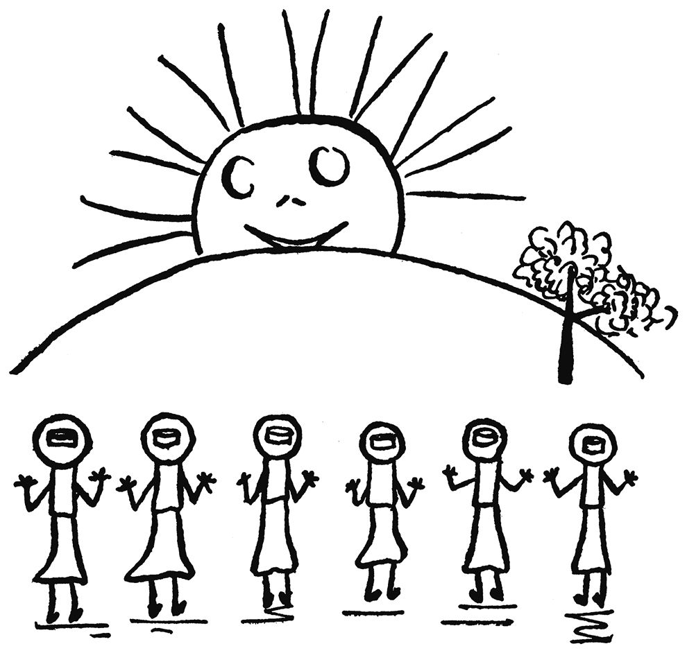
やだ、きょうは絶叫調ですね。このページ、感嘆符だらけになっています。
この手紙、いろんなことを書こうと思っていたんです。木々の新緑のこととか、運動場に石炭殻を敷き詰めたトラックが新しくできたこととか、あすの生物学のおそろしい授業内容とか、湖に新しいカヌーが浮かんでることとか、キャサリン・プレンティスが肺炎にかかったこととか、学長のアンゴラ仔猫が家出してファーガスン寮に二週間住みついていたのを部屋係に見つかって通報された話とか、わたしの三着の新しいドレスのこととか――白いドレスと、ピンクのドレスと、ブルーの水玉のドレス（おそろいの帽子つき）――でも、眠すぎて。わたしって、いつも眠い眠いって言い訳してませんでしたっけ？ でも、女子大というのは忙しいところで、一日の終わりにはもうくたくたなのです！ とくに、夜明け前に起床した日は。
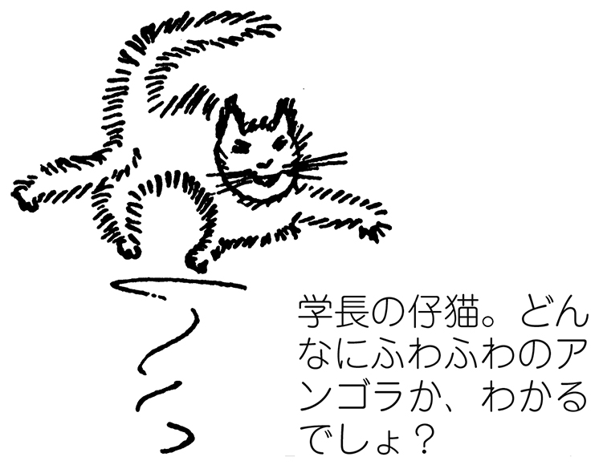
愛情をこめて
ジュディより
五月一五日
あしながおじさんへ
電車に乗っているとき、まっすぐ前だけをにらみつけてほかの乗客にいっさい視線を向けない、というのは良いマナーなのでしょうか？
きょう、すごく美しいベルベットのドレスを着たとびきりの美人が電車に乗ってきたのですが、その人は一五分間ズボン吊りの広告をじ～っと見つめたまま、表情ひとつ変えずに座っていました。自分以外の人間なんか取るに足らない存在だ、みたいな感じで他人を無視するのって、正しいお行儀とは思えないのですけど。どっちにしても、それじゃ損ですよね。その女の人がバカみたいな広告を一心不乱に見つめているあいだ、わたしはおもしろそうな乗客を一人残らず観察できたのですから。
次のイラストは、本邦初公開です。糸の先にクモがくっついているように見えますが、断じてそうではありません。これは「ジュディ、体育館のプールで水泳を習うの図」です。
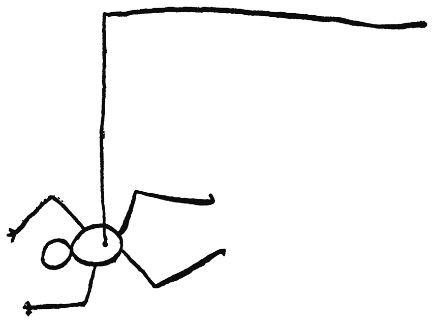
体育の教師がわたしのベルトの背中についているリングにロープをひっかけて、そのロープを天井につけた滑車で引っぱるのです。これは、教師に全幅の信頼を置ける場合にはすばらしいシステムなのでしょうが、わたしはいつも教師がロープを緩めるのではないかと気が気ではなく、そのため片目で用心して教師を見つつ、もう片方の目で泳ぐ、ということをしているために、いまひとつ集中できず、思ったほど泳ぎが上達しません。
このところ、非常に変わりやすいお天気が続いています。この手紙を書きはじめたときには雨が降っていたのに、いまはお日さまが照っています。サリーとわたしは外でテニスをすることにしました――そうすれば体育が免除されるので。
一週間後
この手紙、もうとっくの昔に書き上げていなくてはならないのに、まだ書いています。お手紙をさしあげる日が多少前後してもかまいませんよね、おじさま？ おじさまにお手紙を書くのは、大好きです。自分にも人並みに家族がいるような気分になれるから。いいこと教えましょうか？ わたしが手紙を書く相手は、おじさま一人じゃないんです。おじさま以外に二人もいるんです！ ことしの冬はジャーヴィー坊っちゃまからすてきな長い手紙を何通もいただきました（ジュリアが字を見て気づかないように、宛名はタイプ打ちです）。かなりショッキングな話でしょう？ あと、毎週のように、きたない字の手紙が届きます。こちらは黄色いレポート用紙に走り書きした手紙で、プリンストンからです。どの手紙にも、わたしはてきぱきと返事を出します。ね、わたしもほかの女の子たちと同じように手紙を受け取ったりするんです。
四年生の演劇部員に選ばれたことはお話しましたっけ？ なかなかの狭き門なんですよ。一〇〇〇人の中から、たったの七五人しか選ばれないのですから。社会主義者としての志操を守る観点からは、劇団に加入すべきや否や？
いま、社会学で、わたしの研究テーマは何だと思いますか？「扶助を要する児童の処置について」というテーマで論文を書いているんです（信じられます？）。教授がいろんなテーマをごちゃまぜにして無作為に配ったら、わたしにこのテーマが当たったというわけです。C'est drôle ça n'est pas?
夕食のベルが鳴っています。郵便投函口を通るついでに投函することにします。
愛情をこめて
Ｊ
六月四日
おじさまへ
多忙な季節です。一〇日後に卒業式、あしたからは試験です。勉強も忙しいし、荷造りも忙しいし、しかも、外の世界はすばらしく美しくて、部屋の中にいるのが悲しくなるくらいです。
でも、そんなの、へっちゃら。あと少しで夏休みだから。ジュリアは、この夏、外国に行くそうです――もう四回目です。おじさま、まちがいなく、世の中の富は不公平に分配されていると思います。サリーは、例年どおりアディロンダックに行くそうです。で、わたしはどこへ行くと思いますか？ 三回答えるチャンスをさしあげます。ロック・ウィロー？ ちがいます。サリーとアディロンダック？ ちがいます（もう二度と行きたいなんて言いません。去年、痛い目にあいましたから）。ほかには思いつきませんか？ おじさま、けっこう発想が貧困ですねえ。では、答えを申し上げましょう、あれこれ反対しないと約束してくださるなら。おじさまの秘書氏には、前もって、わたしの心はすでに決まっていると申し上げておきます。
ことしの夏は、ミセス・チャールズ・パターソンという方の海辺の別荘でお世話になって、この秋に大学に進学するお嬢さんの家庭教師をすることにしました。パターソン夫人とは、マクブライド家を通じて知りあいました。とてもすてきな女性です。下のお嬢さんにも国語とラテン語を教えることになっているのですが、自分の自由になる時間もいくらかあって、そのうえ、月五〇ドルもいただけるのです！ とんでもない高給だと思いませんか？ むこうからそう言ってくださったのです。わたしだったら、二五ドル以上は恥ずかしくてお願いできません。
マグノリア（パターソン家の別荘がある場所です）で九月一日まで過ごしたあと、たぶん残りの三週間をロック・ウィローで過ごすことになると思います。センプルさんたちにまた会いたいし、仲良しになった動物たちにも会いたいし。
おじさま、わたしの計画、どう思われますか？ わたし、ずいぶん自立してきたでしょう？ おじさまのおかげで足がかりを与えていただき、いまではほぼ独り歩きできそうな気がします。
プリンストンの卒業式とこちらの試験が完全に重なってしまいました。とっても残念です。サリーもわたしもぜひ行きたかったのですが、どう考えても無理です。
それでは、おじさま、これで失礼します。楽しい夏を過ごし、秋からまたがんばれるようしっかりと英気を養ってください――って、これはおじさまがわたしに書いてくださるべき文章ですよね！ おじさまが夏のあいだ何をしていらっしゃるのか、どんなことを楽しんでいらっしゃるのか、わたしにはぜんぜんわかりません。おじさまのいらっしゃる環境が想像できないのです。おじさまはゴルフをしたりハンティングをしたり馬に乗ったりなさるのでしょうか？ それとも、日だまりでじっと瞑想するタイプでしょうか？
どちらにしても、よい夏をお過ごしください。そして、ジュディのことをお忘れなく。
六月一〇日
おじさまへ
この手紙は、いままででいちばんつらい手紙ですが、自分がすべきことはもう決めたので、いまさらあともどりはできません。この夏わたしをヨーロッパへやってくださるというお申し出は、とても優しくて、寛大で、ありがたくて、一瞬くらっと来ました。でも、ちゃんと考えれば、辞退させていただく以外に答えはありません。大学の学費をいただかないと言っておきながら、ただの遊びにお金を出していただくなんて！ おじさま、わたしにあまりぜいたくを教えてはダメです。一度も手にしたことのないものであれば、人は、それがなくたってつらいとは思いません。でも、いったん与えられて当然と思うようになってしまうと、それなしで過ごすのは、とてもつらいことです。サリーやジュリアといっしょに暮らすのは、禁欲的に育てられてきたわたしにとっては、たいへんきつい努力です。サリーもジュリアも、赤ん坊のころから望むものを与えられて育ってきています。二人にとって、幸福はあたりまえのことです。この世で自分が望むものは与えられて当然と思っているのです。たぶん、そのとおりなのでしょう――どちらにしても、世の中は二人の望みをかなえてくれるようにできているみたいです。でも、わたしの場合は、世の中は何ひとつ恵んではくれないし、そのことは人生の初めからいやというほどはっきり知らされてきました。わたしは裏付けなしに世間の厚意をいただくわけにはいきません、なぜなら世間がわたしの期待をはねつける日がかならずやってくるからです。
隠喩だらけで、わけがわからなくなってきました――でも、お伝えしたいことはわかっていただけましたよね？ とにかく、自分にとって唯一地道な生き方は、夏のあいだ家庭教師をしてお金を稼ぎ、経済的自立をめざすことであると強く思うのです。
マグノリアにて
四日後
ちょうどここまで書いたとき、何が起こったと思いますか？ 部屋係がジャーヴィー坊っちゃまの名刺を持ってきたのです。ジャーヴィー坊っちゃまも、この夏、外国に行くのだそうです。ジュリアたち一家といっしょにではなく、一人きりで。お目付役のご婦人が引率する女子学生の団体旅行で外国に行ってくるようおじさまが勧めてくださったことを、ジャーヴィー坊っちゃまに話しました。ジャーヴィー坊っちゃまは、おじさまのことを知っているんですよ。というのは、つまり、わたしの父と母は他界して親切な老紳士がわたしを大学へやってくれている、という話ですが。ジョン・グリア孤児院のことを打ち明ける勇気は、どうしてもありませんでした。ジャーヴィー坊っちゃまは、おじさまがわたしの保護者で一家の昔からの由緒正しき友人なのだと思っています。わたし、おじさまの正体を知らないなんて話はしていません――それじゃ、あまりに変だと思われてしまいます！
とにかく、ジャーヴィー坊っちゃまはわたしに、ぜひともヨーロッパへ行くべきだと強く言いました。教育の一環として必要だから断るなんてとんでもない、と。あと、同じ時期にジャーヴィー坊っちゃまもパリにいるから、ときどきお目付役の目を盗んで抜け出して、外国のすてきな変わったレストランで食事をしよう、と。
おじさま、わたし、正直言って心が動きました！ もう少しで説き伏せられそうになりました。もしジャーヴィー坊っちゃまがあんなに高飛車な物言いをしなかったら、完全に説き伏せられていたかもしれません。わたしって、じゅんじゅんと説いて聞かされると、その気になる質なのです。でも、無理強いされると、負けん気が出てしまうのです。ジャーヴィー坊っちゃまは、わたしのことをバカだ、アホだ、道理のわからない人間だ、現実がぜんぜん見えていない、頭がいかれている、ひねくれたガキだ（ほかにもいろいろな悪態を並べていましたが忘れました）、何が自分のためになるのかわかっていないのだ、と言いました。年上の人の言うことは聞くものだ、と。わたしたち、ほとんどケンカになりそうでした――というか、あれはケンカでした。
どっちにしても、わたしはさっさとトランクに荷物を詰めて、こちらへ来てしまいました。おじさまに手紙を書く前に橋を焼き払って退路を断ってしまったほうがいいと思ったので。いまや、退却用の橋は完全に灰と化してしまいました。現在、わたしはクリフ・トップ（54）（パターソン夫人の別荘の名前です）で荷解きを終え、フローレンス（下のお嬢さん）にラテン語を教えています。フローレンスは第一変化名詞で四苦八苦。そりゃそうでしょう、こんなに甘やかされた子供は見たことがありません。まず勉強の仕方から教えなくてはならないようです――この子は生まれてからいままで、アイスクリーム・ソーダより難しいものに頭を使ったことがないのです。
わたしたちは崖の岩かげの静かな一画を教室がわりにしています。パターソン夫人が娘たちを戸外で過ごさせたいとご希望なので。でも、これではわたしのほうが集中を保つのに苦労しそうです！ 目の前の青い海を通り過ぎていく船が見えるんだもの。外国へ向かうあの一隻に自分が乗っていたかもしれないと思うと――だめだめ、ラテン語文法のこと以外は考えないようにしないと。
前置詞 a ab absque coram cum de e または ex prae pro sine tenus in subter sub superは奪格を支配する。
ね、おじさま、わたしは誘惑から断乎として目をそらし、仕事に励んでいます。どうか、怒らないでください。そして、どうか、わたしのことを恩知らずな人間だと思わないでください。いつだって、いつだって、おじさまのご親切をありがたいと思っています。おじさまのご恩に報いる唯一の方法は、「非常に有能な市民」になることだと思っております（女性って、「市民」でしょうか？ そうは思えませんけど（55））。とにかく、「非常に有能な人間」になること。そしたら、わたしを見て、おじさまは「わたしはこの非常に有能な人間を世に送り出したのだ」と満足できるでしょう。
いい考えだと思いませんか？ でも、おじさま、誤解はしないでくださいね。わたし、思うんです――自分なんか、たいした人間にはなれそうもない、って。天職をあれこれ夢想するのは楽しいけれど、どう考えても、わたしなんてごく平凡な人間にしかなれそうにありません。もしかしたら葬儀屋の女房におさまって亭主にはっぱをかける、なんて一生で終わるのかもしれません。
それでは
ジュディより
54 崖の上、という意味。
55 女性に選挙権がないことを皮肉っている。
八月一九日
あしながおじさんへ
わたしの部屋の窓からは、すばらしく美しい風景が見わたせます。どこまでも海と岩場が続いています。
夏が過ぎていきます。午前中は二人のバカな娘たちにラテン語と国語と代数を教えています。マリオンは、いったいどうやって大学にはいれるのかしら、入学できたとして、どうやって退学にならずにすむのかしら、と心配したくなるような状態です。フローレンスに至っては、まるっきり望みなし――でも、この子はすごい美少女なのです！ 美しければ、バカだって何だってかまわないんでしょうね。だけど、こんな奥様が相手の会話では、だんな様もさぞ退屈なさることでしょう。まあ、運よくバカなだんな様を見つければ、話は別ですけど。そう難しいことでもないかもしれません。世間にはバカな男性がいっぱいいるようですから。この夏にも、何人かそういう男性に出会いました。
午後は、崖の上を散歩したり、潮がよければ海で泳いだりします。わたし、塩水だとすごく楽に泳げるんです――ほらね、教育がさっそく功を奏しています！
パリのジャーヴィス・ペンドルトン氏から手紙が来ました。ずいぶん短くてそっけない手紙ですが。わたしがアドバイスに従わなかったことを、まだ許してくれていないみたいです。でも、タイミングよく大学が始まる前に帰国できたら、ロック・ウィローで何日かわたしに付き合ってくれるそうです。そして、わたしがかわいげのある素直な子になっていたら、また仲良くしてくれるそうです（と言いたいらしいです）。
サリーからも手紙が来ました。九月になったら二週間ほどアディロンダックのキャンプにいらっしゃいよ、と誘ってくれました。これについても、おじさまのお許しが必要でしょうか？ まだ自分のしたいようにする自由は認めていただけないのでしょうか？ もうそろそろ認めていただいてもいいと思います。だって、わたし、大学四年生になるのですから。夏じゅう働いたから、少しはゆっくりしたいと思います。アディロンダックも見てみたいし。サリーにも会いたいし、サリーのお兄さんにも会いたいです――カヌーを教えてくれるそうです。それに（ここからが意地の悪い本当の動機なのですが）、ジャーヴィー坊っちゃまがロック・ウィローに来たときにすっぽかしてやりたいのです。
わたしに指図はご無用、と思い知らせてやらなくては。わたしに指図できるのは、おじさまだけです――そのおじさまだって、いつもわたしを言いなりにできるとは限りませんし！ いざ、アディロンダックの森へ！
ジュディより
マクブライド家の別荘にて
九月六日
おじさまへ
おじさまのお手紙、間に合いませんでした（うれしいことに）。わたしに言うことを聞かせたいのでしたら、二週間もかからずにご指示をお伝えくださるよう秘書氏に言いつけるべきです。ご覧のように、わたしはマクブライド家の別荘に来ています。きょうで五日になります。
森はすてきだし、別荘もすばらしいし、お天気もすばらしいし、マクブライド家の人たちもすばらしいし、何もかもすばらしいです。わたし、とっても楽しくやっています！
ジミーがカヌーに行こうと呼んでいるので、これで失礼します。ご指示に従わなくて、ごめんなさい。でも、どうしてそんなに毎回毎回、わたしが少しばかり遊びに行くのをダメだとおっしゃるのですか？ 夏じゅう働いたのだから、二週間ぐらいはいいじゃないですか。おじさまに不都合が及ぶわけでもないのに、ずいぶん意地悪だと思います。
でも、おじさまのことは、やっぱり愛しています。こんなに欠点だらけのおじさまでも。
ジュディより
一〇月三日
あしながおじさんへ
大学にもどってきました。四年生です。しかも、「マンスリー」誌の編集長です。こんなに世慣れた人間がわずか四年前にはジョン・グリア孤児院の孤児だったなんて、信じられますか？ アメリカという国は、何ごとも超スピードですね！
ところで、おじさま、ちょっと聞いてください。ジャーヴィー坊っちゃまがロック・ウィロー宛てに出した手紙がこちらへ転送されてきたのです。「残念ながらこの秋はロック・ウィローへ行けそうにありません、友だちとヨットに乗ることになったので。田園の夏を楽しんでおられることと思います」だって。
そのくせ、ちゃんと知ってたんですよ、わたしがマクブライド家の別荘へ行ったことを。だって、ジュリアがしゃべったから！ 陰謀なんて女性にまかせておくべきですよ、男の人ったら不器用なんだから。
ジュリアはうっとりするような新しいドレスをトランクいっぱい持ってもどってきました。虹色のリバティ・クレープ（56）で仕立てたイブニングドレスなんて、天国で天使が着るのにふさわしいような美しさ。わたし、自分のドレスだって、ことしは空前絶後的に（なんて言葉、ありましたっけ？）美しいと思ってたんだけど。パターソン夫人が持っている服をまねて、安い仕立て屋に仕立ててもらったのです。もとのドレスにそっくりとまではいかないけど、それなりに満足していたんです。ジュリアのドレスを見るまでは。でも、いまは――もう、いつか、ぜったいパリを見てやる！
おじさま、自分が女の子でなくてよかったと思いませんか？ わたしたちがドレスで大騒ぎするのをご覧になって、本当にバカみたいだと思っていらっしゃるのでしょう？ そのとおりです。まちがいありません。でも、これはぜんぶおじさまたち男性がいけないのです。
ドイツ人のさる高名な教授の話、お聞きになったことがありませんか？ この教授は不必要な装飾を蔑視して、女性は良識ある実用的な服を着るべきだと提唱しました。従順な奥様は、教授の提唱する「服装改革」に従いました。その結果、どうなったと思います？ 教授はコーラスガールと駆け落ちしたのです。
それでは
ジュディより
追伸 寮のわたしたちの区画を担当している部屋係は、ブルーのギンガムチェックのエプロンをしています。わたし、かわりに茶色のを買ってあげて、ブルーのギンガムチェックは湖の底に沈めてやろうと思っています。見るたびに孤児院を思い出して背すじがぞっとします。
56 英国リバティ社製の生地で、絹や綿の表面に細かい縮緬加工が施されたもの。
一一月一七日
あしながおじさんへ
わたしの文筆家としてのキャリアがおおいなる危機に瀕しております。おじさまにお話しようかやめておこうか迷ったのですが、同情がほしいので打ち明けます――ただし、「無言の同情」でお願いします。おじさまからの次のお手紙でこのことに触れられたりしたら、また傷が痛みますから。
わたし、ずっと前から書いていた作品があったんです。去年の冬じゅう毎晩書いて、ことしの夏じゅうバカな生徒二人にラテン語を教える合間に書いて、大学の新学期が始まる直前にようやく脱稿して、出版社に送ったんです。編集者が二カ月も原稿を送り返してこなかったので、これは採用されるにちがいないと思っていました。そしたら、きのうの朝、速達で小包が届いて（送料着払い三〇セント）、原稿がもどってきました。編集者の手紙つきで。すごく感じのいい、父性に満ちた、でも思いっきり率直な手紙でした！ 住所から察するにあなたはまだ大学生のようである、助言させていただくならば、まずは全力で大学の授業に集中し、卒業したあとで作家稼業を始めてはいかがか、と。リーダー（57）の意見も同封してありました。こう書いてありました。
「プロットがまったくありえない。登場人物の性格描写が誇張的すぎる。会話が不自然。なかなかユーモアがあるが、品の悪いユーモアも。引き続き努力されたし、いつかモノになるかも」
甘くないですね。アメリカ文学に新しい一ページを加えるつもりで書いたのに――本気ですよ。卒業する前にりっぱな作品を書いておじさまを驚かせたかったのです。この前のクリスマスにジュリアの家へ行ったときに取材してきたのですが、たしかに編集者の言うとおりかもしれません。たった二週間では、大都会の風俗習慣を観察するには足りなかったのでしょうね。
きのうの午後、散歩のついでに原稿を持って出て、ボイラー施設をのぞいて、ボイラーマンに「燃焼炉を使わせてもらえませんか？」って頼みました。ボイラーマンが「どうぞ」と言って扉を開けてくれたので、わたしは自分の手で原稿を火に放りこみました。わが子を火葬したような気分でした！
昨夜はすっかり落ちこんだ気分でベッドにはいりました。自分なんか、どうせ何にもなれやしない、おじさまはお金を無駄遣いしたことになるんだ、って思いながら。で、どうなったと思います？ けさ目をさましたら、すばらしいプロットが新しく頭に浮かんだんです。それからずっと、登場人物を構想したりして、このうえなく幸せな気分で過ごしています。わたし、どう考えても悲観主義者ではなさそう！ もしもある日地震が起こって、夫と一二人の子供が地面にのみこまれたとしても、きっと、わたし、翌朝には笑顔で元気よく起き出して、もういっぺん夫を見つけて一二人の子供を作るだろうと思います。
愛情をこめて
ジュディより
57 原稿を読んで出版の可否を進言する編集アドバイザーのこと。
一二月一四日
あしながおじさんへ
きのう、すっごく変な夢を見ました。本屋にはいったら、店員が新刊書を持ってきて、その本のタイトルが『ジュディ・アボットの生涯と書簡集』だったのです。はっきり見ました。赤い布製の装幀で、表紙にはジョン・グリア孤児院の写真がついていて、口絵はわたしの顔写真で、その下に「敬具 ジュディ・アボット」と書いてあるのです。ところが、最後のページをめくって自分の墓碑銘を読もうとしたところで目がさめたのでした。これは、ものすごくいらいらします！ あと少しで、自分が誰と結婚していつ死ぬのか、わかったのに。
自分の生涯が書かれた本――すべてを知りつくした著者によって完璧に真実どおり書かれた本――を読めたら、おもしろいと思いませんか？ ただし、条件つきで。すなわち、読んだ内容はぜったい忘れることができない、自分の行為がどのような結果に終わって何日の何時に死ぬかまで前もって正確にわかっていながら、そのままその一生を生きなければならない、という条件つきです。そうだとしたら、そんな本を読んでみようという勇気のある人は、どのくらいいると思いますか？ あるいは逆に、希望も意外性もない人生を生きなければならないという代償を払ってでも自分の一生が書かれた本を読んでみたいという好奇心を抑えられる人は、どのくらいいると思いますか？
人生なんて、せいぜい良くても退屈なものだと思います。食べるときには食べて、寝るときには寝るしかないのですから。でも、食事と食事のあいだに予期しなかった出来事が一つも起こらないとしたら、そんな人生って、どれほど絶望的に退屈なことでしょう。あらたいへん！ インクのしみができてしまいました。でも、もう三ページ目なので、新しい紙に書き直すのは無理です。
ことしも生物学をとることにしました。とてもおもしろい学問です。いまは消化器系の勉強をしています。猫の十二指腸の断面を顕微鏡でのぞいてみるといいですよ、すごくきれいです。
あと、哲学の講義も始まりました。おもしろいけど、つかみどころがありません。わたしは議論の内容を黒板に掲示してみせることのできる生物学のほうが好きです。あ、また、しみが！ あ、また！ きょうはペンがずいぶんと泣きべそです。しみだらけで、ごめんなさい。
おじさまは自由意志を信じますか？ わたしは信じます。無条件で。人間のあらゆる行為は遠因の集合から生起した絶対的に不可避かつ自動的な帰結である、なんて考える哲学者には断じて同意できません。そんな説は最低です――それじゃ、誰も何の責任も問われなくなるじゃありませんか。運命論を信じるような人間は、何もせずにじっと座ったまま「神の御心をおこなわしめたまえ」と念じつづけて死ぬだけです。
わたしは絶対に自分の自由意志を信じます。自分には何かをやりとげる力があると信じます。それこそが山をも動かす信仰です。見ていてください、おじさま、わたし大作家になりますから！ いま、第四章まで書きあがっていて、そのあと五章ぶんの下書きができたところです。
この手紙、ずいぶん難解ですね。おじさま、頭が痛くなりませんか？ このへんでおしまいにして、ファッジを作りにいくことにします。おじさまにファッジを送ってあげられないのが残念です。ものすごくおいしくできると思うので。だって、本物のクリームとバターのかたまりを三個も使って作るんですから。
愛情をこめて
ジュディより
追伸 いま、体育の授業で創作ダンスをやっています。この絵をご覧になれば、わたしたちが本物のバレリーナそっくりなのがおわかりいただけると思います。いちばん左端で優美なピルエットを披露しているのが、わたしです。
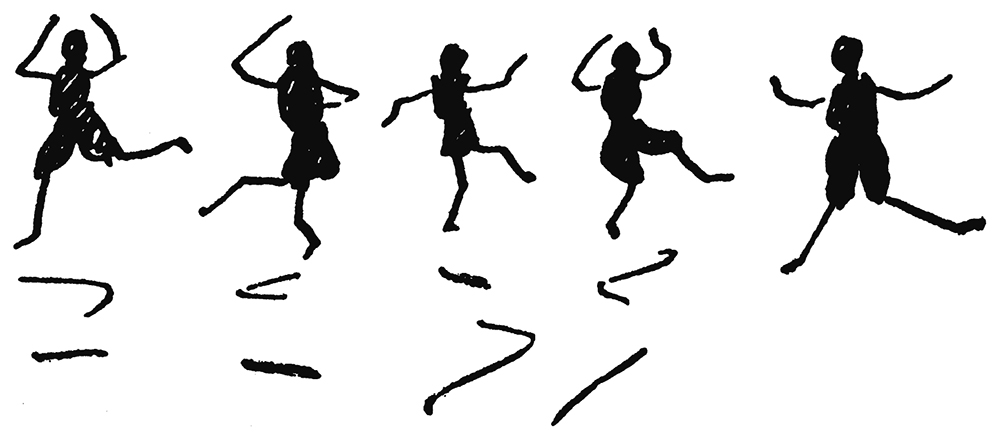
一二月二六日
大好きな大好きなおじさまへ
おじさまって、どこまで無分別なのでしょう？ 一人の女の子に一七ものクリスマスプレゼントを与えてはダメですよ。わたしは社会主義者なんですよ？ おじさまは、わたしを金権主義者に変えるおつもりですか？ おじさまとわたしが仲たがいをしたらどんなことになるか、考えるだに恐ろしいです。おじさまからいただいた物をお返しするのに、引っ越し屋を雇わなくてはなりません。
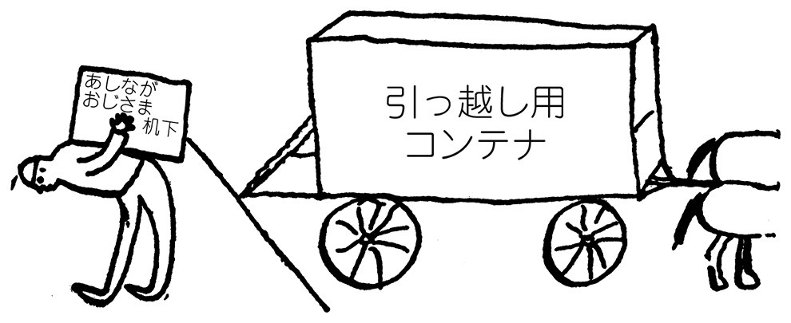
わたしが贈ったマフラー、編み目が不揃いでごめんなさい。わたしの手編みなんです（見ればわかりますよね）。寒い日に、コートのボタンをしっかりとめた中にご着用くださいませ。
おじさま、本当に、本当に、ありがとうございました。おじさまは世界一甘くて、世界一おばかさんだと思います！
ジュディより
マクブライド家の別荘で見つけた四つ葉のクローバーを同封します。新年にいいことがありますように。
一月九日
おじさま、魂が永遠に救われる善行をしたいと思いませんか？ ひどく困窮している一家があるんです。母親と父親と四人の子供がいて――その上にも男の子が二人いるのですが、二人とも一旗あげることを夢見て家を出て以降、音沙汰なしです。父親はガラス工場で働いていたのですが、結核で倒れて――工場はすごく健康に悪い環境なのです――いまは病院に入院しています。一家は父親の病気で貯金を使いはたしてしまい、いま、毎日の暮らしは二四歳になるいちばん上の娘の肩にかかっています。この娘は（仕事の注文があるときは）日当一ドル五〇セントで服の仕立てをして、夜はテーブルセンター（58）の刺繡をして稼いでいます。母親はあまり丈夫でなく、救いがたい無能で神頼みばかりしています。娘が過労と責任感と不安に押しつぶされそうになっているかたわらで、ただ手を組んで座っているだけ。まるっきり諦めの姿勢です。娘は、この冬をとても乗り切れそうにないと悲観しています――わたしも同感です。一〇〇ドルあれば、いくらか石炭が買えて、三人の子に靴も買ってやれるから学校に通わせてやれるし、少しは余裕もできるから、何日かお針子の仕事が来なくても、この娘がひどく心配しなくてすむのです。
おじさまは、わたしが知っているいちばんお金持ちの人です。一〇〇ドルを出していただくのは無理ですか？ あの娘は、かつてのわたしなどよりはるかに助けを必要としています。あの娘のために、お願いします。母親なんか、どうなったっていいんです――あんな母親は、ただの役立たずです。
人が天を見上げて「これはすべて神の思し召しなのだ」と言うのを見ると（そんなこと言ってる場合じゃないのに！）むかむかと腹が立ちます。謙遜と呼ぼうが、諦めと呼ぼうが、そんなものは無力無能以外の何物でもありません。わたしは、もっと戦う宗教を選びます！
哲学の授業は最悪です――あしたまでにショーペンハウエルをぜんぶ読んでこい、という宿題。哲学の教授は、ほかの教科もあるんだってことをぜんぜんわかっていないみたい。この教授は変わり者の年寄りで、いつも夢想にふけっていて、たまにこの世の現実にぶち当たると、当惑したように眼をぱちくりするのです。ときどきしゃれを言って生徒を笑わせようとするので、わたしたちもなんとか微笑ぐらいしようとがんばるのですが、老先生のジョークときたら、とうてい笑えるような代物ではなくて。この先生は、講義以外の時間はいつも、物質とは真に存在するものなのか、はたまた存在すると己が考えているにすぎないのか、という問題を考えつづけています。
例のお針子の女の子だったら、躊躇なく「存在する」と答えると思いますけど！
先日の小説、どうなったと思いますか？ ゴミ箱行きです。自分でも、こんな作品はぜんぜんダメだと見切りがついたので。愛情あふれる原作者が見放すようでは、批判的な一般読者の評に耐えないこと火を見るより明らかです。
後刻
おじさま、いまベッドで痛みに耐えながらこの手紙を書いています。ここ二日間、扁桃腺を腫らして寝こんでいます。ホットミルク以外は何ものどを通りません。「赤ん坊のときに扁桃腺を切除しておかなかったなんて、あなたのご両親はいったい何を考えていらしたのでしょうね」と、お医者様は言います。さあ、わたしには見当もつきませんが、たいして何も考えてくれていなかったんだろうと思います。
では、また
Ｊ・Ａ
翌朝
封をする前に、読みなおしてみました。わたしったら、どうしちゃったんでしょうね、人生に対してこんな湿っぽいことを書くなんて。とりいそぎ訂正いたします。わたしは若くて、幸せで、元気いっぱいです。そして、おじさまもきっと同じだろうと思っています。若さは年齢とは関係ありません。問題は精神がどれだけはつらつとしているかです。だから、おじさまの頭が白髪でも、少年でいることはできるのです。
愛情をこめて
ジュディより
58 テーブルの中央に敷く装飾用の布やレース織物。
一月一二日
親愛なる慈善家様
例の一家のためにお願いした小切手が、きのう届きました。本当にありがとうございます！ お昼がすんだあとすぐに、体育の授業をさぼって届けに行きました。そのときの娘さんの顔、お見せしたかったです！ 驚きと喜びと安堵とで、若返って見えたくらいです。若返ると言ったって、まだたったの二四歳なのに。かわいそうですよね。
とにかく、いま、彼女はいいことが束になってやってきたような気分でいます。この先二カ月ぶんの仕事がはいったと言っていました――結婚の決まったお客さんがいて、嫁入り衣裳や道具を一式頼まれたんだそうです。
母親のほうは、小さな紙切れが一〇〇ドルだということを理解したとたん、「神様、ありがとうございます」と叫びました。
「神様なんかじゃありませんよ」って、わたし、言ってやりました。「あしながおじさんがくださったんですよ」って（おじさまのことは「スミス様」と言っておきましたが）。
「でも、その人にそういう考えを起こさせたのは、神様でしょう」と母親は言いました。
「とんでもない！ このわたしがお願いしたからですよ」って、わたし、言ってやりました。
とにかく、おじさま、おじさまには神様がごほうびをくださるにちがいないと思います。煉獄を一万年免じてもらえると思います。
心からの感謝をこめて
ジュディ・アボット
二月一五日
おそれながら一筆たてまつり候
今朝は七面鳥の冷製パイおよび鵞鳥肉にて朝食を認め、そののち、茶（中国の飲料）なるものを所望せり。茶は初めて口にせしものなり。
心配しないでください、おじさま、頭がおかしくなったわけではありません。これはサミュエル・ピープス（59）の日記からの引用です。英国史の授業で原史料としてピープスの日記を読んでいるんです。サリーとジュリアとわたしは、このところ、一六六〇年の言葉で会話しています。日記には、こんなことが書いてあります。
「チャリング・クロスへ行きて、ハリスン少佐が縊られ、臓腑を抜かれ、四つ裂きにさるるを見物す。斯様な境遇に置かれたるにしては、少佐はまことに明朗なる風情にて候」。あるいは、こんな記述もあります。「家内の正餐会に同席す。家内は昨日発疹チフスにて逝去したる兄君の忌中にて、見目麗しき喪服姿なり」
正餐会はまだちょっと早すぎるんじゃないかと思いますけどね。ピープスの友人ときたら、奸計をめぐらして、貧乏人に古くて腐った食糧を売ったお金で国王が借金を返せるように謀ったんです。社会改革家として、これをどう思われますか？ こういうのを見ると、現代のわたしたちは新聞が書きたてるほど悪辣でもないんじゃないかと思えてしまいます。
サミュエル・ピープスは女性顔負けの着道楽でした。奥さんの五倍も衣装代に使っていたようです――亭主族の黄金時代だったんですね。いじらしい日記の一節をご紹介します。ピープスって、とっても正直な人だったみたい。「本日、金ボタンつきの上等なるキャムレット地（60）のマント届く。高額なる買い物ゆえ、滞りなく支払えるよう神に祈るばかりなり」
ピープスのことばかりで、ごめんなさい。いま、ピープスについてレポートを書いているところなのです。
もうひとつ、おもしろい話があります。学生自治会が一〇時消灯の規則を撤廃しました。これからは、一晩じゅう明かりをつけていてもかまわないのです。唯一の規則は、他人に迷惑をかけないこと――夜中に大宴会はだめ、ということです。その結果、人間の本性が如実になりました。好きなだけ夜ふかししていいとなったら、誰も夜ふかししなくなったのです。九時になると頭がコックリコックリしはじめ、九時半には力を失った手からペンが落ち......。いま、九時半です。おやすみなさい。
日曜日
いま教会から帰ってきたところです。きょうの説教師はジョージア州から来た人でした。女性は知性を向上させようとするあまり情緒的特性を犠牲にすることのないよう留意すべきである、というお話でした――しかし乍ら、わが耳には拙劣にして無味なる説教と聞こえたり（ふたたびピープスです）。アメリカから来たにせよカナダから来たにせよ、はたまた、どの宗派の牧師であれ、みんな判で押したように同じことを言います。だったら、どうして、男子の大学へ行ってそこの学生たちに、勉強に頭を酷使するあまり男らしさを阻害してしまわぬように、というお説教をしないのでしょうかね？
きょうは、すばらしく美しい日です――凍てつくような寒さで、空はきりりと晴れわたっています。昼ごはんが終わりしだい、サリーとジュリアとマーティ・キーンとエリナー・プラット（わたしの友だちですが、おじさまはご存じない子たちです）とわたしの五人は短いスカートにはきかえて、田舎道を歩いてクリスタル・スプリング農場まで遠征する計画です。農場でフライドチキンとワッフルの夕食をいただいて、そのあとクリスタル・スプリングのご主人に馬車で大学まで送ってもらうのです。キャンパスの門限は七時ですが、きょうは特別に八時まで延長してもらうことになっています。
されば、これにて失礼つかまつりまする
忠実かつ謹直無比にして
従順たる下僕
Ｊ・アボット
59 一七世紀イギリスの官僚で、のちに海軍大臣となった人物。当時の世相や赤裸々な日常生活を記した『日記』を残した。
60 ラクダの毛で織った高級生地。
三月五日
拝啓 評議員様
あすは、月初めの水曜日――ジョン・グリア孤児院の子供たちにとって、ゆううつな一日です。五時になって評議員さんたちが孤児の頭をポンポンたたいて帰っていったあと、みんな、どんなにほっとすることでしょう！ おじさまは、（個人的に）わたしの頭をポンポンしてくれたことがありましたか？ わたしの記憶では、一度もなかったと思います――だって、わたしがおぼえているのは、太っちょの評議員さんの姿ばかりだもの。
ジョン・グリア孤児院に、わたしからの愛をお伝えください――わたしの心からの気もちです。四年たって、記憶が時のかなたへ霞みつつある現在では、かなり優しい気もちでふりかえることができるようになりました。大学へ来たばかりのころは、恨みがましい気もちでいっぱいでしたけど。ほかの子たちのようなあたりまえの子供時代を与えられなかったことに対して。でも、いまでは、ちっともそんなふうには思いません。ふつうではありえない経験をしたと思っています。一歩引いたところから人生を眺めることのできる有利な視点を与えていただいた、と。一人前に成長した現在では、物質的に恵まれて育った人たちには思いもよらない視点から世の中を見られることをありがたく思っています。
わたしの周囲には、自分が幸せだということをぜんぜんわかっていない子がいます（たとえば、ジュリア）。幸せに慣れすぎて、感覚が麻痺してしまっているのです。でも、わたしはちがいます。一瞬一瞬、自分が幸せであることをはっきり自覚して生きています。この先どんなにいやなことが起こっても、自分が幸せであることを忘れずにいようと思います。いやなことを（歯痛でさえも）おもしろい経験と考えて、そのときそのときを楽しもうと思います。「見上げた先にいかなる空があろうと、わたしには運命に立ち向かう勇気がある（61）」ですよね。
とはいっても、おじさま、ジョン・グリア孤児院に対するこの新たなる愛情をあまり文字どおりには受け取らないでください。たとえ、ルソーみたいに五人の子持ちになったとしても、わたしはその子たちを質素に育てたいという理由で孤児院の玄関に置き去りにしたりするつもりは毛頭ありません。
リペット院長によろしくお伝えください（これは正直な気もちです。愛をお伝えください、とまで言う気にはなれません）。そして、わたしがどんなに性格のよい人間に育ったかを忘れずにお伝えくださいね。
愛情をこめて
ジュディより
61 バイロン卿の詩"To Thomas Moore"より（ただし、原文は正確な引用ではない）。
ロック・ウィローにて
四月四日
おじさまへ
消印、お気づきになりました？ サリーとわたしはイースター休暇のあいだロック・ウィローをにぎやかしに来ております。一〇日間を最も有意義に過ごすには静かな環境に身を置くのが最良と考えたのです。このところ神経が疲れぎみで、ファーガスン寮での食事はあと一回だってがまんできないくらいになっていたので。四〇〇人の女子学生が一堂に会して食事をするというのは、疲れているときにはたいへんな苦痛です。騒々しすぎて、テーブルの向かいに座っている子と話すのにさえ両手でメガフォンを作って大声で叫ばなければ聞こえないのです。本当ですよ。
サリーとわたしは丘をハイキングしたり、読書したり、原稿を書いたりして、ゆっくりのんびり過ごしています。けさはスカイ・ヒルの頂上まで登ってきました。ジャーヴィー坊っちゃまとわたしが前に夕ごはんを作って食べた場所です。あれからもう二年近くになるなんて、信じられません。いまでも、あのときのたき火で岩が黒くなったあとがわかります。特定の場所が特定の人の記憶と分かちがたくつながっていて、そこへ行くたびにその人のことを思い出すなんて、不思議なことです。ジャーヴィー坊っちゃまがそこにいないことを、とても淋しく感じました――二分間ぐらいでしたけど。
最近、わたしが何をしていると思いますか？ 懲りないやつだと思われるかもしれませんが、また本を書いています。三週間前に書きはじめて、ぐんぐん進んでいます。コツがわかったのです。ジャーヴィー坊っちゃまや編集者が言ったことは、当たっていました。説得力のある作品を書くには自分がよく知っている題材がいちばんいい、ってことです。今回は、わたしがよく知っている（いやというほど知っている）題材にしました。場面はどこだと思いますか？ ジョン・グリア孤児院です！ すごくいい作品ですよ、おじさま。わたし、本気でそう思っています。毎日のように起こったいろいろな細かいことを書いています。こんどは写実主義でいきます。ロマン主義は捨てました。でも、いつか、冒険に満ちた未来が始まったときには、またロマン主義にもどるつもりです。
こんどの本は、最後まで書き上げます。そして、出版までもっていきます！ 見ていてください。なにごとも強く強く願って努力を続ければ、いつかは夢がかなうのです。この四年間、わたしはおじさまから手紙へのお返事をいただこうと努力してきました――まだ諦めていません。
それでは失礼します、大好きなおじさま。
（わたし、この「大好きなおじさま」という言い方、気に入っています。言葉の響きがいいでしょう？）
愛情をこめて
ジュディより
追伸 農場のニュースを書き忘れました。でも、楽しいニュースではありません。胸を締めつけられる悲しみを覚悟するか、さもなくば、この追伸を飛ばしてください。
老グローヴァーは、かわいそうに、死んでしまいました。自分で食べることができなくなったので、撃ち殺してやるしかなかったのです。
先週、ヒヨコが九羽やられました。イタチか、スカンクか、ネズミのしわざです。
雌牛が一頭病気です。ボニーリグの四つ辻から獣医さんに来てもらいました。アマサイが一晩じゅう付き添って、雌牛に亜麻仁油とウイスキーを飲ませました......はずなのですが、かわいそうな雌牛が飲ませてもらったのは亜麻仁油だけだったんじゃないかという疑いが濃厚です。
センチメンタル・トミー（さび猫）がいなくなりました。ワナにかかったのではないかと、みんな心配しています。
まったく、この世は頭の痛いことだらけ！
五月一七日
あしながおじさんへ
すごく短い手紙でごめんなさい。ペンを見ただけで肩が痛むのです。一日じゅう講義でノートを取り、毎晩のように不滅の小説を執筆して、字を書きすぎたようです。
三週間後の水曜日が卒業式です。おじさま、式に出席して、わたしにお顔を見せてくださいませんか？ 出席してくださらなかったら、おじさまのこと大きらいになりますからね！ ジュリアはジャーヴィー坊っちゃまを招待する予定です。家族だから。サリーはジミー・マクブライドを招待する予定です。家族だから。だけど、わたしは誰を招待すればいいのでしょう？ おじさまかリペット院長しかいません。リペット院長はいやです。おじさま、どうか出席してください。
愛をこめて、書痙の
ジュディより
ロック・ウィローにて
六月一九日
あしながおじさんへ
大学を卒業しました！ 卒業証書は、いちばん上等なドレス二着といっしょに、たんすのいちばん下のひきだしにしまってあります。卒業式はとくに変わったこともなく、だいじな場面でにわか雨が降った程度でした。つぼみのバラをありがとうございました。とってもきれいでした。ジャーヴィー坊っちゃまとジミー坊っちゃまからもバラの花束をいただいたけれど、それはバスタブの水に浸しておいて、卒業生入場のときはおじさまからいただいたバラの花束を持って行進しました。
これから夏じゅう――もしかしたら、一生ずっと――ロック・ウィローで過ごします。賄い料は安いし、環境は静かで、執筆生活にはもってこいです。売れない作家にとって、これ以上何が望めましょう？ いま、新しい作品に夢中です。朝から晩まで、そのことばかり考えています。夜には夢にまで出てきます。落ち着いた静かな環境と、仕事に集中できるたっぷりの時間（あと、数時間おきに出される栄養に富んだ食事）さえあれば、わたしは満足です。
八月になったら、ジャーヴィー坊っちゃまが一週間くらいいらっしゃる予定です。ジミー・マクブライドも夏のあいだに立ち寄ってくれることになっています。ジミーはいま証券会社に勤めていて、国じゅうあちこちへ行って債券を売っています。で、四つ辻の「農民ナショナル銀行」に来るついでにわたしの顔を見に寄ってくれようというわけです。
こうしてみると、ロック・ウィローもまるっきり社交生活がないわけでもありませんね。おじさまも、自動車旅行のついでに立ち寄ってくださればいいのに――といっても、もはや、それもかなわぬ望みとなりましたが。卒業式においでくださらないとわかった時点で、わたしはおじさまを心の中から永久に葬り去りましたから。
ジュディ・アボット 文学士
七月二四日
大好きなあしながおじさんへ
働くって、楽しいことだと思いませんか？ それとも、おじさまは働いたことなんかないのでしょうか？ 仕事の中身がこの世でいちばん好きなことなら、なおさら楽しいです。この夏、わたしは毎日ペンが走るかぎりのスピードで書いています。人生で残念なことといえば、一日の長さが足りなくて、頭にうかぶ美しい考えや価値のある考えや楽しい考えをぜんぶ文字にしきれないことだけです。
いま、本の第二稿が仕上がって、あすの朝七時半から第三稿にはいります。いままでで最高の本です――まちがいありません。この本のこと以外は何も考えられません。朝が来て、服を着がえて食事をするのももどかしいほど、書きたいのです。そのあとは、書いて、書いて、書きまくって、はっと気づくと、疲れて全身ぐったり。そういうときは、コリン（新しい牧羊犬）を連れて散歩に出て、野原を歩きまわって、翌日のために新しいアイデアを養うのです。いままででいちばんすばらしい本です――あら、失礼しました、さっき同じことを書きましたよね。
大好きなおじさま、わたしのことをうぬぼれ屋だなんて思わないでくださいね。
本当のわたしは、うぬぼれ屋ではありません。ただ、いまは夢中になっているのです。もう少ししたら、冷静になって、批判的になって、作品のあらさがしもするかも......いいえ、しないと思います！ 今回の作品は、本物です。期待していてください。
ちょっとだけ、別の話をします。アマサイとキャリーがこの五月に結婚した話、してませんでしたよね？ 二人とも、あいかわらずロック・ウィローで働いていますが、わたしが見るかぎり、どちらも結婚してだめになりました。キャリーは、以前はアマサイがぬかるみに足をつっこんだり灰を床にこぼしたりするたびに笑っていましたが、いまは――ものすごい声でどなるんです！ それに、髪ももうカールさせなくなりました。アマサイのほうも、敷物のほこりをたたいて、とか、薪を運んで、とか頼まれるとさっさとやってあげていたのに、いまでは何か頼まれるたびにぶつぶつ文句を言います。ネクタイも、ずいぶんみすぼらしくなりました。前は深紅とかパープルだったのに、いまでは黒とか茶色です。わたしはぜったい結婚しないことに決めました。どう見ても、結婚で人はだめになると思います。
農場のニュースは、たいして何もありません。動物たちはみな至極健康です。豚は例年になくよく肥えているし、雌牛は満足そうにしているし、ニワトリはたくさん卵を産んでいます。おじさまは養鶏に関心がありますか？ でしたら、とても良い本をご紹介します。『メンドリ一羽につき年二〇〇個産卵させる方法（62）』です。わたしも来年は孵卵器を導入してブロイラーを育てようかと考えているところです。ね、わたし、ロック・ウィローに定住しそうに見えるでしょう？ アンソニー・トロロープ（63）の母親みたいに一一四の小説を書くまではここを動かない決意です。そして、一一四の作品を書いたら、もう仕事はおしまいにして、引退して旅に出るのです。
この前の日曜日、ジェームズ・マクブライド氏が訪ねてきました。フライドチキンとアイスクリームをごちそうしたら、どちらもお気に召したようでした。彼に会えて、とってもうれしかったです。一時的にせよ、外の世界がまだ存在することを思い出させてくれました。かわいそうに、ジミーは債券を売り歩く仕事で苦労しています。四つ辻にある農民ナショナル銀行は、債券には六パーセントから場合によっては七パーセントの利息がつくと説明しても、耳も貸してくれなかったそうです。ジミーは結局はウースターにもどってお父さまの工場を継ぐことになるんだろうと思います。金融業で成功するには、あまりにも人が好すぎるし、他人の話を真に受けすぎるし、性格が優しすぎるから。でも、オーバーオールの製造で繁盛している工場の経営者になるんだったら、すごく向いていると思いませんか？ いまはオーバーオールなんて馬鹿にしていますが、いずれはここに落ち着くと思います。
書痙を患っている者としては長い手紙を書いたつもりですので、このくらいでお許しください。わたし、いまでもおじさまのことは大好きですし、とっても幸せです。美しい風景に囲まれて、食べる物がたっぷりあって、寝心地のいい天蓋つきのベッドがあって、たっぷりの原稿用紙とインクがあって――これ以上、何を望むことがあるでしょう？
それでは、また
ジュディより
追伸 郵便配達の人が新しいニュースを運んできました。ジャーヴィー坊っちゃまが、こんどの金曜日から一週間こちらに滞在される予定だそうです。とっても楽しみです――ただ、小説は進まなくなると思いますけど。ジャーヴィー坊っちゃまは、とっても要求の多い人なのです。
62 実在した本。エドガー・ウォレン著（一九〇四年）。
63 アンソニー・トロロープは多作で知られるイギリスの小説家。母親も家計を支えるため小説を書いていた。
八月二七日
あしながおじさんへ
おじさま、いったいどこにいらっしゃるのでしょうか？
この世界のどこにおじさまがいらっしゃるのか、わたしには見当もつきません。でも、このひどい暑さのあいだ、ニューヨーク暮らしでなければよいと祈っています。どこか山（ただし、スイスとかじゃなくて、もう少し近いところの山）の頂上で雪を眺めながらわたしのことを思っていてくださると、うれしいのですが......。お願いです、どうか、わたしをおじさまのお心に置いてください。わたし、すごく淋しくて、誰かから優しい思いをかけてほしいんです。おじさまと面識があればよかったのに！ そうしたら、みじめな気分になったとき、おたがい励ましあえるのに。
ロック・ウィローには、もうこれ以上、耐えられそうにありません。引っ越そうと思っています。サリーがこんどの冬からボストンでセツルメント（64）の仕事をすることになっているので、わたしもいっしょに行こうかと考えています。そうすれば、二人でワンルームのアパートを借りられます。いいアイデアだと思いませんか？ サリーがセツルメントの仕事をしているあいだ、わたしは原稿を書いて、夜はいっしょに過ごせます。センプルさんたちやキャリーやアマサイしか話し相手がいないと、夜がとっても長いのです。でも、おじさまがワンルーム・アパートのアイデアに賛成なさらないのは、わかっています。秘書氏から届く手紙が目に見えるようです。
ジェルーシャ・アボット嬢
前略
スミス氏は貴女がロック・ウィローに残られることをお望みです。
草々
エルマー・Ｈ・グリッグズ
おじさまの秘書って、大っきらい。エルマー・Ｈ・グリッグズなんて名前の人は、ひどく意地悪な人にちがいありません。でも、おじさま、本当に、わたしボストンへ行くしかないと思います。ここにはいられません。すぐにどうにかならないと、わたし、絶望のあまりサイロの中に身投げしてしまいそうです。
それにしても、ひどい暑さです。草はすっかり赤茶けて、小川は水が涸れて、道はほこりっぽくなっています。もう何週間も雨が降っていません。
この手紙、なんだか狂犬病にかかったジュディみたいに聞こえるかもしれませんが、そうではありません。わたしはただ家族がほしいだけです。
さようなら、大好きなおじさま。
おじさまと面識があればよかったのに。
ジュディより
64 ボランティアが労働者街やスラムに住みこんで、地域の福祉をはかる社会事業。
ロック・ウィローにて
九月一九日
おじさま
ある出来事が起こって、助言をいただきたいのです。どうしてもおじさまの助言でないとだめ、世界じゅうのほかの誰でもだめです。おじさまにお会いすることはできませんか？ 書くよりお話するほうがずっと楽なのです。それに、おじさまの秘書が手紙を開封してしまうかもしれないし。
ジュディより
追伸 いま、とてもみじめな気分です。
ロック・ウィローにて
一〇月三日
あしながおじさんへ
けさ、手書きのお返事を受け取りました。ひどく震えた筆跡のお手紙を！ ご病気だったのですね。お見舞い申し上げます。知っていたら、わたしのことなんかで煩わせたりしませんでしたのに。ええ、悩んでいることをお話します。ただ、話がややこしいし、とてもプライベートなことなので、この手紙は読んだあと焼き捨ててください。
本題にはいる前に、まず、一〇〇〇ドルの小切手をお届けします。わたしがおじさまに小切手をお送りするなんて、変な感じですね。どうやって手に入れたと思われます？
作品が売れたのです。七部に分けて刊行の予定で、そのあと本になります！ わたしが大喜びしていると思われますか？ それが、そうでもないのです。ぜんぜん何も感じません。もちろん、おじさまにお金をお返しできるようになったのは、うれしいです――まだあと二〇〇〇ドル以上もお借りしていますけれど。印税は分割ではいってくることになっています。どうか、不快に思わず受け取ってください。わたしはお金をお返しできるのがうれしいのです。おじさまから受けたご恩は単なる金銭以上のものです。お金以上のご恩に対しては、一生をかけて感謝と愛情の気もちで報いたいと思っています。
さて、おじさま、本題のほうですが、世の中をよくご存じのおじさまの知恵にもとづいて、手かげんなしのアドバイスをください。わたしがどう受け止めるかなんて、いっさい配慮なしで。
これまでずっと、わたしがおじさまに対して特別な気もちを抱いてきたことは、もうわかってくださっていると思います。だって、おじさまは、いわば、わたしの家族全員なのですから。でも、わたしがおじさま以外の男性にもっと特別な気もちを抱いていると打ちあけても、どうか、気を悪くなさらないでください。誰のことなのか、おじさまもすぐにおわかりになると思います。これまでの手紙には、もうずいぶん前から、ジャーヴィー坊っちゃまがいっぱい登場していましたから。
彼がどんな人で、わたしたちがどれほど気が合うか――どう説明すればわかっていただけるでしょうか。わたしたちは、ありとあらゆることについて、考えが同じなのです――というか、わたしのほうが彼の考えに合わせているところもありますが。でも、彼の言うことは、たいてい正しいのです。だって、わたしより一四歳も年上なのですから。だけど、それ以外のところは、男の子がそのまま大きくなっちゃったような人で、世話を焼いてあげなくてはなりません。たとえば、雨の降る日に雨靴をはくことも考えないような人なのです。彼とわたしは、いつも同じことで笑います。これは、大きいです。ユーモアのセンスが合わないと悲惨ですから。そういう場合には打つ手がないと思います！
それに、彼は――とにかく、彼はすてきな人なのです。わたしは彼が恋しくて、恋しくて、恋しくてたまりません。彼のいない世界全体が空虚でやるせなく感じます。美しい月の光さえ、いっしょに眺める彼がいなければ、その美しさを腹立たしく感じるくらいです。でも、たぶん、おじさまも誰かに恋したことがあって、こんな気もちを知っていらっしゃるでしょう？ 恋をしたことがあるならば説明はいらないし、恋をしたことがないならば説明しようがありません。
とにかく、そんな気もちなのです。それなのに、わたしは彼のプロポーズを断ってしまいました。
理由は言いませんでした。わたしは何も言えずにみじめな思いを抱えて黙っていました。何と言えばいいのか、わからなかったのです。そのせいで、彼はわたしがジミー・マクブライドと結婚したがっていると思いこんで去っていってしまいました。ジミーと結婚なんて、とんでもない。考えられません。だって、ジミーはまだ子供なんだもの。でも、ジャーヴィー坊っちゃまとわたしはひどい誤解の泥沼にはまりこんで、おたがいを傷つけあってしまいました。わたしがプロポーズを受けなかったのは、彼を好きじゃないからではなく、彼を好きすぎるからです。いつか彼がわたしと結婚したことを後悔するんじゃないかと思ったからです――そんなことになったら、とても耐えられません！ わたしみたいなどこの誰だかわからない人間が彼と結婚してあのような名家にはいることも正しいと思えませんでした。わたしは彼に孤児院の話をしていません。自分がどこの誰なのかわからないなんて、どうしても言いたくなかったのです。もしかしたら、わたし、とんでもなくひどい素性かもしれないでしょう？ 彼の一族はプライドが高いんです。だけど、わたしにだってプライドはあるし！
それに、おじさまに対して申し訳ないような気もしたのです。作家になるために教育を受けさせていただいたからには、少なくとも作家になる努力ぐらいはしないと、と思ったのです。教育だけ受けさせていただいて、結婚します、はいさようなら、では申し訳が立ちません。でも、いま、ようやくこうしてお金をお返しすることができるようになったので、少しは恩義から自由になれたかもしれないと思います――あと、結婚しても作家は続けられると思いますし。作家と主婦は両立できないものではありませんから。
わたし、さんざん考えました。もちろん、彼は社会主義者で、慣習にとらわれない考え方をする人です。たぶん、ほかの人たちほどプロレタリア階級の人間と結婚することに抵抗は感じないかもしれません。それに、二人の考え方がぴったり同じで、いっしょにいればいつも幸せで、離れているととっても淋しいのであれば、世の中の何にも邪魔だてさせるべきではないのでしょう。もちろん、わたしはそう思いたいです！ でも、ここはおじさまの冷徹なご意見をうかがいたいのです。おじさまもおそらくは名家に属する方でしょうし、わたし寄りの観点からだけでなく世間一般の目で見たご意見をくださることと思います。さあ、これで、わたしはせいいっぱいの勇気をふるって心の中を打ちあけました。
彼に会って、問題はジミーではなくジョン・グリア孤児院なのだと説明する――というのは、まずいでしょうか？ それは、ものすごく勇気のいることです。そんな告白をするくらいなら、これからの一生をみじめな気もちのまま過ごしたほうがましじゃないかと思うくらいです。
このことが起こったのは、二カ月近く前です。それ以来、彼からはひとことも連絡がありません。傷心にやっとなんとか慣れてきたところだったのに、そこへジュリアから手紙が来て、また心がひどく揺さぶられました。ジュリアったら、すごくさらりと、「ジャーヴィス叔父さま」がカナダへハンティングに出かけたときに一晩じゅう嵐にあって、それ以来肺炎で寝ついている、なんて知らせてきたのです。なのに、わたしときたら、そんなこととはつゆ知らず、彼が黙って連絡を断ったことで傷ついた気もちになっていたのでした。彼もみじめな気もちでいると思います。わたしはもちろんです！
わたしはどうすればいいのでしょう？
ジュディより
一〇月六日
大好きなあしながおじさんへ
はい、参ります。こんどの水曜日、午後四時半ですね。もちろん、道はわかります。ニューヨークには三回も行ったことがあるし、もう子供ではないのですから。本当におじさまにお目にかかれるなんて、信じられません。おじさまのことは、あまりにも長いあいだ想像ばかりしていたので、おじさまが生身の人間だということが信じられないような気もちです。
おからだの具合が悪いときに、わたしのためにお時間を作っていただいて、本当にありがとうございます。お風邪を召しませんよう、おだいじに。秋の雨はじめじめと冷たいですから。
愛情をこめて
ジュディより
追伸 いま、恐ろしいことに気づきました。おじさまのお宅には執事がいますか？ わたし、執事が怖いのです。執事がドアを開けた瞬間に玄関で気を失ってしまいそうです。執事の方に何と言えばよいのでしょう？ おじさまのお名前をうかがっていませんでした。スミス様をお願いします、と言えばいいのでしょうか？
木曜日の朝
最愛のジャーヴィー坊っちゃま・あしながおじさん・ペンドルトン・スミス様
きのうの夜は眠れましたか？ わたしは眠れませんでした。一睡もできませんでした。あまりにも驚いて、興奮して、当惑して、幸せすぎて。もう二度と眠れそうにありません。食べものさえ、のどを通りそうもないくらいです。でも、あなたは眠ってくださいね。あなたには睡眠が必要です。よく眠って、はやく回復して、わたしを迎えにきてください。
あなたがそんなに重病だったなんて、考えるだけでも耐えられません。そして、そのあいだずっと、わたしはそれを知らずにいたなんて。きのう、わたしがタクシーに乗るところまで見送りに出ていらしたお医者様がおっしゃっていました。三日間ほどは、もうだめかもしれないと思いました、って。もしそんなことになったら、わたしの世界からは永久に光が消えてしまったことでしょう。いつの日か、ずっと遠い先には、わたしたちのどちらかが先に逝くことになるでしょうけれど、少なくともそのときには、いっしょに過ごした幸せな日々があるし、楽しかった思い出を胸に生きていくこともできます。
この手紙、あなたを元気づけようと思って書きはじめたけど、元気が必要なのは、わたしのほうかもしれません。だって、いまは、どんな夢に見たよりもずっとずっと幸せなのに、その一方で、心配なこともいっぱいできちゃったからです。あなたの身に何か起こるのではないかという心配が、影のようにわたしの心につきまとって消えません。これまでは、いつだって、わたしは勝手気ままで、のんきで、心配知らずでした。失っては困る大切なものがなかったからです。でも、いまは――これから一生、ずっと――「大きな心配ごと」を抱える身となりました。あなたがそばにいないときは、いつも、あなたが自動車にひかれやしないか、あなたの頭の上に看板が落ちてきやしないか、あなたの口に汚くて気もちの悪いばい菌がはいりはしないか、と考えてしまうでしょうから。わたしの心の平安は永久に失われました――でも、どのみち、退屈な心の平安なんて望んではいませんでしたけれど。
どうか、はやく、はやく、はやく良くなってください。そして、この手で触れられるくらいそばに来てください。あなたが本当に本物なのだと確かめられるように。たった三〇分なんて、あっという間でしたね！ 夢だったのではないかと心配になってしまうくらいです。わたしがペンドルトン一族の一人だったら（いとこの、はとこの、またいとこ、くらいの遠縁でもいいから）、毎日お見舞いに行って、本を読んであげて、枕をふかふかに直してあげて、あなたの眉間に刻まれた二本のしわを消してあげて、くちびるの両端がクイッと上がった明るい笑顔にさせてあげられるのに。でも、もう、以前のような明るい表情のあなたにもどりましたよね？ きのう、わたしが帰る前は、明るいお顔でした。お医者様は、お嬢さんはきっといい看護婦さんなのですね、と言ってくれました。あなたが一〇歳も若返った表情になったからだそうです。恋したら誰もが一〇歳若くなるっていうのは困りますけど。だって、わたしが一一歳になっちゃったら、あなた、それでもわたしを好きでいてくれるでしょうか？
きのうは人生で最良の一日でした。九九歳まで生きたとしても、きのうのことは、どんなに小さなことだって何ひとつ忘れないと思います。夜明けにロック・ウィローを発ったときと、夜に帰ってきたときでは、わたしの人生はまったく別のものになっていました。朝はセンプルさんの奥さんが四時半に起こしてくれました。真っ暗な中で飛び起きて、最初に頭に浮かんだのは、「あしながおじさんに会いにいくんだわ！」という思いでした。台所でロウソクの明かりをたよりに食事をすませて、そのあと駅まで八キロ、馬車を走らせました。一〇月の紅葉がすばらしく美しかったです。途中で太陽が昇ってきて、ベニカエデやハナミズキの葉が深紅やオレンジ色に輝いて、石垣やトウモロコシ畑が霜でキラキラ光って見えました。空気はきりりとした冷たさで、すみきって希望に満ちていました。きょうこそ何かが起こるにちがいないという確信が心の中にありました。列車に乗っているあいだじゅう、レールの音が「あしながおじさんに会うんだね、あしながおじさんに会うんだね」と歌ってくれているように聞こえました。それを聞いていると、とっても安心な気もちになりました。おじさまならきっと解決してくださるだろう、と信じていましたから。そして、心のどこかで、もう一人の男性――おじさまよりもっと大切な人――がわたしに会いたがっているとわかっていて、その人にもこの旅が終わるまでにきっと会えるという予感がありました。ね、本当にそのとおりになったでしょう⁉
マディソン・アヴェニューのお宅に着いたときには、あまりに大きな茶色の建物に気後れがして中にはいれず、家のまわりを一ブロック歩いて勇気を奮いたたせました。でも、少しも怖がる必要はありませんでした。あなたの執事はとっても感じのいいお父さんみたいな年配の方で、会った瞬間からわたしを安心させてくれました。むこうから「アボット様ですか？」と聞いてくださったので、わたしは「はい」と答えるだけですんで、「スミス様はいらっしゃいますか？」は言わずにすみました。執事さんは、まずわたしを応接室に通してくれました。とても落ち着いた上品な調度の、いかにも男性のお住まいらしい部屋でした。わたしは大きなソファの端っこに座って、ずっと心の中で「あしながおじさんに会えるんだわ！ あしながおじさんに会えるんだわ！」とくりかえしていました。
そのうちに、さっきの執事さんがもどってきて、二階の書斎へどうぞ、と言いました。わたしはドキドキしすぎてひざに力がはいらず、階段を上がれないかと思うくらいでした。ドアの前で、執事さんがふりむいて、小声でこう言いました。「お嬢様、旦那様のご病気はたいへん重くて、きょうようやくベッドから起きることを許されたばかりですので、おからだに障らない程度のお時間で切り上げていただけると、まことにありがたく存じます」。その言い方から、執事さんがあなたを大切に思っているのが伝わってきました――とってもいい方だと思います！
そのあと、執事さんがドアをノックして「アボット様です」と声をかけて、わたしが部屋にはいったら背後でドアが閉まりました。
明るい廊下に比べると部屋は薄暗くて、少しのあいだ、何も見えませんでした。そのうち、暖炉の火の前に大きな安楽椅子とつやつやと光を反射しているティーテーブルが見えて、その脇に小さい椅子があるのが見えました。大きな安楽椅子には男の人がクッションにもたれて座っていて、ひざにひざかけがかかっていました。わたしが止める間もなく、男の人が少しよろめきながら立ち上がって、椅子の背につかまってからだを支えて、黙ったままわたしのほうをじっと見ました。そのとき――そのとき――わかったんです、あなただと！ でも、それでもまだ、わたしは理解できていませんでした。あしながおじさんがわたしを驚かせようと考えてあなたを呼んだのだと思ったのです。
そのうちに、あなたが笑いだして、片手を差し出して、「かわいいジュディ、ぼくがあしながおじさんだとわからなかったの？」と言いました。
瞬間的に、あっ、とわかりました。もう、わたしったら、バカですね！ 少し頭を働かせたら、いくらでも気づくきっかけはあったのに。わたし、あまり優秀な探偵にはなれませんね、おじさま......？ ジャーヴィー......？ あなたのこと、何て呼べばいいのでしょう？ ただのジャーヴィーでは敬意を欠く感じがします。あなたに対して敬意を欠くことなんて、できません！
お医者さまがいらして追い出されるまでの三〇分間は、本当にすてきな時間でした。駅についたとき、わたし、頭がぼうっとなってしまっていて、あやうくセントルイス行きの列車に乗るところでした。あなたも、かなりぼうっとなっていましたよね？ だって、わたしにお茶を勧めるのも忘れていらしたんだもの。でも、わたしたち二人とも、すごくすごく幸せな気分ですよね？ わたしは暗い夜道を馬車でロック・ウィローまで帰りました。星空のきれいだったこと！ けさは、コリンを連れて外に出て、あなたといっしょに歩きまわったところをぜんぶ訪ねて歩きました。あなたがここでどんなことを言って、ここでどんな顔をして......と、思い出しながら歩いてきました。きょうの森はブロンズ色にきらきら輝いて、空気は凍てついています。山登りに絶好のお天気です。あなたがここにいらして、いっしょに山登りできたらいいのに。いとおしいジャーヴィー、あなたのことが恋しくてたまりません。でも、これは幸せな恋しさです。もうすぐいっしょになれると思えば。本当に、まちがいなく、あなたはわたしのもので、わたしはあなたのものなのですね？ 家族ごっこじゃなくて？ わたしがついに誰かの大切な存在になったなんて、変な感じ......。でも、とびっきりすてきな気分です。
わたし、一瞬だって、あなたに後悔させないことをお約束します。
永遠にあなたの
ジュディより
追伸 これはわたしが初めて書いたラブレターです。書き方を知っているなんて、不思議だと思いませんか？
解説
松本 朗
（上智大学文学部教授）
文学が好きな女性なら、小学校の図書室の〈少女文学シリーズ〉の棚に並んでいたジーン・ウェブスター（一八七六～一九一六）の『あしながおじさん』（一九一二年）を胸ときめかせながら読んだ経験がきっとあるのではないだろうか。孤児という寄る辺ない身の上、お金持ちの紳士、紳士の経済的援助によって可能にされるアメリカの女子大学での寮生活、「ファッジ」という名前の素敵そうなお菓子、茶目っ気を含みながらもきれいな言葉で綴られたヒロインから「おじさま」への手紙、そして、夢のようなエンディング。見知らぬ遠い世界の出来事で、そのすべてが――孤児の身の上さえ――無知な子どもであった私には、とてもロマンティックで素敵なものに思われたことを憶えている。
そんなふうに〈遠いものに憧れる気持ち〉を醸成してくれた『あしながおじさん』をいま読み返してみて驚くのは、その輝きが失われていないことだけでなく、子どもの頃には気づかなかった、この小説の随所に仕組まれている戦略性である。それは、ある意味では肉親よりも秘密を打ち明けやすいけれども、一定のフォーマルな関係は保たれる「おじさま」という存在への書簡体形式が可能にする文学性にとどまらない。孤児の女の子の成長を描く物語は数多くあれど、『あしながおじさん』は、一九一二年という、一九世紀的な自由放任主義経済が徐々に見直されて、国民の平等の観点から国家による福祉のシステムの整備が段階的になされていく過渡期の時代に、孤児についての考え方や女性の新しいあり方をめぐるさまざまな問題を世の中に投げかける先鋭な意識でもって執筆されたと思われるのである。
以下、ジーン・ウェブスターの生涯をふりかえって、彼女が生き、また『あしながおじさん』が書かれた時代を浮かび上がらせつつ、『あしながおじさん』がもつ現代性について考えてみたい。
ジーン・ウェブスターの生涯とキャリア
のちに「ジーン・ウェブスター」として、アメリカ合衆国でもっとも稼ぐ女性作家の一人に数えられるようになる女性アリス・ジェイン・チャンドラー・ウェブスターは、一八七六年七月二四日、五大湖の一つ、エリー湖に接するニューヨーク州のフレドニアという小さな村で生まれた。当時のアメリカ合衆国は、一八六五年に南北戦争が終結してから、独占資本を形成する大資本家を中心に資本主義が急成長を遂げつつあり、作家マーク・トウェイン（一八三五～一九一〇）が「金ぴかの時代」と揶揄的に呼んだ拝金主義と金権政治が蔓延る腐敗的状況の只中にあった。アリスは、「マーク・トウェイン」として国民的作家の地位をすでに確立していたサミュエル・クレメンスを叔父にもつ母アニー・マフェットと、勉強熱心でエネルギーに満ちあふれた前途洋々の若者チャールズ・Ｌ・ウェブスターの長女として、アメリカ合衆国の田舎の中流家庭に生を享けたのである。
若きウェブスター一家に作家マーク・トウェインは大きな影を落とすこととなる。当時トウェインは、米国北東部の一連の出版社が作家にたいして正当な報酬を支払わずに不正な商売をしていると信じ込んでおり、その対策としてアリスの父チャールズに自著の予約販売の代理業や講演旅行の手配などを任せていた。だが、出版社への不信感は募る一方で、ついに一八八四年、『ハックルベリー・フィンの冒険』（アメリカ版、一八八五年）の出版のために、自身が実権を握るチャールズ・Ｌ・ウェブスター出版社をニューヨーク市に設立する決意をする。トウェインの目論見どおり、『ハックルベリー・フィンの冒険』はベストセラーとなり、トウェインだけでなく、フレドニア出身の一介の青年に過ぎなかったチャールズ・Ｌ・ウェブスターも、三五歳にしてニューヨーク市とロングアイランドに二つの住居を構えるほどの富を手にしたのであった。
だが、こうした良い状況は長くは続かなかった。ほどなくして会社の経営は行き詰まり、その上トウェインが植字機に会社の資金を注ぎ込むのをやめなかったことや、書籍の予約販売という手法が時代遅れになりつつあったことが経営状態の悪化に拍車をかけたのである。そのような状況下でトウェインとチャールズの関係も急速に悪化し、チャールズは深刻な頭痛と神経痛を患うようになり、それが事業にも支障を来し始める。その一方で、チャールズに期待を裏切られたと恨みを募らせたトウェインは、チャールズ保有の株を不当に安く買い取って彼を会社から追放するという挙に出る。完全に神経衰弱の状態に陥ったチャールズは、療養のため、家族とともに故郷フレドニアに居を移す。だが、快復はままならず、一八九一年四月、家族がほんの一時出かけている間に、彼は薬の過剰な服用が原因で還らぬ人となった。
父親の悲劇的な死によって一五歳のアリスが計り知れないほどのショックを受けたであろうことは想像に難くない。喪失感などという言葉ではあらわしきれないであろうそのショックと空隙の大きさは、彼女が父親や大叔父マーク・トウェインについて、その後日記や手紙でほとんど触れていないことが、逆に多くを物語っているように思われる。いずれにしても、救いは、アリスがその後も高レベルの教育を受けることができる恵まれた経済的環境にあったことである。ニューヨーク市やフレドニアで師範学校に通った後、一八九四年、母親はアリスをニューヨーク州南部のこぢんまりした寄宿制学校レイディ・ジェイン・グレイ・スクールに送る。ここでの生活は、第一作『パティ大学に行く』（一九〇三年）からも窺い知ることができるが、この学校でのアリスについてなにより重要なエピソードは、入学して数日後、ルームメイトの名前が自分と同じアリスであったことを理由に、自身の名前を「ジーン・ウェブスター」に変えたことである。『あしながおじさん』のジェルーシャ・アボットがジュディ・アボットと名前を変えて孤児ではない自分自身を想像／創造したように、アリス・ウェブスターもジーン・ウェブスターとしての自己をつくり、あらたに歩み始めたのである。
一八九七年、二一歳になったジーンは、ニューヨーク州西部の名門女子大学ヴァサー・カレッジに進学し、経済学と英文学を専攻する。一九世紀後半のアメリカ合衆国では、女性は男性よりも知的能力が低いと見なされていたものの、「セブン・シスターズ」と呼ばれる名門女子大学がつぎつぎに設立され、女子大学教育の環境が整えられつつあった。もちろん、当時の多くの女子大学は、あくまで妻や母という役割を果たす存在にふさわしいとされる教養と人格の涵養を目標に掲げ、男性と競争するような女性の育成を目指してはいなかったが、そのような中でもヴァサーは、経済学、生物学、化学、数学、体育を含むアカデミックなリベラル・アーツ（教養）の科目を中心とした、男性の大学と同等のカリキュラムを有し、職業女性を育てることをも視野にいれた教育をする比較的進歩的な女子大学として知られていた。女性が高等教育を受けると〈男性的〉な性格になってしまうとか神経を病んでしまうとかいった批判が男性からも女性からもなされることが少なくなかった世相の下、ヴァサー大生の活発な振る舞いが、〈醜聞〉として新聞や雑誌の紙面に書き立てられることも多かったという。だが、ジーン・ウェブスターが作家としての一歩を踏み出すことができたのは、皮肉にも、こうしたヴァサー大の〈悪評〉がきっかけであった。
のちにジーン・ウェブスターが「ニューヨーク・タイムズ」紙に寄せた文章によると、そのきっかけはこんなふうに訪れた。ヴァサー大生にたいする世間の偏見に危機感を抱いた大学のスタッフは、一八九八年に一計を案じる。ニューヨーク州の各地の新聞社に英文学の授業で優秀な成績を収めた学生を派遣し、ヴァサー大生の真実の姿を紙面に書かせてほしいと頼みこませるのである。優等生と呼ばれるほどではなかったものの、英文学の授業ではそれなりに良い成績を収めていた二年生のジーンにも白羽の矢が立ち、彼女はニューヨーク州南東部に基盤を置く「ポキプシー日曜新報」紙に派遣される。同紙の男性編集者は、それならば、と〈女子大生がその一週間についておしゃべりしているように語るコラム〉を書いてみるよう、ジーンに伝えたという。大学へ帰ったジーンは授業をサボって原稿の執筆に没頭し、呻吟しながらようやく最初の原稿を提出するのだが、人生、なにがきっかけで運命が開けるかわからない。これがエンターテインメント性のある楽しい記事であると認められ、ジーンは生まれて初めて三ドルという原稿料を手にし、その後三年間にわたって〈女子大生のおしゃべりコラム〉を書き続けることになるのである。このおしゃべり口調でものを書く経験が、後の『あしながおじさん』の執筆に生かされたことは言うまでもない。
こうして進歩的な大学教育を受けながら始まったジーン・ウェブスターの作家人生は、一九〇一年に大学を卒業した後も比較的順調に続いていくことになる。このように書くと、恵まれた生まれの女子大生作家がそのまま社会で成功しただけの話に聞こえるかもしれないが、事実はそうでもないようである。そもそも、ジーンは、出版社に原稿を持ち込む際に、大叔父マーク・トウェインの名前を出してその威光の下で仕事を得ようとすることなどまずない、強い独立心の持ち主であったらしい。また、彼女は、大学時代から積極的に海外へ出て、いわゆる観光地ではない場所にも足を運び、社会改革の意識をもって日の当たらない存在に共感を寄せる人であった。たとえば、一九〇五年に出版された第二作『小麦姫』は、大学三年生のときに一学期を過ごしたイタリアで目にした貧困層の生活を題材にしたものであり、ここにはイタリアの貧困を扱った卒業論文のリサーチで得た知見も反映されている。もちろん、彼女は、アメリカ国内の問題にも深い関心を寄せていた。女性が高等教育を受ける権利と機会を得ても、世間には女性が職業に就くことにたいする偏見が根強く残っているだけでなく、現実問題として女性には参政権が与えられていないなど、当時のアメリカ社会はさまざまな矛盾を抱えていた。ジーンはこうした問題にきわめて意識的で、それは『あしながおじさん』で、ジュディが「わたしに選挙権があったら、りっぱな有権者になれると思いませんか？ わたし、先週で二一歳になりました。こんなに正直で教養があって良心的で知的な市民を活用しないなんて、この国はずいぶんともったいないことをするものです。」と、社会への皮肉をウィンクでもしているかのようにコミカルに述べる箇所にもあらわれている。そう、実生活では資本主義や男性中心の社会システムによって周縁化される存在への鋭敏な意識をもち続け、創作においてはエンターテインメント性を備えた設定の上で、ユーモアをまじえてさらりとシリアスな話をちりばめる、これがジーン・ウェブスターのスタイルであった。
そのような彼女のスタイルが冴え渡ったのが、三四歳の頃に書き始められた代表作『あしながおじさん』である。この小説は、まずは一九一二年に中流階級の主婦向けの定期刊行物「レイディーズ・ホーム・ジャーナル」誌に掲載され、その後一九一二年一〇月にセンチュリー社から小説として出版されて一躍ベストセラーとなった。一読してこの小説に魅了されたと言われる「レイディーズ・ホーム・ジャーナル」誌の目きき編集者ボック氏を相手に、ジーンは原稿料の交渉を何度か行ったらしいのだが、最終的に彼女は一五〇〇ドルという破格の大金を得ている（当時のアメリカン・マネーの強さを考えると、世界的水準で見ても、これは大変な金額である）。この作品はその後、ジーン自身の手によって戯曲化され、三つの劇団によってアメリカ各地を巡業する公演旅行が組まれただけでなく、一九一六年にはロンドンのウェストエンドの劇場でも上演される運びとなった。ジーン・ウェブスターは大西洋の向こう側でも知られる国際的知名度をもつ作家となったのである。一九一五年には、ジュディ・アボットの親友サリー・マクブライドが孤児院改革に乗り出す『ディア・エネミー』（しばしば『続あしながおじさん』と訳される）も出版され、ジーンの作家人生はさらなる飛躍のときを迎えようとしていた。
しかし、同じ時期、私生活でも大きな変化が起きていた。実は、彼女は、一九〇六年から一九〇七年にかけての世界旅行を共にした学生時代からの親友エセリン・マキニーの兄で、全米有数の財閥系企業スタンダード・オイル社の御曹司グレン・マキニーという妻子ある男性と一九〇八年頃から秘密の恋をしていたのである。グレンは、精神を病む妻との関係に疲れ、彼自身も神経衰弱に陥ってアルコール依存症から抜け出せなくなっていただけでなく、家庭内で強権的な力を揮う父親との関係にも疲れ果てていた。それでも、妻との婚姻関係の継続が身体的にも精神的にも不可能であることについて父親の理解を得て、アルコール依存症の治療を受けながら離婚調停の準備に入るなど、事態を少しずつ改善させていた。その間彼を支え続けたのがジーンであり、『あしながおじさん』に献辞として付された言葉「あなたへ」も実はグレンへのメッセージであったと言われている。二人の手紙はほとんど処分されてしまっており、現在ではあまり記録は残っていないが、一九一五年九月、グレンの離婚が成立した三ヶ月後に二人は晴れてコネチカット州で挙式している。だが、幸せな生活は突然に終わりを告げた。一九一六年六月一〇日に長女を出産した翌日、ジーンは産褥熱で命を落としたのである。当時の女性にとって、出産はまだまだ重大な危険が伴うライフイベントであったとはいえ、三九歳の早過ぎる死であった。
アメリカ人がつねに笑顔を絶やさないのは、実は胸の奥に不安や心配を抱えているからだと言う人があるが、ジーン・ウェブスターは、まさにそんな逆説的な生を生きた人であったのかもしれない。父親を悲劇的なかたちで亡くした悲しみを胸の奥にしまいながら、彼女は貧困層や病める人に心情的に寄り添う大きな心と社会改革への意志を醸成し、それを夢や悲しみや孤独やユーモアの感覚がつまった文学作品のかたちに昇華した。もし『あしながおじさん』がそんな作品だとするならば、この作品は、よく批判的に言われるように、単なるシンデレラ・ストーリーや、甘くロマンティックな少女の心性を描写しただけの小説などではないのではないだろうか。次節では、一見、孤児の少女のシンデレラ・ストーリーに見える『あしながおじさん』の裏に隠された戦略に迫ってみたい。
孤児からアメリカン・レディへ
――レディ養成ガイドブックとしての『あしながおじさん』
孤児の主人公の成長を描く教養小説（ビルドゥングスロマン）は、第二次世界大戦後の日本で人気を博した〈少女小説〉によく見られる形式である。このジャンルに属するルーシー・モード・モンゴメリ作『赤毛のアン』（一九〇八年）のアン、フランシス・ホジソン・バーネット作『小公女』（一九〇五年）のセーラ、同じくバーネット作『秘密の花園』（一九〇九年）のメアリ、そして『あしながおじさん』のジュディ・アボットは、確かに、孤児という寄る辺ない身の上であるがゆえに孤独感や施設での苦労を知りながらも、持ち前の想像力と明るさで人生を自由に切り拓いていくバイタリティをもっているという点で、多くの共通点を有している。こうした少女像を描く少女小説は、第二次世界大戦後の日本において、アメリカ的な生活だけでなく、アメリカ合衆国を代表とする西側諸国の民主主義の精神と個人の自由への信念を象徴的にあらわすジャンルとして、憧憬の念とともに受容されてきたのだが、それもそのはず、これら一連の少女小説の翻訳・出版事業は、実は連合国軍最高司令官総司令部（ＧＨＱ／ＳＣＡＰ）の民間情報教育局図書館による日本人の再教育プログラムの一環としてなされていた。
事実、孤児という形象は、アメリカ合衆国を象徴的かつ理想的にあらわす重要な記号として本国でも繰り返し用いられていた。たとえば、少年で言えば、マーク・トウェインが描いたハックルベリー・フィンなどがその典型例にあたるだろう（ハックにはアルコール依存症の父親がいるが、この人物は一般的な意味における父親としては機能していない）。言い換えれば、アメリカ合衆国は、権威に反抗するかたちでアイデンティティをつねに更新していく若い国としての自己イメージを好むがゆえに、孤児が自助の精神でときに正統的に、またときにはアウトロー的に、成長していく物語を愛し、生産し続けてきたのである。
しかし、文学・文化テクストにおける孤児像も歴史の流れの中で変容を被るし、孤児といえどもジェンダーが違えばプロットは大きく異なる。たとえば、一八六〇年代から一八七〇年代にかけては、（１）南北戦争、（２）経済状況の悪化による貧困層の離婚および家族遺棄の増加、（３）移民の増加、を背景に、孤児の数がかつてないほど増加した。この時代の孤児は親戚や知りあいの家で労働力として使われるのが常であり、文学作品においても、孤児はつらい労働と孤独にひたすら耐える存在として描かれた。その後、世紀転換期になると、孤児院等の施設の拡充が見られたものの、その内部の孤児たちは、厳しい統制の下で抑圧を受け、個性や生気を奪われていたし、大した教育も受けずに施設を出なければならない年齢に達した後は、都市の工場労働者の大群に加わるくらいしか生きる道はなかった。ジュディ・アボットが孤児院のギンガムチェックの衣服や九七人の孤児が九七卵性双生児のように育てられる環境に嫌悪感を露わにするのは、この時代の文学作品に描かれる孤児院の孤児たちが、大量生産を目的に機械が労働市場に持ち込まれて個性が失われつつあるように見えたアメリカ人の比喩的形象でもあったからである。そして、一九二九年に始まった世界恐慌の時代になり、行きすぎた資本主義への批判や反省が見られるようになると、映画『アニー』（一九三二年）のように、世間の人々に嫌われて傷ついた資本家の心を癒す、かけがえのない個性を有する愛すべき子どもとしての孤児が描かれるようになる。孤児が養子縁組によって大切な家族の一員としてアメリカ社会に包摂され、孤立した資本家もまたアメリカ社会に家族と居場所をみつけて、アメリカがフランクリン・ルーズヴェルト大統領によるニューディール政策の下でほんの一瞬福祉国家の夢を見たということになるだろうか。
一九一二年に出版され、大喝采で受け入れられた『あしながおじさん』を、こうしたアメリカの歴史や〈少女小説〉や〈孤児もの〉の系譜の中に位置づけて考えてみよう。まず押さえておきたいのは、この小説が、当時の大衆消費文化の隆盛を背景に百花繚乱の様相を見せていた定期刊行物の文化の中でも、百万部以上の売り上げを誇った中流階級の主婦向けの雑誌「レイディーズ・ホーム・ジャーナル」誌に掲載されたという事実である（ladyという単語が、woman、girlを上品に言い表した階級的ニュアンスを含む語であることにも注意が必要）。つまり、『あしながおじさん』は、当初、児童文学として子どもに読まれたのではなく、上層中流階級の奥様、あるいは上層中流階級の奥様に憧れる下層中流階級や労働者階級の主婦たちに訴えかける魅力を備えた商品の一部として売りに出されたのである。この雑誌には、そうした女性たちの欲望を刺激するドレスや家庭内グッズ等さまざまな商品の広告をはじめ、モダン時代の素敵な奥様の生活スタイルが美しくディスプレイされており、『あしながおじさん』はそうしたイメージの数々と並置されていたことになる。
このように考えると、『あしながおじさん』は、外枠である「レイディーズ・ホーム・ジャーナル」同様、魅惑的な商品が陳列された一種の広告小説としても読まれた可能性があるのではないだろうか。ジュディが買う「シルクにピンクの薄いモスリンを重ねたイブニングドレス」や「シルクのストッキング」などの品物は、実際に見たことはなくても、言葉の響きから想像してみるだけで女性読者をうっとりとさせる魔力がある。それだけではない。この小説は、大衆消費文化の興隆期にあったアメリカ社会の豊かさから隔絶されて育ってきた孤児院育ちの女の子が、女子大学での教育と寮生活での経験を経て、素敵なレディになるまでを示すガイドブック＝指南書としても読まれた可能性がある。そしてそのレディへの道は、消費活動によって実現されるように見えるのである。
事実、ジュディは、おじさまから送られたお小遣いをつかって、それを着ると自分が「とびっきりの美人」に見えるイブニングドレスの類を生まれて初めて六着も買って「天にも昇る心地」を味わう。彼女にとって、大学での教育もありがたいけれど、そんなものはドレスを六着もつ喜びに比べたら「何ほどのものでも」ない。つまりこの小説は、必要に迫られてはいないけれど「ただ欲しかったから」、それ「なしでは一日も楽しく生きられない」から、という理由でなされる一見無駄に見える女性のショッピングの快楽を肯定する。これは、男性が公的な領域で経済的収益をあげることを目的に行う〈生産〉活動に比べて、女性が家庭内の私的な空間を神聖かつ道徳的にするために妻や母としての義務感から行う〈消費〉活動が副次的なものであると見なされていた時代の中で、画期的な発想の転換であった。
とはいえ、ジュディの消費への欲望に制限がないわけではない。魅惑的な商品が溢れるニューヨークという大都会でのウィンドウ・ショッピングの興奮を経験し、上流階級のペンドルトン家の物が溢れる屋敷を見た後、ジュディは、そうした上流階級的な見栄や虚飾にまみれた消費のあり方は「中身がない」とバッサリと切って捨て、堅実なアッパー・ミドルクラスであるマクブライド家の価値観を模範に、中身があるレディの道を選択していく。
ここで重要なのは、中身があるレディの形成過程において、教養も消費財のごとく消費されることである。その際に、ヨーロッパの文化や芸術、とりわけイギリス文学の素養がその人物の教養や人格の形成に不可欠であると見なされている点は肝要である。ふつうの人なら誰でも子どもの頃に読んでいるはずのアメリカ文学の古典、ルイザ・メイ・オルコット作『若草物語』（一八六八年）など、いわゆる一般教養を自分が身につけていないことを恥ずかしく思ったジュディは、おそらくふつうの大人のアメリカ人であれば読んでおかなければならない文学作品がたくさんあるであろうと考え、たとえ翌日に試験があろうとも、夜は勉強をせずに自室で文学作品を読むというルールをつくる。ジュディが「楽しい努力」と呼ぶ、いまなら〈夜活〉とでも呼ばれそうなその文化資本獲得のための読書活動のリストは、シャーロット・ブロンテの『ジェイン・エア』（一八四七年）、エミリー・ブロンテの『嵐が丘』（一八四七年）、ウィリアム・メイクピース・サッカレーの『虚栄の市』（一八四七年）、ルイス・キャロルの『不思議の国のアリス』（一八六五年）、アルフレッド・テニスンやマシュー・アーノルドの詩集など、英文科の学生なら誰でも知っているイギリス文学の古典揃いで、ジュディはこのリストを貪欲に消化していくのである。
ここに見られるヨーロッパ志向の教養主義は、当時のアメリカ合衆国の状況をよくあらわしていると言ってよい。一九世紀後半のアメリカ合衆国は、その経済力と産業力によって世界の一大パワーとして擡頭し、ヨーロッパを脅かしつつあったが、伝統・歴史の長さや文化的洗練という観点からはヨーロッパにたいして大きく後れをとっている劣等感を拭いきれないでいた。当時、ロックフェラー家やモルガン家に代表されるアメリカの財閥がヨーロッパの美術品を買い漁り、アメリカ東海岸の数々の美術館に寄贈したのは、彼らがアメリカという新興国を文化的に格上げし、文化的な意味でもヨーロッパに並び立つ国をつくることを切望していたからである。これは、財閥の御曹司であるジャーヴィス・ペンドルトンがジュディに経験させる休暇の過ごし方にもあらわれている。イギリスの貴族が田舎の田園地帯にカントリーハウスを所有する優雅なライフスタイルへの憧憬からか、ニューヨークの上流階級は、アメリカ北東部の田園地帯に別荘を所有することを好んだ。コネチカット州のロック・ウィロー農場という田園風景の中でジャーヴィスがジュディに乗馬やハンティングや釣りをさせるのは、そうしたイギリス貴族風の文化的な香りを身につけることがレディになるための条件だと考えられていたからであると思われる。
では、ジュディがそのようにヨーロッパ的な教養を身につけてヨーロッパ的なレディへと成長するのかと言えば、必ずしもそうではないところが鍵である。ジュディは、「プロレタリア階級の生まれ」として「世の中の富は不公平に分配されている」ことに疑問を抱き、遠い将来に向けて少しずつ改革を進めることを提言する「フェビアン協会」というイギリス発祥の漸進的な社会主義団体の思想に関心を抱き、その延長線上の活動として、社会や孤児院の改革に関わりたいと考えるようになる。そのためにまず獲得しなければならないのは、自分の「人生と自由と独立」、つまり「経済的自立」をして自由な人生を生きること。よって彼女は、四年生になる頃には、奨学金を得て、おじさまに勧められたヨーロッパ旅行には行かずに家庭教師として稼いだり、小説による一〇〇〇ドルの収入を小切手でおじさま宛てに送ったりして、学費の返納を少しでも早く終えようとするのである。
こうした行動から窺えるのは、ジュディが、ヨーロッパ的なレディではなく、ヨーロッパ的な価値観からは独立した、自助の精神と自由を重んじるアメリカン・レディとして成長を遂げつつあることである。もう一点重要なのは、ジュディが、おじさまが自分に施した恩恵には心から感謝しつつも、金持ちによる貧者への〈慈善〉という一九世紀的な方法では社会の問題も個人の問題も解決しないと考えていることである。国民は平等なのだから、社会の不平等なシステムによってつくりだされた貧困問題は、慈善という〈持てる者〉から〈持たざる者〉への施しではなく、国家の福祉制度によって解決されなければならないし、貧者は救済を当然の権利として受けなければならない。だからこそジュディは、奨学金の辞退を勧めるおじさまに対しても、慈善を受けておじさまに感謝しつづけるだけでは自分という個人は本当の意味では幸せにはなれないのだと説得するのである。
この強者への言葉による説得が、ジュディからあしながおじさんだけでなく、ジュディからジャーヴィス・ペンドルトンにたいしてもなされる点は興味深い。ヨーロッパ行きの是非をめぐって二人は口論をするのだが、ジュディはジャーヴィスの「高飛車な物言い」に腹を立て、つい「負けん気が出て」しまい、「わたしに指図はご無用」だということを彼に思い知らせてやらなくては、と思う。ここに見られるのは〈男〉対〈女〉の恋であり、また男女の力関係をめぐる戦いである。男女が言葉の応酬でケンカをしながら恋に落ちるという物語は、一九三〇年代にハリウッドで流行するスクリューボール・コメディと呼ばれるロマンティック・コメディのサブジャンルの典型であり、ジュディとジャーヴィスのやり取りはその先取りにも思われる。言い換えれば、ジュディは、スクリューボール・コメディに登場する、意志が強く知性的で頭の回転も速い〈早口女〉（fast-talking dame）という新しいアメリカン・レディの先駆けとも言えるキャラクターであると考えられるのである。
そんな新しいアメリカン・レディが説く社会改革を一九一二年の「レイディーズ・ホーム・ジャーナル」誌の女性読者たちはどんなふうに読んだのだろうか。きっと彼女たちは、レディへの道に憧れて、ジュディが使う石鹼を買ってみたり、イギリス文学の小説や詩集を開いてみたりしたにちがいない。あるいは、この小説を読んだ後、孤児の問題や女性の参政権の問題に関心をもつようになった女性もいたのではないだろうか。主婦の雑誌が有する力を侮ってはならない。消費をする主婦がもつ社会的な力は、社会の変革に繫がりうるのである。そして、おそらく多くの女性がジュディ・アボットのように目覚めたせいで、一九二〇年にアメリカで女性に参政権が認められた。ジーン・ウェブスターが亡くなってわずか四年後のことであった。
参考文献
DiBattista, Maria.Fast-Talking Dames. New Haven: Yale University Press, 2001.
Nelson, Claudia.Little Strangers: Portrayals of Adoption and Foster Care in America, 1850--1929. Bloomington: Indiana University Press, 2003.
Nelson, Claudia."Orphan in American Children's Literature."Children and Youth in Adoption, Orphanages, and Foster Care: A Historical Handbook and Guide. Ed. Lori Askeland. Westport: Greenwood, 2006.
Scanlon, Jennifer.Inarticulate Longings: The Ladies' Home Journal, Gender, and the Promises of Consumer Culture. New York: Routledge, 1995.
Showalter, Elaine."Introduction." Daddy-Long-Legsand Dear Enemy. Jean Webster. New York: Penguin, 2004.
Simpson, Alan, and Mary Simpson, with Ralph Connor.Jean Webster: Storyteller. Poughkeepsie, N.Y.: Tymor Associates, 1984.
ウィキー、ジェニファー・Ａ『広告する小説』富島美子訳、国書刊行会、一九九六年。
越智博美「さまよえるカレッジガール――『あしながおじさん』の戦略」『女というイデオロギー――アメリカ文学を検証する』海老根静江・竹村和子編著、南雲堂、一九九九年。
越智博美『モダニズムの南部的瞬間――アメリカ南部詩人と冷戦』研究社、二〇一二年。
菅聡子編『〈少女小説〉ワンダーランド――明治から平成まで』明治書院、二〇〇八年。
斎藤美奈子「「少女小説」の使用法」『文學界』二〇〇一年六月号。
副田義也『あしなが運動と玉井義臣――歴史社会学的考察』岩波書店、二〇〇三年。
ボウルビー、レイチェル『ちょっと見るだけ――世紀末消費文化と文学テクスト』高山宏訳、ありな書房、一九八九年。
ホーン川嶋瑤子『大学教育とジェンダー――ジェンダーはアメリカの大学をどう変革したか』東信堂、二〇〇四年。
ジーン・ウェブスター年譜
一八七六年
七月二四日、ニューヨーク州フレドニアでアリス・ジェイン・チャンドラー・ウェブスターとして生まれる。母アニー・マフェットは国民的作家マーク・トウェインの姪。父チャールズ・Ｌ・ウェブスターはトウェインのマネジメントなどを務めるビジネス・パートナーであった。
一八八一年 五歳
家族でマンハッタンに移る。
一八八四年 八歳
『ハックルベリー・フィンの冒険』刊行のために、トウェインと父がチャールズ・Ｌ・ウェブスター出版社を設立。
一八八五年 九歳
トウェイン『ハックルベリー・フィンの冒険』が大成功を収め、一家は大きな収入を得る。
一八八七年頃 一一歳
出版社の経営状態は悪化していく。父チャールズは頭痛や神経痛などにさいなまれ、仕事に支障が出始める。
一八八八年 一二歳
トウェインはチャールズ保有の株式を買い取り、チャールズを会社から追放する。チャールズの療養のために一家でフレドニアに戻る。
一八九一年 一五歳
父チャールズが薬物の過剰摂取により三九歳で死去。
一八九四年 一八歳
アリス、ニューヨーク州南部のビンガムトンにある寄宿制学校レイディ・ジェイン・グレイ・スクールに入学。ルームメイトの名前が同じアリスだったことから、「ジーン」に改名する。
一八九七年 二一歳
ニューヨーク州の名門女子大ヴァサー・カレッジに進学。経済学と英文学を専攻する。大学で学ぶうちに、次第に貧困問題や社会改革に関心を寄せるようになる。
一八九九年 二三歳
大学の広報活動の一環として、ジーンが「ポキプシー日曜新報」に「女子大生のおしゃべりコラム」を連載することになる。学友と共にフランス、イギリス、イタリアを旅行。イタリアでは卒業論文のために当地の貧困を調査する。
一九〇一年 二五歳
学内新聞「ヴァサー・ミセラニー」に短篇「ヴィラ・ジアンニーニ」を発表。七月、ヴァサー・カレッジを卒業。卒業アルバムの編集委員も務める。卒業後は故郷フレドニアに戻る。
一九〇三年 二七歳
三月、寄宿制学校と大学時代の体験を元に〈女子大生のおしゃべり〉的な文体で書かれた小説『パティ大学に行く』を出版。年末から六週間、イタリアに滞在し、第二作『小麦姫』を執筆。
一九〇五年 二九歳
『小麦姫』刊行。「小麦王」として知られるアメリカの財閥の娘マルシア・コプリーが、イタリアでアメリカ人外交官の男性と出会い、彼からイタリアの小麦農家の人びとの貧困と彼らが起こす暴動について教わることによって、社会を観察する目を養っていく成長物語。第一作同様、軽い読み物として書かれているが、ジーンの社会改革への関心が色濃く織り込まれている点に第一作との違いが見られる。
一九〇六年 三〇歳
大学時代の友人エセリン・マキニーら五名と世界旅行に出かけ、翌年にかけてエジプト、インド、インドネシア、中国、日本などをめぐる。日本では日光滞在を楽しんだと言われる。
一九〇七年 三一歳
『ジェリー・ジュニア』刊行。イタリアのホテルに滞在する若いアメリカ人男性ジェリー・ジュニアの異国での経験とロマンスをコメディ的に描く小説。刊行後、「ウェブスターにはシチュエーション・コメディ（同じ登場人物で毎回違った場面やエピソードを扱う連続ホーム・コメディ）を書く才能がある」との書評が複数書かれた。
一九〇八年 三二歳
『フォープールズ・ミステリー』刊行。アメリカのヴァージニア州のフォープールズ・プランテーションを舞台に起きた事件をめぐる探偵小説。また、大学時代の友人エセリン・マキニーの兄でスタンダード・オイル社跡取りの妻子ある男性、グレン・マキニーとの交際が始まる。
一九〇九年 三三歳
『ピーターの空騒ぎ』刊行。一九〇三年のイタリア滞在時に現地の「階下の人びと（召使い階級）」の生活を観察した経験を元に書かれたコメディ・タッチの短篇小説四篇から成る一冊。
一九一一年 三五歳
『パティ大学に行く』の前日譚となる『ジャスト・パティ』刊行。
一九一二年 三六歳
『あしながおじさん』が中流階級の主婦向け雑誌「レイディーズ・ホーム・ジャーナル」に連載される。一〇月、センチュリー社から単行本が刊行され、一躍ベストセラーとなる。
一九一三年 三七歳
『あしながおじさん』をみずから戯曲化。翌々年にかけて全米をめぐる公演ツアーが組まれる。
一九一五年 三九歳
グレン・マキニーの離婚が成立し、九月にジーンとグレンは結婚する。カナダを新婚旅行中にセオドア・ルーズヴェルト元大統領を訪問。一一月、『あしながおじさん』の続篇『ディア・エネミー』を刊行。ジュディ・アボットの親友サリー・マクブライドがジュディに宛てて手紙を書く書簡体小説の体裁をとるこの小説では、結婚したジャーヴィス・ペンドルトンとジュディ・ペンドルトンがサリーをジョン・グリア孤児院の院長に任命し、その改革を任せるという設定になっている。最初は戸惑うものの、孤児院を実際に訪れてその環境のひどさや政治家の意識に憤ったサリーは、真剣に改革に取り組んでいく。
一九一六年
六月一〇日に長女を出産。翌一一日に産褥熱により死去。長女にはジーンの名がつけられた。
訳者あとがき
子どものころ、『あしながおじさん』を読んだことがありますか？
こう質問してみると、女性では圧倒的に「読んだ、読んだ、大好き！」と答える人が多く、対照的に男性は「読んだことがない」と答える人が大多数だ。人々に広く知られ長く愛されてきた作品でありながら読者の男女差がこれほどはっきりしているケースも珍しい。
男性読者が『あしながおじさん』を敬遠しがちなのは、なぜだろう？
『あしながおじさん』といえば少女向きの児童文学というイメージがあり、思春期の男子にとっては手に取るのが照れくさいタイトルなのかもしれない。話を極端に単純化してしまえば、たしかに、白馬の王子様があらわれて孤児院育ちの少女が幸せをつかみました、という究極のシンデレラ・ストーリーではある。ただし、主人公ジェルーシャは、あまりシンデレラっぽくない。むしろ、『赤毛のアン』のアン・シャーリーや『若草物語』のジョー・マーチと共通する明るくて困難にめげないお茶目で痛快なキャラクターだ。
ジェルーシャ・アボットは天涯孤独の身。赤ん坊のころジョン・グリア孤児院の玄関に捨てられ、一八歳まで孤児院で育った。
孤児院の方針は、孤児たちをあくまでも厳格かつ画一的に養育すること。にもかかわらず、ジェルーシャは快活なユーモアと並外れた想像力を持った少女に成長し、ある日、高校の作文の時間に、孤児院での日常を茶化した作文を書いてしまう。ところが、これが匿名の篤志家の目にとまり、大学進学に必要な資金を援助してもらえることになった。援助の条件はただひとつ、毎月この篤志家に宛てて手紙を書くこと。
こうして、大学在学中の四年間にわたって、ジュディ・アボット（辛気くさいジェルーシャという名を自分でちゃっかり改名した！）から篤志家「あしながおじさん」へ宛てた一方通行の文通が始まるのだが、そんな大恩人に宛てて書く手紙であるにもかかわらず、いささかも卑屈なところが感じられないのがジュディの最大の魅力である。
なにしろ、最初の手紙からして、ふるっている。匿名を条件に援助する都合上、自分のことを「ジョン・スミス」というどこにでもありそうな仮名で呼ぶように、という恩人からのお達しに対して、そんなありきたりな名前の人に宛てて手紙を書くなんてつまらない、と文句をつけるのである。そして、宛名をいろいろ考えたあげく、運命の夜に後ろ姿だけ見かけた恩人のシルエットが足長ぐもに似ていたことから、最上級の敬意を払うべき恩人に「足長ぐも」（daddy-longlegs）をもじった「あしながおじさん」（Daddy-Long-Legs）というニックネームをつけてしまう。
ところで、今回の新訳にあたって、daddy-longlegsにどのような訳語を当てるかは悩ましい問題だった。daddy-longlegsという名の生物は正確にはザトウムシ（クモに似た足の非常に長い節足動物）またはガガンボ（大形の蚊に似た昆虫）であって、「アシナガグモ」とは別の生物なのだ。本書のイラストにいちばん近いのは、ザトウムシである。
この作品を日本で最初に翻訳した東健而は、daddy-longlegsをそのまま訳して、『蚊とんぼスミス』というタイトルをつけている（一九一九年）。「蚊とんぼ」とはガガンボのことだ。
正確ではあるがいささかロマンに欠けるきらいのあったタイトル『蚊とんぼスミス』をロマンチックな『あしながおぢさん』というタイトルに変更したのは、一九三三年に新訳を発表した遠藤寿子である。それ以降、この作品のタイトルとして『あしながおじさん』が定着した。
今回の新訳にあたり、生物学的な正確さを優先して「あしながおじさん」を「ザトウムシおじさん」にしてしまうわけにもいかないので、本書ではdaddy-longlegsに生物名「アシナガグモ」ではなく通称として「足長ぐも」の訳語を当てることにした。苦しい折衷案であるが、ご容赦いただきたい。
この作品は、冒頭部分をのぞいて、すべて主人公ジュディから「あしながおじさん」に宛てて書かれた手紙で構成されている。手紙は月一回の約束だが、作家志望で筆まめなジュディは、孤児院の生活から解き放たれた感激をこめて大学生活のさまざまな行事を「あしながおじさん」に書き送る。九月の新学期。一二月のクリスマス休暇。六月の学年末試験。三カ月にわたる長い夏休み。学生寮のルームメイトの話。生まれて初めて自分のために新調してもらったドレスのこと。父、母、姉、弟、祖母、叔父、叔母など家族の話（すべてジュディの想像の産物）。シルク・ストッキングの恨みやポエニ戦争の実況中継（！）があるかと思えば、「おそれながら一筆たてまつり候」と一七世紀イギリスの古い文体がいきなり登場したり、全文箇条書きの手紙があったり、習いたてで間違いだらけのフランス語と英語がちゃんぽんの手紙があったり。奨学金の辞退を望む「あしながおじさん」に真っ向から嚙みつく「最後通牒」の手紙があるかと思えば、若く青くさい人生論や宗教論や幸福論を語る手紙もある。
手紙を読むのは、それだけでも心躍ることだし、まして書き手がジュディ・アボットのように筆達者で愉快な女の子となれば楽しみはなおさらなのだが、鋭敏な読者は、作品の中でいきなり聞いたこともない固有名詞が出てきたり説明が言葉足らずだったりする箇所にひっかかって首をかしげる場面があったかもしれない。それは、文通当事者のあいだでは了解事項は省略されるのが自然であろうというリアリティまでウェブスターが計算して書いているからで、けっして著者の筆がすべったわけではない。
あちこちに挿入されている拙くも愛らしいイラストは著者ウェブスター自身が描いたもので、本書では原作に描かれたすべてのイラストを収録した。
ひとりぼっちで生きる淋しさを味わってきた孤児にとって、匿名で正体不明の老人（とジュディは思っている）とはいえ、手紙を書く相手ができた歓びは大きく、ジュディはいじらしいほどの人なつこさで楽しいおしゃべりをそのまま文字にしたような若くてぴちぴちした手紙を書き送る。しかし、「あしながおじさん」はいっさい返事を書かない。ジュディから「おじさまはつるっぱげですか？ ややはげですか？」などという失礼な質問がしつこく送られてこようと、手紙に返事が来ないことを拗ねて「タイプで打った秘書からの血も涙もないメモのかわりに、たまには手書きのお便りをくださってもいいのに」となじる手紙が届こうと、好意から送った小遣いの小切手がけんもほろろに突き返されてこようと、「あしながおじさん」は（ジュディが病床に臥せっていたただ一度の例外をのぞいて）ぜったいに返事を書かない。返事は書かないというのが最初からの約束なのだ。
小学生のころ、『あしながおじさん』を読みながら、どうして返事を書かないのだろう、こんなに返事を欲しがっているのだから、たまには短い返事ぐらい書いてあげればいいのに、と思ったものだが、いまになって原作と向きあってみると、けっして返事を書かず正体を明かさない姿勢を最後まで貫きとおした「あしながおじさん」の節度がむしろ潔く感じられる。クリスマスに一七個ものプレゼントを送ってきたりするくらいだから、「あしながおじさん」のほうだってジュディをかわいく思う気持ちがあったにちがいないのだが、ジュディの前に恩人として姿をあらわせば恩義の重さに圧倒されてジュディの心の自由が失われてしまうと考えて自制していたのである。『あしながおじさん』は、シンデレラ・ストーリーとはいっても、自らの努力で自立して人生を歩きはじめたジュディが大好きな人と結ばれるハッピーエンドの物語であり、白馬の王子様がお姫様を自分好みに育てた話ではないところが爽やかな読後感を与え、多くの読者の心をつかんできた所以だろう。
最後になったが、この作品を翻訳する機会を与えてくださった光文社出版局長・駒井稔氏と、原稿をすっきりと読みやすく整理してくださった光文社翻訳編集部の小都一郎氏に心からの感謝を申し上げる。
訳者にとって、『あしながおじさん』は小中学生時代にくりかえし愛読した大好きな作品であり、好きすぎて、翻訳するうえで必要な作品との距離を取れるだろうかと心配になるくらいだった。今回の新訳にあたっては、少女時代の読書の記憶をリセットするために原書を何度も精読し、原文から聞こえてくるジュディの「声」（作品の発表から一〇〇年あまりを経ても少しも古臭くなく、じゅうぶん現代的な「声」に聞こえた）をすなおに日本語にうつすよう工夫した。翻訳家の目で読んでみると、原作の英文は思いのほか手ごわく、著者ウェブスターの緻密な計算も随所に感じられて、けっして単なる甘ったるいロマンチックな少女文学ではないことが実感でき、この作品がますます好きになった。
子どものころから『あしながおじさん』のファンだった女性読者のみなさんにはもちろんのこと、これまでなんとなくこの作品を敬遠していた男性読者のみなさんにも、この新訳によって潑剌としたジェルーシャ（改めジュディ）の魅力に触れていただく機会ができれば、訳者としてこれ以上の歓びはない。
二〇一五年六月
土屋京子
本文中に「孤児院」という表現があります。これは現代では「児童養護施設」に包摂されるものですが、一九一二年に成立した本作の根幹に関わるこの施設の特徴を明確にするため、「孤児院」という訳語を当て、解説等でも用いています。
また、ロマを指して「ジプシー」、アメリカ先住民を指して「インディアン」という今日では好ましくないとされる呼称も用いられています。これらは、一九一二年当時の、アメリカの未成熟な人権意識に基づくものですが、作品成立の時代背景、および本作の文学的価値を尊重し、原文に忠実に翻訳しています。差別の助長を意図するものではないということをご理解ください。
編集部
制作／光文社電子書店 ２０１５年10月23日
◎本文中、今日の社会情勢と異なる事実や表現、あるいは差別的と受け取られかねない表現がある場合もありますが、著者に差別的意図のないこと、および作品が書かれた時代的背景を考慮し、概ね発表時のままといたしました。読者の皆様にご理解いただきますようお願いいたします。（光文社電子書店）